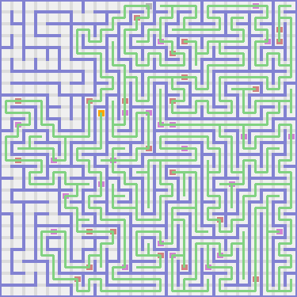
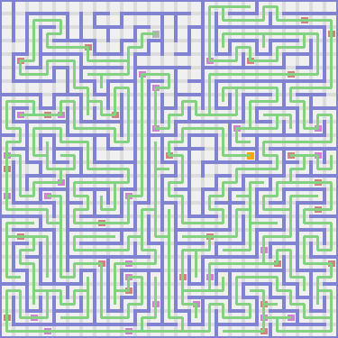
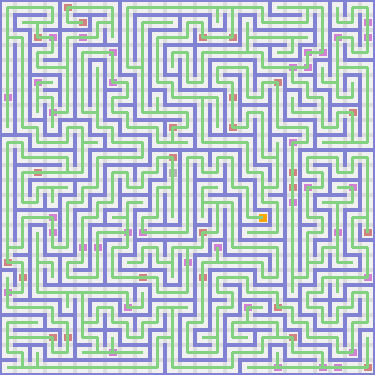
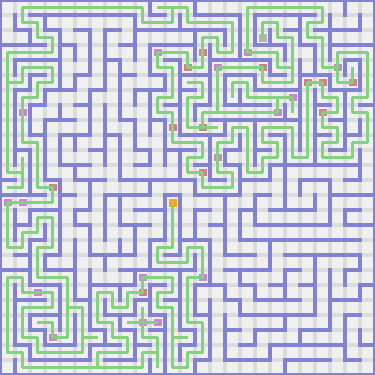

PROLOGUE
I am a botanist and a zoologist. I came to this complex of mazes to catalog flora and fauna. What follows is the journal of my travails.
CHAPTER ONE
I marched down. There was a coyote there. I named it Alexandra.
I walked up. Then I paraded right. Then I ambled up. Again I walked up. There was a beautiful asparagus iri there. It smelled like feijoas.
I shuffled left. Again I shuffled left. Then I toddled up. Then I ambled right. Then I went up. Then I toddled left. Then I went up. Then I shuffled left. There was a beautiful piggy pink heather there. It smelled like guavas.
I marched left. Again I strode left. Again I walked left. Then I stepped down. Again I paraded down. Then I traipsed left. Again I meandered left. There was a wolverine there. I named it Alana.
I walked left. Then I shambled up. Then I shuffled right. Again I marched right. Then I went up. There was a beautiful sunset orange marjoram there. It smelled like boysenberries. I picked it.
I trudged left. Then I went up. Then I ambled right. Then I strode up. Then I meandered right. Then I strode up. Then I meandered right. There was a beautiful fuchsia bottlebrush there. It smelled like pears.
I plodded down. Then I trekked right. Again I trekked right. Again I ran right. Then I shambled down. Then I shuffled right. Then I stepped down. Then I ambled right. Again I sauntered right. Then I stepped down. Then I traipsed down a flight of stairs. So far I held one flower.
CHAPTER TWO
I shambled right. Then I plodded up. Again I strode up. Again I trekked up. Then I strode right. Again I shambled right. Then I hit a dead-end. I was feeling lost so I retraced my steps.
I strode down. Again I traipsed down. Again I strutted down. Then I hoofed it right. Then I hiked up. Again I meandered up. There was a raccoon there. I named it Jorge. It started following me.
I toddled right. Then I stepped up. Then I trekked right. Again I strutted right. Then I stepped down. Again I strutted down. There was a seal there. I named it Abraham.
I hiked right. Then I strutted down. Then I meandered left. Again I meandered left. Then I shuffled down. Then I sprinted right. Then I shambled down. Then I toddled left. Then I strutted down. Then I strutted left. Again I traipsed left. Then I plodded up. Then I ambled left. Then I hiked down. There was a beautiful mahogany mimosa there. It smelled like ugli fruit.
I toddled left. There was a beautiful pine green lavender there. It smelled like goji berries.
Then I hit a dead-end. I was feeling lost so I retraced my steps.
I marched up. Again I strutted up. Then I strode left. Again I sauntered left. Again I hiked left. Then I hiked down. Then I sauntered left. Then I trekked down. Again I went down. Again I hiked down. Then I stepped left. Then I hiked down. Then I meandered right. Then I hit a dead-end. I was feeling lost so I retraced my steps.
I ran left. Then I hoofed it down. Then I stepped right. Then I hit a dead-end. I was feeling lost so I retraced my steps.
I hoofed it up. Then I hit a dead-end. I was feeling lost so I retraced my steps.
I hoofed it left. Then I trudged down. Then I went left. Again I trekked left. Then I hit a dead-end. I was feeling lost so I retraced my steps.
I ambled up. Then I trudged left. Then I strutted up. Then I ran right. There was a gopher there. I named it Jackson.
I sauntered right. Then I shuffled up. Then I traipsed left. Again I ambled left. Again I plodded left. Then I ran up. Again I sprinted up. There was a beautiful cotton candy babys breath there. It smelled like rock melons.
I paraded left. There was a fox there. I named it Gage.
I strutted left. Again I sauntered left. Again I trekked left. Then I strode up. Then I hit a dead-end. I was feeling lost so I retraced my steps.
I trudged up. There was an elk there. I named it Laura.
I walked right. There was a beautiful apricot begonium there. It smelled like blood oranges.
I meandered right. There was a beautiful turquoise blue snapdragon there. It smelled like jackfruits.
I plodded right. Then I plodded up. Then I marched left. Again I hoofed it left. Again I sauntered left. Again I ran left. Again I ran left. Again I toddled left. Again I sauntered left. Then I shambled down. Again I marched down. Then I hit a dead-end. I was feeling lost so I retraced my steps.
I meandered left. Again I hoofed it left. Again I hoofed it left. Then I went down. Again I sauntered down. Again I traipsed down. Then I ran right. Then I ambled up. Again I toddled up. There was a fox there. I named it Jazmin.
I stepped right. There was a beautiful turquoise blue foxglove there. It smelled like quinces.
I toddled down. Again I walked down. Then I sauntered right. Again I trekked right. There was a beautiful midnight blue aster there. It smelled like blueberries. I picked it and added it to the rest of my bouquet.
I toddled up. Again I ambled up. Then I plodded right. Then I shuffled down. Again I trekked down. Again I plodded down. Then I beat cheeks right. Then I shambled up. Then I shuffled right. There was a beautiful tropical rain forest anemone there. It smelled like kumquats.
I trekked down. There was a beautiful spring green lily there. It smelled like blood oranges. I picked it and added it to the rest of my bouquet.
I strode right. Again I ambled right. Then I shuffled down. Then I trudged left. There was a beautiful raw sienna dahlium there. It smelled like lemons.
I hoofed it left. Then I trekked down. Then I toddled right. Again I hoofed it right. Again I marched right. Then I toddled down. Then I shambled left. Then I hiked down. Again I sprinted down. Then I beat cheeks left. Then I shuffled down. Then I marched right. Then I sauntered down. Again I sprinted down. There was a beautiful carnation pink bergamot there. It smelled like canary melons. I picked it and added it to the rest of my bouquet.
I sprinted left. Then I strutted up. Then I hit a dead-end. I was feeling lost so I retraced my steps.
I hiked right. Then I hit a dead-end. I was feeling lost so I retraced my steps.
I beat cheeks right. Then I sauntered up. Then I ran right. Then I sauntered down. Again I strode down. There was a beautiful beaver narcissu there. It smelled like redcurrants.
I shambled left. Then I went down. Then I sprinted right. Then I trudged down. Then I shuffled right. Then I ambled up. There was a beautiful macaroni and cheese orange blossom there. It smelled like rock melons.
I stepped right. Again I hiked right. Then I traipsed up. Then I traipsed right. Then I marched up. Then I sprinted right. Then I plodded up. Then I trudged left. There was an otter there. I named it Layla.
I trudged up. Then I paraded right. Again I hoofed it right. There was a finch there. I named it Laura.
I shuffled right. There was a dog there. I named it Joseph.
I hiked right. Then I trekked down. Then I meandered right. Then I hiked up. Again I paraded up. Then I stepped right. Then I trudged down. Again I plodded down. Again I ran down. Then I shuffled left. There was a wolverine there. I named it Jorge.
I traipsed left. Again I trudged left. Again I shambled left. Then I hoofed it down. Then I strutted right. There was a hamster there. I named it Gabriella.
I trudged down. Then I ran right. Then I stepped up. Then I sprinted right. There was a beautiful atomic tangerine camellia there. It smelled like goji berries.
I paraded right. Then I shambled down. Then I trudged left. Then I marched down. Again I ambled down. Again I ran down. Then I went right. Then I went down. Again I trekked down. Again I hiked down. Again I sprinted down. Again I toddled down. Again I marched down. Again I trudged down. Again I walked down. Then I ambled left. Then I trekked up. Then I shuffled left. Then I went up. Again I shambled up. There was a llama there. I named it Grace.
I marched right. Then I meandered up. Again I toddled up. Then I sauntered left. Again I meandered left. Then I shuffled up. There was a platypus there. I named it Alejandro.
I plodded up. Then I shambled left. Then I stepped up. Then I plodded left. Again I strutted left. Then I ambled down. There was a beautiful spring green peach blossom there. It smelled like kumquats.
I meandered left. Then I ran down. Then I walked left. There was a beautiful laser lemon columbine there. It smelled like lychees.
I stepped left. There was a chameleon there. I named it Jake.
I marched left. Then I hiked up. Again I shambled up. Again I stepped up. Then I traipsed left. Then I went down. Again I walked down. Then I paraded left. Again I marched left. Then I meandered up. Then I toddled right. Then I strode up. Then I sprinted left. Again I traipsed left. Then I strutted up. Then I shuffled left. There was a beautiful shocking pink holly there. It smelled like cloudberries.
I marched left. Then I walked up. Then I paraded right. Again I beat cheeks right. Then I shambled up. Again I plodded up. Then I strode left. Then I trudged down. Then I marched left. Then I toddled up. There was a turtle there. I named it Jake.
I shambled left. Then I hiked down. Then I shambled left. Then I walked up. Again I paraded up. Again I ran up. Then I marched left. Again I beat cheeks left. Again I went left. Then I strode up. Again I strutted up. Again I meandered up. Then I paraded right. Then I stepped down. Then I sauntered right. Then I strutted down. Then I strode right. Again I paraded right. There was a parrot there. I named it Christina.
I walked up. Then I marched right. Then I stepped down. Again I sauntered down. Then I toddled right. Again I toddled right. Again I sprinted right. Then I trudged down. Then I stepped down a flight of stairs. So far one animal was following me, and I held four flowers.
CHAPTER THREE
I ran west. Then I toddled north. Again I sprinted north. Again I stepped north. Then I shambled west. Then I hoofed it north. Again I strutted north. Again I strode north. Then I walked east. There was a beautiful screamin' green rosemary there. It smelled like mangoes.
I strutted south. Then I trudged east. Then I sprinted north. Then I went east. There was a wolverine there. I named it Gregory. It started following me.
I sauntered east. Then I plodded south. Then I went west. Then I hit a dead-end. I was feeling lost so I retraced my steps.
I hiked east. Then I ran north. Then I hoofed it west. Then I trudged north. Then I hiked west. Again I sprinted west. Then I sauntered south. There was a beautiful screamin' green anemone there. It smelled like kiwi fruit.
I hoofed it east. Then I hit a dead-end. I was feeling lost so I retraced my steps.
I strutted east. Then I hit a dead-end. I was feeling lost so I retraced my steps.
I toddled south. Then I walked west. Then I hit a dead-end. I was feeling lost so I retraced my steps.
I strutted west. Then I hit a dead-end. I was feeling lost so I retraced my steps.
I sauntered south. Then I traipsed west. Again I strode west. Then I traipsed north. Then I strode west. Then I traipsed south. Again I strode south. Then I sauntered east. Then I hit a dead-end. I was feeling lost so I retraced my steps.
I ambled east. Then I hit a dead-end. I was feeling lost so I retraced my steps.
I strode east. Then I hiked north. Again I ran north. Then I strode east. Then I strutted north. Then I beat cheeks east. Again I ran east. Then I strutted north. Then I plodded east. Then I ran north. Then I meandered east. Again I shuffled east. There was a beautiful forest green bird of paradise there. It smelled like mulberries.
Then I hit a dead-end. I was feeling lost so I retraced my steps.
I traipsed south. Again I hiked south. Again I shuffled south. There was a leopard there. I named it Brianna.
I hoofed it east. Then I toddled north. Again I strutted north. Then I ambled east. There was a beautiful sunglow gerbera daisy there. It smelled like physaliss. I picked it and added it to the rest of my bouquet.
I trekked north. Then I sprinted east. Then I traipsed north. Then I shambled west. Again I traipsed west. Again I marched west. Again I plodded west. Then I sprinted north. Again I hoofed it north. Then I sprinted west. Again I paraded west. Again I traipsed west. Again I strode west. Then I paraded north. Again I hiked north. Then I plodded east. Again I shuffled east. Then I shambled north. Then I trudged west. Again I trekked west. There was a kangaroo there. I named it Katie.
I toddled west. Again I walked west. Then I ran south.
Gregory asked Jorge, "What exactly are you?"
"Well, I'm a raccoon. I have an integrity and I can bicycle badly, can you?"
"No I can't," replied Gregory.
Again I marched south. There was a beautiful wild blue yonder water lily there. It smelled like pineapples.
I beat cheeks west. Again I strutted west. Again I strode west. There was a newt there. I named it Colin.
I beat cheeks west. Then I plodded north. Then I stepped east. Then I sprinted north. Then I traipsed west. Again I trekked west. Then I meandered south. Again I paraded south. Again I sauntered south. Again I toddled south. Then I shambled west. There was a beautiful burnt orange dahlium there. It smelled like cherimoyas.
I hoofed it west. Then I sprinted south. Then I ran west. Again I shambled west. Then I sauntered north. Then I went east. There was a jackal there. I named it Jayla.
I shuffled north. Again I shuffled north. Then I meandered west. Then I toddled south. There was a chimpanzee there. I named it Eva.
Then I hit a dead-end. I was feeling lost so I retraced my steps.
I paraded north. Again I meandered north. There was a turtle there. I named it Cristian.
I shambled east. Again I went east. Then I plodded south. Again I hoofed it south. There was a beautiful cornflower rosemary there. It smelled like gooseberries.
I trudged east. Then I hoofed it south. Then I ambled west. Then I hit a dead-end. I was feeling lost so I retraced my steps.
I shuffled north. Again I ambled north. Then I hit a dead-end. I was feeling lost so I retraced my steps.
I trekked west. Then I hit a dead-end. I was feeling lost so I retraced my steps.
I sauntered south. Again I paraded south. Then I ambled east. Then I stepped north. Then I trudged east. Again I sprinted east. Then I shuffled south. Then I hiked east. Then I traipsed south. There was an elk there. I named it Lauren.
I traipsed west. Then I shuffled south. Again I traipsed south. Then I walked east. Then I ran north. Then I hit a dead-end. I was feeling lost so I retraced my steps.
I ran south. Then I strode west. Again I toddled west. Then I strode north. Then I paraded west. Then I hoofed it north. Then I strutted west. Then I plodded north. There was a beautiful green yellow columbine there. It smelled like rambutans.
I beat cheeks east. Again I shuffled east. Then I ran north. Then I hit a dead-end. I was feeling lost so I retraced my steps.
I sprinted south. Then I hit a dead-end. I was feeling lost so I retraced my steps.
I trekked south. Again I hiked south. Then I hoofed it east. Then I went south. Then I beat cheeks west. There was a crocodile there. I named it Luis. It started following me.
I plodded south. Again I strutted south. Then I went east. Then I shambled north. There was a lynx there. I named it Haley.
I plodded east. Then I sauntered north. Then I trekked east. Then I shuffled south. Again I sprinted south. Then I sauntered east. Again I paraded east. Again I toddled east. There was a fox there. I named it Garrett.
I strode south. Again I ran south. Again I stepped south. Again I walked south. Then I walked west. Again I shambled west. There was a beautiful cadet blue primrose there. It smelled like pomeloes.
I ambled west. Again I sauntered west. Again I marched west. Then I plodded north. Then I meandered west. There was a lemur there. I named it Mario.
I beat cheeks north. Then I ambled east. Then I hoofed it north. Then I traipsed east. Then I trekked north. Then I hit a dead-end. I was feeling lost so I retraced my steps.
I beat cheeks east. There was a beautiful tan chrysantemum there. It smelled like clementines.
I ambled east. Then I ambled south. Then I went east. Then I meandered north. Then I hit a dead-end. I was feeling lost so I retraced my steps.
I stepped south. Then I strutted west. Again I trudged west. Then I plodded north. Then I strutted west. Then I strode south. Then I hit a dead-end. I was feeling lost so I retraced my steps.
I ran west. There was a kangaroo there. I named it Danielle.
Then I hit a dead-end. I was feeling lost so I retraced my steps.
I went south. Again I went south. Then I marched east. There was a platypus there. I named it Sofia.
I shambled south. Then I shuffled east. Again I strode east. Again I marched east. Again I sprinted east. There was a kangaroo there. I named it Katelyn. It started following me.
I went south. Then I ran west. Again I shuffled west. Then I beat cheeks south. Then I walked east. Then I ran south. Again I plodded south. There was an opossum there. I named it Kaitlyn.
I beat cheeks west. Again I shambled west. There was a beautiful wild blue yonder anemone there. It smelled like kumquats.
I strutted west. There was a beautiful gray columbine there. It smelled like jujubes.
I stepped west. Then I trudged north. Again I hiked north. Then I walked east. Then I trudged north. Then I hiked west. Then I trudged north. There was a beautiful unmellow yellow dahlium there. It smelled like jackfruits. For some reason I ate it. It tasted delicious.
Then I hit a dead-end. I was feeling lost so I retraced my steps.
I shuffled east. Then I strode south. Again I shuffled south. Then I meandered east. Then I hit a dead-end. I was feeling lost so I retraced my steps.
I beat cheeks west. Then I hit a dead-end. I was feeling lost so I retraced my steps.
I hiked east. Then I ambled north. Again I ambled north. Then I paraded east. Then I trekked south. Then I marched east. Then I trekked south. Then I hoofed it west. Then I hit a dead-end. I was feeling lost so I retraced my steps.
I stepped east. Then I ambled north. There was a marmoset there. I named it Cesar.
I traipsed east. Then I went north. Then I sprinted east. Then I trekked north. Then I toddled west. Again I strutted west. Then I strutted north. There was a beautiful jazzberry jam gladiolu there. It smelled like blood oranges.
I strode west. Again I trudged west. Then I stepped south. Then I went east. Then I trekked south. Then I paraded east. There was an antelope there. I named it Daniel.
Then I hit a dead-end. I was feeling lost so I retraced my steps.
I stepped north. Then I went west. Again I shuffled west. There was a beautiful mauvelous clover there. It smelled like guavas.
I sprinted west. Again I toddled west. Then I hit a dead-end. I was feeling lost so I retraced my steps.
I shambled east. Then I paraded north. Then I traipsed east. Then I hoofed it north. Then I went west. There was a lion there. I named it Timothy. It started following me.
I shuffled north. Then I went east. Then I ambled north. Then I stepped east.
Luis asked Gregory, "What exactly are you?"
"Well, I'm a wolverine and I'm carnivorou."
Again I toddled east. Again I shambled east. Again I strode east. Then I ran south. Again I ambled south. Then I marched west. Then I walked south. Again I plodded south. Then I sauntered east. Again I shuffled east. Again I toddled east. Then I stepped north. Then I hiked west. Again I traipsed west. Then I hit a dead-end. I was feeling lost so I retraced my steps.
I stepped north. Again I toddled north. Then I sprinted east. Then I strode south. Then I sprinted east. Then I toddled north. Then I traipsed east. Then I stepped south. Again I ran south. Again I shuffled south. Then I trudged west. Then I strutted south. Then I shambled west. Then I strode south. Then I went east. Again I traipsed east. Then I traipsed north. Then I ran east. Then I trudged south. Again I meandered south. Then I strutted west. Then I walked south. Again I went south. Then I strutted east. Again I traipsed east. Then I toddled north. Then I trudged west. There was a beautiful brick red bergamot there. It smelled like tamarilloes.
Then I hit a dead-end. I was feeling lost so I retraced my steps.
I ambled north. Again I strode north. Again I beat cheeks north. Then I hit a dead-end. I was feeling lost so I retraced my steps.
I went west. Then I toddled north. Then I went west. Then I trekked south. Then I stepped west. Again I toddled west. Again I paraded west. Again I marched west. Again I meandered west. Then I hit a dead-end. I was feeling lost so I retraced my steps.
I strode north. Then I sauntered east. Then I went north. Again I stepped north. Again I ambled north. Then I toddled east. Again I toddled east. Then I ran south. Again I trekked south. Again I hiked south. Then I strode west. Then I stepped north. Again I meandered north. Then I hit a dead-end. I was feeling lost so I retraced my steps.
I toddled east. Again I paraded east. Then I hit a dead-end. I was feeling lost so I retraced my steps.
I sauntered west. Then I beat cheeks north. Again I shuffled north. Again I ambled north. Then I trekked west. Then I shambled north. Then I stepped east. Again I ran east. There was a beautiful chestnut primrose there. It smelled like rock melons.
Then I hit a dead-end. I was feeling lost so I retraced my steps.
I paraded south. Again I stepped south. There was a beautiful sky blue bergamot there. It smelled like mangoes.
I plodded south. Then I hit a dead-end. I was feeling lost so I retraced my steps.
I ran west. Then I hit a dead-end. I was feeling lost so I retraced my steps.
I strutted north. Then I hit a dead-end. I was feeling lost so I retraced my steps.
I ambled north. Then I trudged west. Again I strode west. Then I hit a dead-end. I was feeling lost so I retraced my steps.
I hiked west. Then I hit a dead-end. I was feeling lost so I retraced my steps.
I marched north. Then I plodded west. Again I beat cheeks west. Then I meandered north. Then I hit a dead-end. I was feeling lost so I retraced my steps.
I sauntered north. Again I strutted north. Then I toddled west. Then I hit a dead-end. I was feeling lost so I retraced my steps.
I strutted east. Then I strode north. Again I beat cheeks north. Then I sprinted east. There was a raccoon there. I named it Jasmin.
I hiked south. Again I paraded south. Again I trudged south. Again I traipsed south. There was an ape there. I named it Laura.
I meandered west. Then I stepped north. There was a baboon there. I named it Jillian.
Then I hit a dead-end. I was feeling lost so I retraced my steps.
I hoofed it east. Again I hiked east. Again I hoofed it east. Then I walked south. Then I hit a dead-end. I was feeling lost so I retraced my steps.
I traipsed east. Then I shuffled south. Then I traipsed east. Then I meandered north. Then I hit a dead-end. I was feeling lost so I retraced my steps.
I paraded south. Again I plodded south. Again I trekked south. There was a panda there. I named it Paige.
I hoofed it south. Again I strode south. Then I trekked west. Again I shuffled west. Then I ran north. Then I walked west. There was a buffalo there. I named it Eli.
I trudged south. Again I ran south. Again I plodded south. Then I marched east. Then I trekked south. Then I trekked west. Again I marched west. Again I plodded west. There was a beautiful wild watermelon rose there. It smelled like mangoes.
I ambled south. There was a lion there. I named it Kaleb.
I hiked south. Again I trekked south. Again I meandered south. Then I ran east. Again I plodded east. Then I strutted south. Again I sauntered south. Then I beat cheeks east. Then I meandered north. Again I walked north. Again I stepped north. Then I trudged east. There was a beautiful neon carrot chrysantemum there. It smelled like kumquats.
I trudged south. Again I sauntered south.
Katelyn asked Timothy, "What exactly are you?"
"Well, I'm a lion and I'm agressive animal. I have a fur and I can corner prey, can you?"
"No I can't, but I do know how to jump far!" replied Katelyn.
Again I went south. Then I hiked east. Again I shuffled east. Then I meandered north. Then I beat cheeks east. Then I beat cheeks south. Then I shuffled east. Again I strutted east. Again I sprinted east. Again I sprinted east. Then I plodded south. Then I toddled east. Again I sprinted east. Then I hit a dead-end. I was feeling lost so I retraced my steps.
I sauntered north. Then I ambled east. Again I trudged east. Again I hoofed it east. Again I hoofed it east. Then I hit a dead-end. I was feeling lost so I retraced my steps.
I toddled south. There was a snake there. I named it Erica.
I went west. Then I marched south. Then I marched west. Again I strutted west. Then I ran south. Again I toddled south. There was a mountain goat there. I named it Oliver.
I trekked south. Then I beat cheeks east. There was a beautiful blush marigold there. It smelled like tangerines.
I sauntered east. Again I hoofed it east. Then I plodded south. Then I traipsed west. Then I plodded south. Again I plodded south. Again I strode south. Again I strutted south. Then I shuffled east. Again I sprinted east. Again I ambled east. Then I trekked north. There was a puma there. I named it Ayden.
I walked west. Again I plodded west. Then I trekked north. Again I paraded north. Then I paraded east. Then I strode south. Then I walked east. Then I hiked north. Then I went east. Then I went north. Then I beat cheeks west. Again I walked west. Then I stepped north. Again I meandered north. Then I traipsed west. There was a beautiful caribbean green anemone there. It smelled like ugli fruit.
I walked west. Then I hoofed it north. Then I went east. Again I ran east. Then I strode north. There was a shrew there. I named it Braden. It started following me.
I marched north. Then I stepped east. Then I sauntered north. Again I went north. Then I meandered east. Then I trudged north. Then I hiked west. Again I hiked west. Then I ran south. Then I stepped down a flight of stairs. Katelyn the kangaroo stopped following me for some reason.
So far five animals were following me, and I held five flowers.
CHAPTER FOUR
I hoofed it south. Then I sauntered north. There was a beautiful shocking pink camellia there. It smelled like figs. I picked it and added it to the rest of my bouquet.
I trudged north. Then I hit a dead-end. I was feeling lost so I retraced my steps.
I shambled east. There was a cow there. I named it Alan.
Then I hit a dead-end. I was feeling lost so I retraced my steps.
I traipsed south. Again I sauntered south. Then I shuffled east. Then I plodded south. Then I strutted east. There was a beautiful vivid tangerine rose there. It smelled like lemons.
I strutted north. Then I hit a dead-end. I was feeling lost so I retraced my steps.
I toddled south. Then I trudged west. Then I meandered south. Then I meandered west. Then I ran north. Then I plodded west. Then I ambled north. Then I trekked east. Then I traipsed north. Then I hit a dead-end. I was feeling lost so I retraced my steps.
I paraded east. Then I ran north. Again I hoofed it north. Then I went west. Again I strutted west. Then I marched south. Then I hoofed it west. Then I shuffled south. Then I toddled west. Again I strode west. Again I sauntered west. Then I walked north. Again I marched north. Then I hit a dead-end. I was feeling lost so I retraced my steps.
I shuffled west. Then I ambled north. Then I sprinted west. Again I sauntered west. Again I sprinted west. Then I sauntered north. Then I went east. Then I marched north. Then I plodded west. Again I beat cheeks west. Then I beat cheeks south. Then I trudged west. Then I marched south. Again I meandered south. Then I meandered west. Then I plodded south. There was a ewe there. I named it Adriana.
I plodded east. Then I strutted south. Again I plodded south. Then I walked west.
Jorge asked Luis, "What exactly are you?"
"Well, I'm a crocodile and I'm carnivorou. I can leave water, can you?"
"No I can't, but I do know how to climb tree!" replied Jorge.
Then I strutted south. Then I ambled west. Then I beat cheeks north. Again I shuffled north. Again I meandered north. Again I marched north. Again I plodded north. Then I ran east. Then I traipsed north. Then I ran west. Then I sauntered north. Then I strode west. Again I ran west. Then I meandered south. Then I trekked east. Then I strode south. Again I shambled south. Then I plodded west. Then I sprinted north. Then I ran west. Then I sauntered north. Again I went north. There was a pig there. I named it Addison.
I plodded north. Then I sauntered east. Again I trekked east. Again I went east. Again I went east. Then I walked south. Then I ambled east. Then I ran north.
Jorge asked Braden, "What exactly are you?"
"Well, I'm a shrew."
Then I walked east. Again I shuffled east. Again I strutted east. Again I ambled east. Again I sauntered east. There was a whale there. I named it Paul.
I paraded east. Again I toddled east. Then I paraded south. Then I ambled west. Again I trudged west. There was a beautiful blue gerbera daisy there. It smelled like plums.
I marched south. Then I sprinted east. Again I walked east. Then I meandered south. Again I ambled south. Then I traipsed east. Then I hoofed it north. Again I hiked north. Then I traipsed east. Again I hiked east. Again I sauntered east. Again I ran east. Then I hiked north. Again I hoofed it north. Then I paraded east. Again I paraded east. Then I traipsed south. Then I ambled east. Then I shambled north. Then I plodded east. There was a panther there. I named it Cassidy.
I ran east. Again I shuffled east. Again I trudged east. Then I hit a dead-end. I was feeling lost so I retraced my steps.
I hiked south. Then I ambled east. There was a muskrat there. I named it Jada.
I hoofed it east. Again I trekked east. Then I sprinted south. Again I sauntered south. Again I stepped south.
Braden asked Jorge, "What exactly are you?"
"Well, I'm a raccoon. I have an integrity and I can climb tree, can you?"
"No I can't," replied Braden.
Again I sprinted south. Then I marched west. Then I meandered north. Again I went north. Then I walked west. Again I shuffled west. Then I went north. Then I ambled west. Then I hiked south. There was a beautiful dandelion peony there. It smelled like physaliss.
I stepped west. Then I trudged south. Then I ambled east. Again I hoofed it east. Again I toddled east. Then I sauntered south. Then I strutted west. Then I toddled south. Again I sprinted south. There was an armadillo there. I named it Miguel.
I shuffled south. There was a mouse there. I named it Angel.
I sprinted west. Then I hoofed it north. There was a beautiful yellow orange delphinium there. It smelled like raisins.
I marched west. Again I trekked west. Then I hoofed it south. Then I marched east.
Gregory asked Braden, "What exactly are you?"
"Well, I'm a shrew."
Then I toddled south. Again I sprinted south. Again I strode south. Then I ambled west. There was a warthog there. I named it Amber.
I paraded south. Then I beat cheeks west. Then I strode north.
Braden asked Luis, "What exactly are you?"
"Well, I'm a crocodile and I'm carnivorou. I can leave water, can you?"
"No I can't," replied Braden.
Then I meandered west. Then I walked north. Then I beat cheeks west. Again I traipsed west. Then I sauntered north. Then I hit a dead-end. I was feeling lost so I retraced my steps.
I hiked east. Again I strode east. Then I meandered north. Then I sauntered west. Then I strode north. Then I ran west. Then I shambled south. Then I shuffled west. Then I paraded north. There was a beautiful cotton candy mimosa there. It smelled like damsons.
I walked west. Again I sauntered west. Again I ambled west. Then I ran north. Then I trudged west. Then I sprinted north. Then I walked west. Again I trekked west. There was an ox there. I named it Alexandria.
I trekked west. Then I marched south. Then I ambled east. Again I plodded east. Then I shuffled south. Again I toddled south. Again I toddled south. There was a beautiful tropical rain forest orchid there. It smelled like cherries.
I marched south. Then I hit a dead-end. I was feeling lost so I retraced my steps.
I ran west. Again I shambled west. Then I trekked south. Then I shuffled east. Then I traipsed south. Then I shambled east. Again I sprinted east. Then I went north. Again I strutted north. Again I ambled north. Then I ambled east. Again I traipsed east. Then I toddled south. Again I ran south. Again I trekked south. Then I ambled east. Then I sprinted north. Then I toddled east. Then I sauntered south. Then I ran east. Then I sprinted south. Then I strode east. Then I hiked south. Then I shambled west. Then I walked south. Then I stepped west. Again I went west. Then I shuffled north. Then I hiked east. Then I sprinted north. Then I walked west. Again I ambled west. Again I went west. Again I hoofed it west. There was a silver fox there. I named it Camila.
I walked west. Then I hiked south. Again I marched south. Then I traipsed east. Then I shuffled south. Again I hoofed it south. Again I shambled south. Then I hiked east. Then I plodded south. Again I traipsed south. Then I went east. Then I strutted north. Again I shuffled north.
Timothy asked Luis, "What exactly are you?"
"Well, I'm a crocodile and I'm carnivorou. I can leave water, can you?"
"No I can't, but I do know how to kill!" replied Timothy.
Then I hiked east. Again I sprinted east. Then I hit a dead-end. I was feeling lost so I retraced my steps.
I ran north. There was a beautiful aquamarine mimosa there. It smelled like figs.
I trekked east. Then I strutted north. Then I strutted east. There was an opossum there. I named it Avery.
I sprinted east. Then I meandered north. Then I stepped east. Then I strode south. Again I ambled south. Then I hoofed it west. There was a zebra there. I named it Nevaeh.
I ambled west. Then I traipsed south. Again I shambled south. Again I paraded south. Then I meandered west. Then I sprinted north. Then I hoofed it west. Then I sprinted down a flight of stairs. So far five animals were following me, and I held six flowers.
CHAPTER FIVE

I sauntered west. Then I shambled east. Then I marched south. Then I plodded east. Again I traipsed east. Again I stepped east. Again I toddled east. Then I shuffled north. Then I stepped east. Then I toddled south. Then I trekked east. Then I strutted north. Then I plodded east. Then I meandered south. Then I paraded east. Then I ran north. There was a beautiful electric lime lavender there. It smelled like elderberries. I picked it and added it to the rest of my bouquet.
I plodded east. There was a baboon there. I named it Molly.
I ambled north. Then I hoofed it west. Then I stepped north. Then I walked west. Again I traipsed west. Then I traipsed south. Then I meandered east. Then I hit a dead-end. I was feeling lost so I retraced my steps.
I traipsed west. There was an elephant there. I named it Jaden.
I hiked north. Again I paraded north. Then I toddled east. Then I strode north. Again I beat cheeks north. Then I meandered east. Then I toddled north. Then I plodded west. Then I toddled north. Then I traipsed west. Then I trekked south. Again I sauntered south. Again I hiked south. Then I sauntered west. There was a beautiful cerise zinnium there. It smelled like pears.
I paraded south. Then I hoofed it west. Then I marched north. Then I sprinted west. Then I ran south. Then I marched west. There was a walrus there. I named it Omar.
I trudged north. Then I hit a dead-end. I was feeling lost so I retraced my steps.
I plodded south. Then I hiked east. Then I went south. Then I shambled west. Again I ran west. Then I hit a dead-end. I was feeling lost so I retraced my steps.
I shambled south. Then I ran east. Again I toddled east. Then I traipsed north. Again I toddled north. Then I shambled east. Then I hoofed it south. Then I hit a dead-end. I was feeling lost so I retraced my steps.
I traipsed north. Then I strode east. Then I hit a dead-end. I was feeling lost so I retraced my steps.
I went east. There was a beautiful raw sienna bottlebrush there. It smelled like pomegranates.
I beat cheeks east. Then I plodded south. Again I sauntered south. Again I walked south. Again I ambled south. Then I went east. Then I strutted north. There was a monkey there. I named it Donovan.
I beat cheeks north. Again I toddled north. Then I shambled east. Then I stepped south. Again I strode south. Again I plodded south. There was a lamb there. I named it Brooklyn.
I strode east. Then I hiked north. Then I sprinted east. Again I toddled east. Then I traipsed south. Again I meandered south. Again I ambled south. Then I strode east. Again I stepped east. Then I traipsed south. There was a beautiful fuchsia lilac there. It smelled like cherries.
I sauntered west. There was a beautiful red bellflower there. It smelled like nectarines.
I meandered west. Then I meandered south. Then I shambled west. Again I strutted west. Again I shuffled west. Again I ran west. Then I hit a dead-end. I was feeling lost so I retraced my steps.
I shambled north. Then I went east. Again I ran east. Then I plodded north. Then I trekked west. Again I sprinted west. Then I paraded north. Then I stepped east. Again I shambled east. Then I trekked north. Then I hit a dead-end. I was feeling lost so I retraced my steps.
I shuffled west. There was a crow there. I named it Maxwell.
Then I hit a dead-end. I was feeling lost so I retraced my steps.
I traipsed east. Again I strode east. Again I meandered east. Then I went north. There was a beautiful yellow orange amarylli there. It smelled like feijoas. For some reason I ate it. It tasted terrible.
I sprinted east. Again I shambled east. Then I plodded north. There was a beautiful white delphinium there. It smelled like oranges.
I hiked west. There was a beautiful black delphinium there. It smelled like cantaloupes.
I trekked west. Then I plodded north. Then I stepped west. Again I traipsed west. Then I hoofed it north. Again I trudged north. Then I hiked east. Again I meandered east. Again I sauntered east. Again I shambled east. Then I ran south. Again I paraded south. Then I paraded west. Then I strutted north. Then I hoofed it west. Again I stepped west. Then I hit a dead-end. I was feeling lost so I retraced my steps.
I went north. Then I sauntered west. Again I ran west. There was a beautiful hot magenta heather there. It smelled like goji berries.
I hoofed it north. Then I plodded east. Then I paraded north. Then I trudged west. Again I plodded west. Then I paraded north. There was a snake there. I named it Gregory.
I shambled north. Then I sprinted east. Then I hoofed it south. Then I plodded east. Again I hoofed it east. Then I hiked south. Again I meandered south. Then I hit a dead-end. I was feeling lost so I retraced my steps.
I strutted north. Again I ambled north. There was a beautiful mauvelous marigold there. It smelled like purple mangosteens.
I strutted north. Then I beat cheeks west. Again I walked west. Again I sprinted west. Then I shuffled south. Then I hoofed it west. There was a beautiful antique brass buttercup there. It smelled like salal berries.
I went south. There was a cow there. I named it Marcus.
I shambled west. Again I went west. Then I plodded south. There was an orangutan there. I named it Antonio.
I shambled west. Then I hiked south. Then I hiked west. Again I sauntered west. Then I hoofed it north. Then I strode east. Then I hit a dead-end. I was feeling lost so I retraced my steps.
I marched east. Then I trudged south. Again I strode south. Then I strutted east. Again I hiked east. There was a beautiful radical red bergamot there. It smelled like rock melons.
I plodded east. There was a beautiful screamin' green azalea there. It smelled like eggplants. I picked it and added it to the rest of my bouquet.
I ran north. There was a beautiful cerulean crocu there. It smelled like rambutans.
I toddled west. Then I hiked north. Then I trekked west. There was a beautiful dandelion edelweis there. It smelled like cloudberries.
I meandered north. There was a beautiful sky blue thyme there. It smelled like loquats. I picked it and added it to the rest of my bouquet.
I strode east. Then I hit a dead-end. I was feeling lost so I retraced my steps.
I traipsed south. Then I hit a dead-end. I was feeling lost so I retraced my steps.
I strode west. Then I stepped north. Then I hit a dead-end. I was feeling lost so I retraced my steps.
I hiked north. Again I ran north. There was a beautiful vivid tangerine sage there. It smelled like mangoes.
I strutted west. Then I stepped north. Again I meandered north. There was a beautiful vivid tangerine columbine there. It smelled like elderberries.
I plodded east. Then I walked south. Then I beat cheeks east. Then I hoofed it south. Again I sauntered south. There was a wolverine there. I named it Ayden.
Then I hit a dead-end. I was feeling lost so I retraced my steps.
I marched east. Then I walked north. Then I sprinted east. There was a camel there. I named it Brooklyn.
I trudged east. Again I sauntered east. Again I marched east. Then I hit a dead-end. I was feeling lost so I retraced my steps.
I paraded east. Again I hoofed it east. There was a beautiful mauvelous daisy there. It smelled like honeydews.
I marched south. Then I hit a dead-end. I was feeling lost so I retraced my steps.
I meandered south. Then I hiked west. There was a beautiful vivid tangerine bellflower there. It smelled like pameloes.
Then I hit a dead-end. I was feeling lost so I retraced my steps.
I ambled west. Then I marched north. Then I hit a dead-end. I was feeling lost so I retraced my steps.
I trudged south. Then I ran west. Then I stepped north. Then I trekked west. There was a beautiful orchid bergamot there. It smelled like dates.
I stepped south. Then I strutted west. Again I stepped west. Again I shuffled west. Then I hit a dead-end. I was feeling lost so I retraced my steps.
I toddled north. Then I hoofed it west. Then I plodded north. There was a beautiful burnt sienna orange blossom there. It smelled like dates.
I shuffled east. Then I strutted north. There was a beautiful cadet blue bergamot there. It smelled like cherimoyas.
I ambled west. Then I trekked north. Again I sprinted north. Again I ambled north. Again I meandered north. Then I paraded east. Again I hoofed it east. Again I shuffled east. Again I paraded east. Then I shuffled south. Then I shuffled east. Then I beat cheeks north. Again I trudged north. Then I trudged east. There was a beautiful sky blue bluebell there. It smelled like cherries.
I beat cheeks east. Again I went east. Then I trudged north. Again I hoofed it north. Then I went west. Then I paraded south. Then I paraded west. Then I sprinted north. Then I beat cheeks west. Then I sauntered south. Then I trudged west. Then I trekked north. Then I traipsed west. Again I paraded west. Then I traipsed south. Then I meandered east. Then I shuffled south. Then I toddled east. Then I hit a dead-end. I was feeling lost so I retraced my steps.
I hiked west. Again I trekked west. Again I walked west. Then I trekked north. Then I trudged east. Then I shuffled north. Then I hoofed it west. Then I hiked north. Again I toddled north. Again I sauntered north. Again I traipsed north. Then I sauntered east. Then I toddled north. There was a beautiful pink sherbert bird of paradise there. It smelled like cranberries.
I shambled west. Then I trekked north. Again I meandered north. Then I shambled east. Then I stepped south. Then I sauntered east. Then I beat cheeks south. Then I marched east. Then I sprinted south. Again I trudged south. Then I beat cheeks east. Then I meandered south. There was a silver fox there. I named it Samuel.
I paraded south. Then I trekked west. Then I strode north. Then I went west. Then I walked north. Again I hoofed it north. Then I hit a dead-end. I was feeling lost so I retraced my steps.
I trekked west. Then I walked south. Again I ambled south. Then I traipsed east. There was a wombat there. I named it Bryson.
Then I hit a dead-end. I was feeling lost so I retraced my steps.
I went east. Then I sauntered north. Then I shambled east. Again I ambled east. Then I plodded north. Then I meandered east. There was a monkey there. I named it Angelica.
I sauntered east. Then I trudged south. Then I strode west. There was a beautiful pink flamingo anemone there. It smelled like apricots. I picked it and added it to the rest of my bouquet.
I hoofed it south. Then I meandered west. Again I shuffled west. There was an elk there. I named it Tristan.
Then I hit a dead-end. I was feeling lost so I retraced my steps.
I shuffled north. Then I traipsed east. Then I sauntered north. Then I walked west. Again I traipsed west. There was an alpaca there. I named it Elijah.
I sprinted north. Again I hoofed it north. There was a beautiful burnt sienna chrysantemum there. It smelled like honeydews.
I sauntered east. Then I hiked south. Then I traipsed east. Again I strutted east. Then I beat cheeks south. There was a beautiful laser lemon holly there. It smelled like pears.
I sauntered south. There was a beautiful melon sage there. It smelled like huckleberries.
I ambled east. Then I hiked south. Again I strode south. Then I hit a dead-end. I was feeling lost so I retraced my steps.
I ambled west. Again I paraded west. There was a beautiful eggplant bluebell there. It smelled like grapes.
Then I hit a dead-end. I was feeling lost so I retraced my steps.
I traipsed north. Again I strutted north. Then I hit a dead-end. I was feeling lost so I retraced my steps.
I sprinted north. Then I hit a dead-end. I was feeling lost so I retraced my steps.
I shambled north. Then I hit a dead-end. I was feeling lost so I retraced my steps.
I beat cheeks west. Then I plodded south. Then I plodded west. Then I strutted south.
Jorge asked Gregory, "What exactly are you?"
"Well, I'm a wolverine and I'm carnivorou."
Then I shambled east. Again I ran east. Then I hit a dead-end. I was feeling lost so I retraced my steps.
I went west. Again I paraded west. Then I hit a dead-end. I was feeling lost so I retraced my steps.
I shambled south. Then I strutted east. Then I hit a dead-end. I was feeling lost so I retraced my steps.
I paraded north. Then I hit a dead-end. I was feeling lost so I retraced my steps.
I ran south. Then I shuffled west. There was a beautiful salmon bluebell there. It smelled like watermelons.
Then I hit a dead-end. I was feeling lost so I retraced my steps.
I ran east. Again I paraded east. Again I beat cheeks east. Then I ran south. Then I hoofed it east. Then I went south. Again I ambled south. Then I walked west. Again I shuffled west. Then I walked south. Then I sprinted east. Again I sauntered east. Again I strutted east. Then I meandered north. Then I walked east. Then I ran north. Then I marched west. There was a beautiful red orange rhododendron there. It smelled like jackfruits. I picked it and added it to the rest of my bouquet.
I shuffled north. Then I sauntered east. Then I beat cheeks north. Then I ambled east. Again I paraded east. Then I sauntered north. Then I ran east. There was a beautiful canary bottlebrush there. It smelled like mulberries.
I hiked east. Then I trekked north. Again I sprinted north. Again I toddled north. Then I hit a dead-end. I was feeling lost so I retraced my steps.
I shambled west. Then I strode north. Again I toddled north. Again I shambled north. Then I trudged east. Then I went north. Then I beat cheeks east. Then I walked south. There was a beautiful red violet primrose there. It smelled like cherimoyas.
I plodded east. Then I strode south. Then I trekked west. Then I marched south. Then I sprinted east. Again I ambled east. Again I toddled east. Then I hoofed it north. Then I hoofed it east. There was a beautiful pink flamingo jasmine there. It smelled like raspberries.
I strode east. Again I walked east. Then I paraded north. Then I toddled west. Again I paraded west. Again I beat cheeks west. Again I went west. Then I sauntered north. Again I went north. Again I trekked north. Again I shuffled north. Then I hoofed it east. Then I hit a dead-end. I was feeling lost so I retraced my steps.
I paraded north. Then I marched east. Again I strutted east. There was a weasel there. I named it Richard.
I shuffled east. Then I hit a dead-end. I was feeling lost so I retraced my steps.
I shuffled south. Again I sprinted south. Again I ran south. Then I hit a dead-end. I was feeling lost so I retraced my steps.
I paraded west. Then I sauntered south. Again I trekked south. Then I went east. Again I paraded east. Then I stepped north. Again I meandered north. Again I trudged north. Then I marched east. Again I sprinted east. Then I plodded north. Then I trudged west. Then I marched north. Then I meandered east. Again I hiked east. Then I ran south. Again I plodded south. Again I shuffled south. Then I toddled east. Again I paraded east. Again I ran east. Again I walked east. Again I paraded east. Then I ran north. Again I sauntered north. Again I sprinted north. Then I traipsed west. Then I stepped north. Then I traipsed west. Then I hoofed it north. There was a beautiful violet gerbera daisy there. It smelled like watermelons.
I beat cheeks north. Then I toddled west. Then I strutted north. Then I walked west. Then I plodded south. There was a frog there. I named it Jessica.
I hiked south. Then I went west. There was a beautiful macaroni and cheese forget me not there. It smelled like honeydews.
I trekked west. Again I sauntered west. Then I meandered south. There was a beautiful purple pizzazz clover there. It smelled like mangoes.
I went west. Again I hiked west. Again I walked west. Then I hit a dead-end. I was feeling lost so I retraced my steps.
I traipsed south. Then I traipsed west. Again I stepped west. Again I plodded west. Then I strode north. Then I paraded west. Then I trudged south. There was a finch there. I named it Cody.
I shuffled west. Then I traipsed north. There was a beautiful tickle me pink azalea there. It smelled like durians.
I hiked west. Again I sauntered west. Then I trudged north. Again I stepped north. Then I beat cheeks west. Then I walked south. There was a deer there. I named it Maya.
I traipsed west. Then I walked south. Again I meandered south. Then I trudged west. Then I traipsed south. Then I shambled west. Then I sprinted south. Then I shambled west. Then I trekked north. Then I traipsed west. Then I strutted north. Again I shuffled north. Again I ran north. Again I hiked north. Then I shuffled west. Then I ran south. Then I hoofed it west. Then I hit a dead-end. I was feeling lost so I retraced my steps.
I toddled south. Then I sauntered west. Again I walked west. Then I plodded north. Again I trekked north. There was a frog there. I named it Andres.
I meandered north. Again I sauntered north. Again I traipsed north. There was a beautiful green yellow amarylli there. It smelled like canary melons.
I sprinted north. Then I plodded east. Again I meandered east. Again I sprinted east. Then I trekked south. Again I went south. Then I ran east. Then I sprinted north. Again I strutted north. Then I trudged east. Then I meandered south. Then I shuffled east. Then I trekked north. Then I strutted east. Again I walked east. There was a beautiful tickle me pink delphinium there. It smelled like jujubes.
I strode east. Again I traipsed east. Again I meandered east. Again I meandered east. Then I hit a dead-end. I was feeling lost so I retraced my steps.
I shambled south. Then I hit a dead-end. I was feeling lost so I retraced my steps.
I sauntered east. Then I stepped north. Again I sprinted north. Again I sauntered north. Then I traipsed east. There was a chinchilla there. I named it Erick.
I ambled south. Again I went south. Then I traipsed east. Again I shuffled east. Again I plodded east. Then I beat cheeks north. Then I marched east. Again I strutted east. Again I ambled east. Then I hoofed it north. There was a cow there. I named it Veronica.
I toddled east. Again I meandered east. Again I sauntered east. Again I plodded east. Again I walked east. Then I paraded north. Then I marched east. Again I shuffled east. Then I hoofed it south. Again I plodded south. Then I shuffled west. Again I went west. Again I plodded west. Again I sprinted west. Again I walked west. Then I trudged south. There was a beautiful pacific blue rhododendron there. It smelled like limes. I picked it and added it to the rest of my bouquet.
I shuffled south. Then I trudged east. Then I sauntered south. Then I stepped east. Again I plodded east. Again I trudged east. Then I traipsed down a flight of stairs. So far five animals were following me, and I held twelve flowers.
CHAPTER SIX
I trekked right. There was a hamster there. I named it Adrianna.
I ran left. Then I sprinted down. Then I strutted left. Then I traipsed up. Then I stepped left. Again I toddled left. Then I trekked down. Then I trudged left. There was a beautiful chestnut camellia there. It smelled like kiwi fruit.
I walked left. There was a beautiful almond marjoram there. It smelled like cucumbers.
I ambled left. Again I ambled left. Then I went down. Again I meandered down. Again I went down. There was a frog there. I named it Grant.
I shambled down. Then I walked left. Then I sprinted up. Then I sprinted left. Again I beat cheeks left. Then I ambled down. Again I traipsed down. Then I went left. Again I paraded left. Then I ambled down. Again I marched down. There was a boar there. I named it Mason.
I stepped left. Again I hoofed it left. Again I sauntered left. There was a beautiful scarlet gladiolu there. It smelled like nectarines.
I hiked down. Then I trekked right. Then I ambled down. Again I strutted down. Then I shuffled right. Then I hit a dead-end. I was feeling lost so I retraced my steps.
I paraded left. Then I shambled down. Again I meandered down. Again I trekked down. Again I beat cheeks down. Again I shuffled down. Then I strutted right. Again I sauntered right. Again I sauntered right. Then I plodded down. Again I shuffled down. Then I plodded left. There was a beautiful pink sherbert primrose there. It smelled like boysenberries.
I paraded left. Then I meandered up. Then I marched left. Then I shambled down. Again I trekked down. There was a ewe there. I named it Sofia.
I hoofed it right. There was a mustang there. I named it Nathaniel. It started following me.
I shuffled right. Then I walked down. Again I ambled down. Then I strutted left. Then I hoofed it up. Then I traipsed left. Then I strode down. Then I hit a dead-end. I was feeling lost so I retraced my steps.
I strutted right. There was a parakeet there. I named it Jasmine.
Then I hit a dead-end. I was feeling lost so I retraced my steps.
I stepped up. Then I hit a dead-end. I was feeling lost so I retraced my steps.
I ambled up. Then I shambled right. Then I ambled up. Again I hiked up. Again I went up. Again I went up. Again I trudged up. Then I ambled right. There was a chameleon there. I named it Bianca.
I sauntered down. There was a beautiful cerulean daffodil there. It smelled like nuts.
I hoofed it right. There was a beautiful blush lilac there. It smelled like dates.
I stepped up. Again I trudged up. Then I marched right. Then I trudged down. Again I traipsed down. Then I ran right. Then I plodded up. There was a chipmunk there. I named it Katherine.
I plodded up. Then I sauntered right. Then I strutted up. Again I ran up. Again I strutted up. Again I sauntered up. There was a beautiful aquamarine azalea there. It smelled like persimmons.
I trudged left. Again I hiked left. Again I trudged left. Again I sprinted left. There was a beautiful pine green chrysantemum there. It smelled like elderberries.
I hiked left. Again I went left. Then I meandered down. Then I hiked right. Again I shambled right. Then I ambled down. Again I paraded down. Then I shambled right. Then I trekked up. Then I sprinted right. Then I traipsed up. Then I traipsed left. Then I hit a dead-end. I was feeling lost so I retraced my steps.
I strode right. Then I sprinted down. Again I went down. There was a ewe there. I named it Emmanuel.
I strutted left. Then I hit a dead-end. I was feeling lost so I retraced my steps.
I sauntered left. Then I shuffled up. Then I sprinted left. Then I hiked down. Again I plodded down. Again I meandered down. Again I sprinted down. Again I ran down. Again I went down. Again I traipsed down. Then I hit a dead-end. I was feeling lost so I retraced my steps.
I sauntered right. Again I hoofed it right. Then I hit a dead-end. I was feeling lost so I retraced my steps.
I sprinted right. Again I shuffled right. Then I walked down. Again I sprinted down. Then I trekked right. Again I paraded right. There was a beautiful outer space daffodil there. It smelled like dragonfruits.
I went up. Then I shambled right. Then I paraded down. Then I sprinted right. There was a beautiful granny smith apple petunium there. It smelled like salal berries.
I traipsed up. There was a beautiful outer space rose there. It smelled like kumquats. I picked it and added it to the rest of my bouquet.
I strutted right. Then I walked down. Then I went right. Then I hoofed it up. Then I went right. Then I strutted up. There was a beautiful caribbean green ladys slipper there. It smelled like pineapples. I picked it and added it to the rest of my bouquet.
I went left. Again I toddled left. Again I plodded left. Again I strode left. Again I hiked left. Again I trekked left. Then I traipsed down. Then I hit a dead-end. I was feeling lost so I retraced my steps.
I paraded down. Then I hit a dead-end. I was feeling lost so I retraced my steps.
I sauntered down. Then I toddled left. Again I hoofed it left. Again I traipsed left. Again I paraded left. Then I trudged up. Again I ran up. Then I hit a dead-end. I was feeling lost so I retraced my steps.
I plodded down. Again I plodded down. Again I sauntered down. Then I hiked left. Then I toddled up. Then I hit a dead-end. I was feeling lost so I retraced my steps.
I ran down. Again I sauntered down. There was a beautiful plum zinnium there. It smelled like raspberries.
I sprinted left. Again I ambled left. Then I ran down. Again I ambled down. Then I hit a dead-end. I was feeling lost so I retraced my steps.
I hoofed it up. Then I hiked right. Then I hit a dead-end. I was feeling lost so I retraced my steps.
I traipsed right. Then I trekked up. Then I sauntered right. Then I toddled down. Then I meandered right. Again I stepped right. Then I stepped up. Then I went left. Then I toddled up. Then I marched right. There was a coyote there. I named it Caitlin.
Then I hit a dead-end. I was feeling lost so I retraced my steps.
I paraded up. There was a beautiful electric lime buttercup there. It smelled like salal berries.
Then I hit a dead-end. I was feeling lost so I retraced my steps.
I hoofed it down. Then I hit a dead-end. I was feeling lost so I retraced my steps.
I sauntered right. Then I meandered up. Then I hit a dead-end. I was feeling lost so I retraced my steps.
I hiked right. Then I walked down. Then I sauntered right. Again I beat cheeks right. Again I beat cheeks right. There was a beautiful razzle dazzle rose anemone there. It smelled like cranberries.
I sprinted up. There was a hamster there. I named it Alexandria.
Then I hit a dead-end. I was feeling lost so I retraced my steps.
I trudged down. Then I hit a dead-end. I was feeling lost so I retraced my steps.
I went up. Again I ambled up. Again I strode up. Then I ran right. Again I paraded right. Then I beat cheeks down. There was a beautiful razzmatazz bluebell there. It smelled like loquats.
I hoofed it down. Then I hoofed it right. Then I sauntered down. Again I meandered down. Again I hiked down. Then I toddled left. Then I stepped up. Again I strode up. There was a toad there. I named it Jack.
Then I hit a dead-end. I was feeling lost so I retraced my steps.
I strode right. Then I sauntered down. Then I strutted right. Again I toddled right. Again I shuffled right. Then I walked up. Again I sprinted up. Again I ambled up. Again I trudged up. Again I meandered up. Again I ran up. Then I marched right. Then I trudged down. Again I ambled down. Again I sauntered down. Again I hiked down. Again I strode down. There was a rabbit there. I named it Audrey.
I traipsed down. Again I shambled down. Then I marched left. Again I ran left. Again I hiked left. Then I ambled down. Then I went right. Again I shambled right. Again I meandered right. Then I stepped down. Again I went down. Then I plodded left. Again I beat cheeks left. Then I meandered down. Again I paraded down. Then I ambled right. Then I walked up. Then I went right. Then I sprinted down. Again I hiked down. Then I hoofed it left.
Braden asked Jorge, "What exactly are you?"
"Well, I'm a raccoon. I have an integrity and I can bicycle badly, can you?"
"No I can't," replied Braden.
Then I shuffled down. Then I stepped right. Then I trekked down. Then I strode left. Again I sauntered left. Then I hiked down. Again I stepped down. Again I marched down. Then I toddled left. Again I traipsed left. Then I trekked down. Then I strutted right. Again I sprinted right. Then I went down. Then I trudged left. Then I ran down. Again I toddled down. Again I plodded down. Again I went down. Then I beat cheeks left. There was a bull there. I named it Nolan. It started following me.
I strutted left. Then I toddled up. There was a beautiful sea green gerbera daisy there. It smelled like peaches. I picked it and added it to the rest of my bouquet.
I shambled up. Again I went up. Again I strutted up. Then I traipsed left. Then I ambled up. Then I stepped right. Then I plodded up. Again I trudged up. Again I traipsed up. Then I marched left. Then I ran down. Then I walked left. There was a beautiful antique brass iri there. It smelled like papayas.
I sauntered left. Then I shuffled up. Then I sprinted right. Then I walked up. Then I sauntered right. Then I sauntered up. Again I traipsed up. Then I hiked right. Then I sauntered down. Again I meandered down. There was a llama there. I named it Dominic.
I ran right. Then I trekked down. Then I sauntered right. Then I hiked down. Then I traipsed left. Then I hit a dead-end. I was feeling lost so I retraced my steps.
I sprinted up. Again I went up. Then I shuffled left. Then I beat cheeks up. Then I toddled right. Then I trekked up. Again I paraded up. Then I paraded left. Then I marched down. Then I beat cheeks left. Then I traipsed up. Again I ambled up. Then I sauntered right. Again I ran right. Then I shambled up. Then I shuffled right. Again I stepped right. Then I hit a dead-end. I was feeling lost so I retraced my steps.
I shambled right. Then I stepped down. Then I hit a dead-end. I was feeling lost so I retraced my steps.
I walked left. Again I sauntered left. Again I ran left. There was a lemur there. I named it Ashton.
I went down. Then I sauntered right. Then I hit a dead-end. I was feeling lost so I retraced my steps.
I shuffled down. There was a rat there. I named it Landon.
I shuffled left. Then I beat cheeks down. Again I sauntered down. Then I beat cheeks right. Then I toddled up. There was a beautiful lavender edelweis there. It smelled like apples.
Then I hit a dead-end. I was feeling lost so I retraced my steps.
I strode right. Then I paraded down. Then I went left. Again I ambled left. There was an ape there. I named it Owen.
I shambled down. Then I walked left. Then I marched up. Then I meandered left. There was a beautiful wild blue yonder chrysantemum there. It smelled like pameloes.
I shuffled down. Again I traipsed down. Again I traipsed down. Then I plodded right. Again I ran right. Then I meandered up. There was a yak there. I named it Jake.
I shuffled right. Then I hiked down. Again I traipsed down. Then I stepped left. There was a warthog there. I named it Alexander.
I sprinted left. Then I marched down. Then I sauntered right. Again I ran right. Again I plodded right. Again I toddled right. Again I beat cheeks right. There was a beautiful blue bell snapdragon there. It smelled like cantaloupes.
I strode up. Again I walked up. Then I marched left. There was a beautiful gray foxglove there. It smelled like dragonfruits.
I strode down. Then I ran left. Then I sprinted up. Again I toddled up. Again I strode up. Then I traipsed left. Then I hit a dead-end. I was feeling lost so I retraced my steps.
I stepped right. There was a dog there. I named it William.
I strutted down. Then I sauntered right. Then I hit a dead-end. I was feeling lost so I retraced my steps.
I walked up. There was a woodchuck there. I named it Laura.
I trudged up. Then I beat cheeks right. Then I hit a dead-end. I was feeling lost so I retraced my steps.
I hoofed it left. Then I plodded up. Then I beat cheeks left. Again I ran left. Then I beat cheeks down. Then I walked left. Then I walked up. Again I stepped up. Then I traipsed right. Again I sauntered right. Then I sauntered up. Then I hit a dead-end. I was feeling lost so I retraced my steps.
I hoofed it left. Then I hit a dead-end. I was feeling lost so I retraced my steps.
I hoofed it right. There was a beautiful turquoise blue lotus flower there. It smelled like huckleberries.
Then I hit a dead-end. I was feeling lost so I retraced my steps.
I paraded left. Then I hit a dead-end. I was feeling lost so I retraced my steps.
I stepped up. Again I shambled up. Then I paraded right. Then I ambled up. There was a beautiful razzle dazzle rose delphinium there. It smelled like lychees.
I trekked up. Then I hoofed it left. Then I beat cheeks up. Then I hoofed it left. Then I shambled down. Again I shuffled down. Then I stepped right. Then I hit a dead-end. I was feeling lost so I retraced my steps.
I marched left. There was a beautiful purple pizzazz bird of paradise there. It smelled like clementines.
I sauntered up. Again I plodded up. Then I shuffled left. Again I shuffled left.
Nathaniel asked Timothy, "What exactly are you?"
"Well, I'm a lion and I'm agressive animal. I have a fur and I can hunt, can you?"
"No I can't," replied Nathaniel.
Again I strode left. Again I strutted left. There was a bat there. I named it Carson.
I marched down. Then I sprinted right. Again I marched right. Then I toddled down. Then I walked right. Then I ran up. Then I hit a dead-end. I was feeling lost so I retraced my steps.
I marched down. Again I hiked down. Then I hiked right. Again I trekked right. Then I marched up. Then I toddled left. Then I hit a dead-end. I was feeling lost so I retraced my steps.
I marched left. Again I paraded left. Again I beat cheeks left. Then I marched down. Then I stepped left. Then I plodded up. There was a porcupine there. I named it Brittany.
Then I hit a dead-end. I was feeling lost so I retraced my steps.
I shambled down. There was a beautiful canary foxglove there. It smelled like mulberries.
I shambled down. Then I hit a dead-end. I was feeling lost so I retraced my steps.
I marched up. There was a panda there. I named it Anthony.
I ran right. Again I beat cheeks right. Then I hoofed it up. Then I shuffled right. Then I toddled up. Then I hit a dead-end. I was feeling lost so I retraced my steps.
I stepped down. Again I beat cheeks down. There was a yak there. I named it Wyatt.
I marched down. Then I hit a dead-end. I was feeling lost so I retraced my steps.
I toddled left. Then I hit a dead-end. I was feeling lost so I retraced my steps.
I went left. Again I marched left. Then I hit a dead-end. I was feeling lost so I retraced my steps.
I shambled down. There was a tapir there. I named it Katherine.
Then I hit a dead-end. I was feeling lost so I retraced my steps.
I beat cheeks right. Then I sprinted down. Again I trudged down. Again I paraded down. Then I hit a dead-end. I was feeling lost so I retraced my steps.
I shuffled right. Then I shuffled up. Again I hiked up. Then I trudged right. Again I marched right. Then I traipsed up. Then I plodded left. Again I went left. Then I hit a dead-end. I was feeling lost so I retraced my steps.
I trudged up. Again I went up. Then I strode right. Then I traipsed up. Again I paraded up. Then I ran left. Then I plodded down. Then I hit a dead-end. I was feeling lost so I retraced my steps.
I ambled up. There was a beautiful sunset orange tulip there. It smelled like tangerines.
I paraded right. Then I hit a dead-end. I was feeling lost so I retraced my steps.
I marched down. Then I hit a dead-end. I was feeling lost so I retraced my steps.
I hoofed it down. Then I marched left. Then I sprinted down. There was a turtle there. I named it Fernando.
I beat cheeks right. Then I hit a dead-end. I was feeling lost so I retraced my steps.
I strutted left. There was a beautiful tan water lily there. It smelled like pomegranates.
I ran left. Then I sprinted down. Then I went left. Again I beat cheeks left. There was a beautiful scarlet peony there. It smelled like cucumbers. I picked it and added it to the rest of my bouquet.
I marched up. Then I walked right. Then I hit a dead-end. I was feeling lost so I retraced my steps.
I ambled down. Then I ambled right. There was a bull there. I named it Jaden.
I strutted down. Then I toddled left. Then I toddled down. Then I went right. Then I beat cheeks down. Then I traipsed right. Then I strode up. Again I traipsed up. Again I stepped up. There was a beautiful wisteria thyme there. It smelled like chili peppers.
I sprinted up. Then I hit a dead-end. I was feeling lost so I retraced my steps.
I trudged left. Then I hit a dead-end. I was feeling lost so I retraced my steps.
I strode down. Again I sauntered down. Again I stepped down. Again I paraded down. Again I traipsed down. Again I ambled down. Then I shambled right. Then I ambled down. Then I sauntered left. Then I hoofed it down. Then I paraded right. Again I trudged right. Then I ran up. There was a beautiful sepia sunflower there. It smelled like avocadoes.
I traipsed right. Then I toddled down. Again I strode down. Then I traipsed left. Again I strode left. Then I ran down. Again I ran down. Again I went down. Then I beat cheeks left. Then I traipsed down. Then I trudged left. Again I plodded left. There was a beautiful violet red bottlebrush there. It smelled like mandarines.
I trudged up. Again I strutted up. Again I marched up. Then I stepped left. There was a monkey there. I named it Skylar.
I hiked up. Then I shuffled right. Then I sprinted up. Then I hit a dead-end. I was feeling lost so I retraced my steps.
I hoofed it right. Then I paraded up. Again I ambled up. There was a beautiful purple heart aster there. It smelled like cherimoyas.
I hoofed it left. There was a beautiful gray narcissu there. It smelled like cherries.
I walked up. Then I sauntered left. Again I beat cheeks left. Then I stepped down. Then I toddled right. Then I traipsed down. Then I beat cheeks left. Again I ran left. Then I marched down. Again I went down. Then I strutted right. Then I stepped down. Then I ran left. Again I meandered left. Then I walked up. Again I traipsed up. Again I strode up. Again I shuffled up. Again I ran up. Then I hit a dead-end. I was feeling lost so I retraced my steps.
I stepped right. Then I sauntered up. Again I ambled up. Then I strode left. There was a beautiful royal purple lavender there. It smelled like bilberries.
I trekked left. Again I strutted left. Then I beat cheeks down. Then I hoofed it right. Then I meandered down. Again I strode down. Again I strutted down. Then I plodded left. There was a beautiful brick red jasmine there. It smelled like olives.
I walked left. Then I stepped down. Then I meandered right. Then I meandered down. Then I ambled left. Then I sauntered down. There was a koala there. I named it Alexis.
I sprinted right. Again I shuffled right. Then I trekked down. Then I traipsed left. Again I trekked left. Again I ambled left. There was a beautiful gray amaranth there. It smelled like mangoes.
I paraded up. Then I trekked left. Then I shuffled down. Then I trekked left. Again I beat cheeks left. Then I sauntered up. Then I sprinted left. Again I paraded left. Then I paraded down. Then I paraded right. Then I ran down. Then I walked right. Again I went right. Then I went down. Then I stepped left. Again I hiked left. Then I strode down. Then I shambled left. Then I strode up. Then I shambled left. Then I shuffled down. Again I strode down. Again I sprinted down. Then I toddled right. Then I trekked up. There was a canary there. I named it Trenton.
I trekked right. Then I sprinted down. Then I beat cheeks right. Then I strutted down. Again I sprinted down. Again I beat cheeks down. Again I shambled down. Then I toddled left. Then I walked down. Again I beat cheeks down. Then I trekked right. There was a beautiful antique brass begonium there. It smelled like cherimoyas.
I paraded up. Then I went right. Then I paraded down. Then I sprinted right. Again I ambled right. There was a beautiful purple pizzazz forget me not there. It smelled like canary melons.
I hiked up. Then I ambled right. Then I sauntered up. Again I stepped up. Then I hit a dead-end. I was feeling lost so I retraced my steps.
I hiked left. Then I walked up. Then I strode left. There was a beautiful royal purple edelweis there. It smelled like pears.
I toddled left. Then I shuffled up. Then I plodded right. Then I trudged up. Then I meandered right. Then I walked up. Then I hit a dead-end. I was feeling lost so I retraced my steps.
I hoofed it down. Then I paraded right. Again I marched right. Then I toddled down. Then I shuffled right. Then I traipsed up. Then I trekked right. Then I ran up. Then I trekked left. There was a beautiful antique brass bergamot there. It smelled like physaliss.
I plodded left. Again I meandered left. Then I paraded up. Again I marched up. Then I went left. Again I sauntered left. Then I hiked down a flight of stairs. So far seven animals were following me, and I held sixteen flowers.
CHAPTER SEVEN
I meandered west. There was a mole there. I named it Jayden.
I traipsed east. Then I trudged north. Again I ran north. Again I went north. There was a skunk there. I named it Zoe.
I toddled west. Then I ran north. Then I walked west. Then I shambled north. Again I strode north. Then I walked west. Then I shambled north. Then I ran east. Then I toddled north. Again I meandered north. Then I walked west. Again I hoofed it west. Then I sprinted north. Again I traipsed north. There was a beautiful purple mountain's majesty lilac there. It smelled like canary melons.
I paraded east. Then I ambled north. Again I paraded north. Then I meandered west. Then I meandered south. Then I traipsed west. Then I stepped south. Then I toddled west. Again I marched west. Again I sprinted west. Then I stepped south. Again I shambled south. Again I traipsed south. Again I strutted south. There was a beautiful blue violet peony there. It smelled like purple mangosteens.
I meandered east. Then I walked south. Then I ran east. Then I trudged north. There was a bison there. I named it Dakota.
Then I hit a dead-end. I was feeling lost so I retraced my steps.
I toddled east. Then I hit a dead-end. I was feeling lost so I retraced my steps.
I went west. Then I hit a dead-end. I was feeling lost so I retraced my steps.
I went east. Then I trudged south. Again I hoofed it south. Then I trudged east. Again I sprinted east. Then I sprinted south. Then I hiked east. Then I walked south. Again I shambled south. Then I shuffled west. There was a beautiful razzmatazz lily there. It smelled like apples.
I shuffled south. Again I sprinted south. Then I marched west. Then I marched north. Again I sprinted north. Then I trudged west. There was a mule there. I named it Noah.
I ambled west. Again I beat cheeks west. There was a beautiful pink sherbert babys breath there. It smelled like kiwi fruit. I picked it and added it to the rest of my bouquet.
I meandered south. Then I stepped west. Then I hiked north. Then I hiked west. Again I trekked west. Then I hit a dead-end. I was feeling lost so I retraced my steps.
I plodded south. Then I shuffled west. Again I shambled west. Then I traipsed north. Again I went north. Again I shambled north. Then I went east. Again I marched east. Again I trekked east. There was a beautiful cotton candy forget me not there. It smelled like physaliss.
I ran north. Again I ambled north. Then I hiked west. Again I sauntered west. Then I plodded north. Then I meandered east. There was a shrew there. I named it Alexa.
I sprinted north. Then I ran west. Then I paraded north. Again I strode north. Again I shambled north. Then I paraded west. Then I shambled north. Again I went north. Then I strode east. Then I stepped south. Then I strode east. There was a pig there. I named it Mckenzie.
I strode south. Then I trudged east. There was a porcupine there. I named it Danielle.
I went east. Again I shambled east. Then I shuffled south. Then I shambled west. Again I plodded west. Then I trudged south. Then I toddled west. Then I shambled north. Then I hit a dead-end. I was feeling lost so I retraced my steps.
I shambled south. Again I shuffled south. Again I ran south. Again I traipsed south. Again I marched south. Again I went south. Then I meandered east. Again I strode east. There was a seal there. I named it Gabrielle.
Then I hit a dead-end. I was feeling lost so I retraced my steps.
I marched east. Again I hiked east. Again I traipsed east. Again I stepped east. Then I trekked north. Again I hiked north. Again I meandered north. Again I plodded north. Then I plodded west. Then I paraded north. Then I ambled east. There was a beautiful fern foxglove there. It smelled like figs.
I ran north.
Nolan asked Nathaniel, "What exactly are you?"
"Well, I'm a mustang and I'm wild."
Then I ran east. Again I plodded east. Again I sauntered east.
Nolan asked Jorge, "What exactly are you?"
"Well, I'm a raccoon. I have an integrity and I can bicycle badly, can you?"
"No I can't, but I do know how to charge rider!" replied Nolan.
Then I meandered north. Then I marched west. Then I ambled north. Again I shambled north. Again I shambled north. Again I hoofed it north. Then I hoofed it east. Then I paraded north. There was a camel there. I named it Nicole.
I meandered east. Then I paraded north. Then I stepped west. Then I hit a dead-end. I was feeling lost so I retraced my steps.
I strode south. Then I hit a dead-end. I was feeling lost so I retraced my steps.
I traipsed west. Then I hit a dead-end. I was feeling lost so I retraced my steps.
I beat cheeks west. There was an elk there. I named it Jordan.
I sauntered north. Then I sauntered west. Then I hiked south. Again I hoofed it south. Then I strutted east. Then I beat cheeks south. Then I sauntered west. Again I marched west. There was a beautiful scarlet sage there. It smelled like eggplants.
I trudged north. Then I paraded west. Then I walked north. There was a mountain goat there. I named it Lydia.
I traipsed west. Again I beat cheeks west. There was a leopard there. I named it Nicholas.
I plodded north. Again I hiked north. Then I ambled east. Again I ambled east. Then I sauntered north. Then I paraded west. Then I marched north. Then I ran east. Then I hoofed it north. Then I traipsed east. Again I shambled east. Again I trekked east. Then I shambled south. Again I beat cheeks south. Then I hit a dead-end. I was feeling lost so I retraced my steps.
I toddled west. Then I sprinted south. There was a giraffe there. I named it Gregory.
I went south. There was a beautiful sea green zinnium there. It smelled like jackfruits.
I traipsed east. Again I strutted east. Then I marched north. Then I toddled east. Again I trudged east. Then I hoofed it north. Then I shuffled west. Again I meandered west. Then I walked north. Then I sauntered east. Again I sprinted east. Again I toddled east. Then I stepped south. Again I beat cheeks south. Again I trekked south. Again I ambled south. Again I strode south. Again I marched south. Then I meandered east. Then I plodded south. Then I hit a dead-end. I was feeling lost so I retraced my steps.
I stepped east. Again I hoofed it east. Then I hit a dead-end. I was feeling lost so I retraced my steps.
I meandered east. Again I sprinted east. Again I stepped east. Again I sauntered east. There was a mynah bird there. I named it Addison.
I traipsed south. Again I plodded south. There was a beautiful pink sherbert orchid there. It smelled like pineapples.
I strutted west. Again I beat cheeks west. Then I sauntered south. Then I sauntered west. Again I trekked west. Then I walked north. Then I marched west. Again I ran west. Then I ambled north. Then I toddled down a flight of stairs. So far seven animals were following me, and I held seventeen flowers.
CHAPTER EIGHT
I hoofed it east. Then I walked north. Again I shuffled north. Then I sauntered east. Then I beat cheeks north. Then I stepped west. Then I hit a dead-end. I was feeling lost so I retraced my steps.
I sprinted east. Again I meandered east. Then I hiked south. Then I trekked west. Then I paraded south. There was a fish there. I named it Veronica.
I ambled west. Then I hoofed it north. Then I hit a dead-end. I was feeling lost so I retraced my steps.
I went west. Then I hiked north. There was a beautiful mango tango lotus flower there. It smelled like dates.
I walked north. Again I strutted north. Then I walked west. Then I traipsed north. There was a muskrat there. I named it Peter.
I trudged east. There was a beautiful canary bellflower there. It smelled like kiwi fruit.
I ambled north. Again I strode north. Then I meandered east. Again I strode east. There was a polar bear there. I named it Jasmine.
I beat cheeks east. Then I hit a dead-end. I was feeling lost so I retraced my steps.
I ambled west. There was a hog there. I named it Paige.
I marched south. Then I hiked west. Then I beat cheeks north. Then I beat cheeks west. Then I stepped south. There was a beautiful black violet there. It smelled like plums.
I trekked south. Again I shambled south. Again I ran south. Again I hoofed it south. Then I went west. Then I walked north. Then I hit a dead-end. I was feeling lost so I retraced my steps.
I traipsed east. Then I ambled south. Again I beat cheeks south. Again I meandered south. Again I trekked south. Then I toddled east. There was a baboon there. I named it Jordyn.
I sprinted east. Again I hoofed it east. Again I toddled east. Again I strutted east. Again I paraded east. Then I traipsed north. Then I ambled east. Then I traipsed north. Then I traipsed east. Then I hit a dead-end. I was feeling lost so I retraced my steps.
I trekked north. Then I hoofed it east. Again I sprinted east. Then I hit a dead-end. I was feeling lost so I retraced my steps.
I hiked north. Then I ran east. Then I sauntered north. Then I sauntered east. Again I marched east. Again I marched east. There was a beautiful scarlet rhododendron there. It smelled like pameloes.
I strutted south. There was a beautiful almond amaranth there. It smelled like watermelons. I picked it and added it to the rest of my bouquet.
I paraded east. Again I shuffled east. Then I beat cheeks south. There was a beautiful asparagus azalea there. It smelled like papayas.
I went west. Again I sprinted west. Then I hit a dead-end. I was feeling lost so I retraced my steps.
I ran east. Again I trudged east. Then I strode north. Then I ran west. There was a toad there. I named it Marissa.
I shuffled north. Then I paraded west. Again I sprinted west. Again I shambled west. There was a beautiful gray rose there. It smelled like strawberries.
I sauntered west. Then I shambled south. Then I strode west. Then I hoofed it south. Then I trekked west. Again I ambled west. Then I hit a dead-end. I was feeling lost so I retraced my steps.
I marched south. Then I ran west. There was a mandrill there. I named it Bryson.
I meandered west. Then I meandered north. There was a beautiful royal purple water lily there. It smelled like dragonfruits.
I hiked west. Again I hiked west. Then I ran north. Then I walked east. There was a dromedary there. I named it Jared.
I ran east. Again I went east. Then I trekked north. Again I went north. Then I hoofed it west. There was a beautiful purple heart aster there. It smelled like gooseberries.
I traipsed west. Again I plodded west. Again I walked west. Again I plodded west. Then I stepped north. Then I trudged west. Then I hiked south. Then I trudged west. There was a hippopotamus there. I named it Leonardo.
I stepped west. Then I ambled south. There was a grizzly bear there. I named it Manuel. It started following me.
I toddled west. Then I stepped south. Again I sauntered south. There was a beautiful spring green columbine there. It smelled like watermelons.
Then I hit a dead-end. I was feeling lost so I retraced my steps.
I trekked east. Then I plodded south. Again I shuffled south. Then I strutted west. Then I meandered south. Again I sauntered south. Again I strode south. Again I sprinted south. There was a beautiful yellow green amaranth there. It smelled like grapefruits.
I paraded south. Again I walked south. Then I ambled east. Again I traipsed east. Then I hit a dead-end. I was feeling lost so I retraced my steps.
I hiked east. Again I sprinted east. Then I walked south. Then I toddled west. Then I strode south. Then I sprinted east. Again I shuffled east. Then I toddled south. Then I sprinted east. Again I shuffled east. Again I marched east. Then I hit a dead-end. I was feeling lost so I retraced my steps.
I stepped north. Then I marched east. Again I traipsed east. Again I strutted east. Then I paraded south. Then I trudged east. Again I marched east. Again I strode east. Then I shambled north. Then I traipsed east. Then I trudged south. There was a beautiful purple mountain's majesty primrose there. It smelled like passionfruits.
I ran east. There was a beautiful pine green orchid there. It smelled like star fruit.
I beat cheeks east. There was a marmoset there. I named it Logan.
I strutted east. Again I strode east. Then I plodded north. Again I shuffled north. Then I hiked east. There was a beautiful orchid tansy there. It smelled like honeydews.
I sprinted south. Again I sauntered south. Then I ambled east. Again I beat cheeks east. Again I meandered east. Then I hiked north. Again I trudged north. Then I hit a dead-end. I was feeling lost so I retraced my steps.
I shambled east. Then I beat cheeks south. Then I hit a dead-end. I was feeling lost so I retraced my steps.
I hoofed it west. Again I toddled west. Then I strode north. Then I trudged east. Then I hit a dead-end. I was feeling lost so I retraced my steps.
I ambled south. Then I shambled east. Then I hit a dead-end. I was feeling lost so I retraced my steps.
I trekked north. Again I ran north. There was a chameleon there. I named it Preston.
I plodded west. Then I hiked north. There was a deer there. I named it Luis.
I meandered east. Then I hoofed it north. Then I toddled east. There was a zebra there. I named it Jesus. It started following me.
I hiked north. Again I trekked north. Then I strutted east. Then I ran south. There was a frog there. I named it Avery.
I marched south. Then I traipsed east. Then I sprinted south. Then I shambled east. Then I sauntered north. There was a weasel there. I named it Jasmin.
I hiked east. Again I went east. Again I strutted east. Again I marched east. There was a beautiful gray lotus flower there. It smelled like lychees.
I meandered east. Then I meandered south. Then I walked east. Then I hit a dead-end. I was feeling lost so I retraced my steps.
I beat cheeks south. Again I plodded south. Again I paraded south. Then I paraded east. Then I sprinted north. Again I ran north. Then I ran east. Again I shambled east. Then I plodded south. Then I meandered east. Then I ran south. Again I traipsed south. Then I sauntered east. Then I went north. Again I stepped north. Then I ran east. There was a capybara there. I named it Grant.
I plodded south. Again I strode south. Then I went east. Then I shuffled north. Again I hoofed it north. Again I sauntered north. Then I ran west. There was a beautiful orange begonium there. It smelled like raisins.
I shuffled north. There was a beautiful unmellow yellow lilac there. It smelled like cantaloupes.
I meandered west. Then I plodded north. Then I went west. Again I shuffled west. Then I strutted north. Then I strutted west. Then I strode south. Then I strode west. Then I ambled north. Again I strutted north. Again I plodded north. Then I strutted east. Then I stepped north. Then I hiked east. Then I sauntered north. Then I shambled east. There was a beautiful aquamarine orchid there. It smelled like kiwi fruit.
I paraded east. Again I sauntered east. Then I beat cheeks north. Again I strode north. Then I hoofed it west. Then I paraded south. Then I shambled west. Again I sprinted west. Then I traipsed north. Then I shuffled west. Again I hiked west. Again I hiked west. Again I went west. Then I trekked north. Then I strode west. Then I shambled north. Again I trudged north. Then I hit a dead-end. I was feeling lost so I retraced my steps.
I went east. Then I trudged north. There was a wombat there. I named it Tristan.
I hiked north. Then I hoofed it west. Again I paraded west. Then I sauntered south. Then I sauntered west. Then I sprinted south. Then I trekked east. Then I hiked south. There was a chameleon there. I named it Lydia. It started following me.
Then I hiked down a flight of stairs. So far ten animals were following me, and I held eighteen flowers.
CHAPTER NINE

I ambled down. Then I strutted right. Again I beat cheeks right. Then I stepped up. Then I paraded right. Then I strutted up.
Braden asked Luis, "What exactly are you?"
"Well, I'm a crocodile and I'm carnivorou. I can leave water, can you?"
"No I can't," replied Braden.
Then I paraded right. Then I walked up. Then I marched left. Then I went up. Then I trekked left. Again I shuffled left. Again I plodded left. Then I paraded down. Again I toddled down. Then I sprinted left. Again I stepped left. Again I went left. Again I trekked left. Again I toddled left. Then I stepped up. Then I strode right. Again I traipsed right. Then I meandered up. Then I sauntered left. There was a beautiful midnight blue thyme there. It smelled like bell peppers.
I beat cheeks left. Again I shuffled left. Then I ran up. Then I ran left. There was a beautiful spring green tansy there. It smelled like peaches.
I marched up. Then I marched left. Again I plodded left. Then I sauntered up. Then I strutted right. Then I plodded up. Then I sauntered right. Then I trekked down. There was a hippopotamus there. I named it Serenity.
I ambled right. Again I beat cheeks right. There was a beautiful sunglow gerbera daisy there. It smelled like salal berries.
I trekked right. Again I beat cheeks right. Then I shambled up. Then I trekked right. Then I ambled down. Again I hoofed it down. Then I hoofed it left. Again I marched left. Then I toddled down. There was a mynah bird there. I named it Samantha.
I marched left. Then I plodded up. There was a gazelle there. I named it Julian.
I paraded left. Then I hit a dead-end. I was feeling lost so I retraced my steps.
I sauntered right. Again I marched right. Again I trudged right. Then I shambled up. There was a bat there. I named it Valerie.
I marched up. Again I paraded up. Then I traipsed right. Then I traipsed down. There was a leopard there. I named it Maria.
I ambled down. Again I went down. Then I sprinted right. Again I plodded right.
Jorge asked Lydia, "What exactly are you?"
"Well, I'm a chameleon and I'm blue."
Again I paraded right. Again I hoofed it right. Again I toddled right. Again I ambled right. Then I meandered down. Then I walked left. Then I traipsed down. Again I meandered down. Again I toddled down. Then I trudged left. Then I plodded down. Then I traipsed right. Then I toddled down. Then I beat cheeks left. Again I beat cheeks left. There was a mink there. I named it Lucy.
I walked up. Then I hit a dead-end. I was feeling lost so I retraced my steps.
I strutted right. Then I hit a dead-end. I was feeling lost so I retraced my steps.
I strode left. Then I hit a dead-end. I was feeling lost so I retraced my steps.
I walked up. Then I hoofed it left. Then I sauntered up. There was a beautiful screamin' green freesium there. It smelled like limes.
I trekked right. Then I beat cheeks up. Then I sauntered left. Again I toddled left. Again I sprinted left. Again I strutted left. Then I walked down. Again I trekked down. Then I paraded right. Then I trekked up. Then I strode right. Then I ambled down. Then I hit a dead-end. I was feeling lost so I retraced my steps.
I strode left. There was a puma there. I named it Nicolas.
I stepped up. Again I traipsed up. Again I shuffled up. Then I beat cheeks right. There was a beaver there. I named it Danielle.
I walked up. Again I hiked up. Then I marched right. Then I stepped up. Then I trudged right. Then I hit a dead-end. I was feeling lost so I retraced my steps.
I hoofed it left. Then I ambled up. Then I trudged left. There was a gila monster there. I named it Devon. It started following me.
I stepped up. Again I paraded up. Again I plodded up. Again I stepped up. Then I marched left. Then I marched down. Then I strutted left. Then I shuffled down. Again I went down. Then I stepped left. There was a beautiful hot magenta bergamot there. It smelled like pears.
I sprinted up. Again I plodded up. Then I traipsed left. There was a beautiful turquoise blue sage there. It smelled like apples.
I trudged down. Again I went down. Again I paraded down. Then I sauntered right. Again I stepped right. Again I sprinted right. There was a parrot there. I named it Victoria.
I ambled down. Then I walked left. Then I traipsed down. Then I sauntered left. Then I meandered down. Then I ambled right. Then I ran down. There was a weasel there. I named it Brayden.
I toddled left. Again I ambled left. Again I hiked left. Then I shuffled down. Then I trudged left. Again I shuffled left. There was a beautiful beaver orchid there. It smelled like canary melons.
I walked up. There was a beautiful fuzzy wuzzy ladys slipper there. It smelled like honeydews. For some reason I ate it. It tasted like chicken.
I meandered left. Then I hiked up. Then I plodded right. Again I traipsed right. Then I stepped down. There was a badger there. I named it Ana.
Then I hit a dead-end. I was feeling lost so I retraced my steps.
I toddled up. Again I stepped up. Then I sauntered left. Then I walked up. Again I trudged up. Then I meandered right. There was a chimpanzee there. I named it Adrian.
I beat cheeks right. Then I plodded down. Then I trudged left. Then I hit a dead-end. I was feeling lost so I retraced my steps.
I trekked down. Again I sprinted down. Then I meandered right. Then I sprinted up. Then I trudged right. Then I hit a dead-end. I was feeling lost so I retraced my steps.
I walked down. Then I meandered left. Then I hit a dead-end. I was feeling lost so I retraced my steps.
I trudged up. Again I plodded up. Then I strode left. Then I marched up. There was a beautiful purple heart amarylli there. It smelled like elderberries.
I paraded right. Then I walked up. Again I sprinted up.
Luis asked Braden, "What exactly are you?"
"Well, I'm a shrew."
Then I sauntered right. Then I strode up. Again I stepped up. Again I strutted up. Then I trekked left. Again I strode left. Then I walked down. Then I strutted right. Then I marched down. Then I beat cheeks left. Then I shambled down. Then I went left. Again I ambled left. Then I trekked up. Again I toddled up. Then I ambled left. Again I went left. There was a beautiful banana mania crocu there. It smelled like lemons.
I paraded up. Then I sauntered left. Then I stepped down. Then I toddled left. Then I sauntered up. Then I stepped left. Again I paraded left. Again I trudged left. Then I hoofed it down. Then I sprinted left. Then I beat cheeks down. There was a beautiful shamrock tansy there. It smelled like persimmons.
I trudged left. Again I shuffled left. Then I strode down. Then I hiked right. Again I plodded right. Then I marched down. Then I shambled right. Again I toddled right. Again I stepped right. Then I ambled up. Then I sauntered left. Then I hoofed it up. Then I beat cheeks right. Then I sauntered up. Then I hoofed it left. Then I hit a dead-end. I was feeling lost so I retraced my steps.
I shuffled right. Then I meandered down. Then I ran right. Again I marched right. Again I traipsed right. Then I trudged up. Then I ran left. Again I toddled left. Then I hit a dead-end. I was feeling lost so I retraced my steps.
I shuffled down. Again I plodded down. Then I hiked right. Again I stepped right. Then I plodded up.
Timothy asked Jesus, "What exactly are you?"
"Well, I'm a zebra. I have a stripe."
Then I trudged right. Then I hit a dead-end. I was feeling lost so I retraced my steps.
I plodded left. Then I hit a dead-end. I was feeling lost so I retraced my steps.
I went down. Again I paraded down. Then I shambled right. Then I hit a dead-end. I was feeling lost so I retraced my steps.
I strode left. Then I strutted down. Again I shuffled down. Again I walked down. Again I sprinted down. There was a sheep there. I named it Skylar.
I stepped right. Then I hit a dead-end. I was feeling lost so I retraced my steps.
I hoofed it left. Then I toddled down. There was a rat there. I named it Audrey.
I went down. Then I marched left. Then I hoofed it down. There was a finch there. I named it Camila.
I stepped left. Then I hiked up. Then I strutted left. Again I went left. Again I hiked left. Then I sprinted down. Then I paraded left. Then I sauntered down. Then I ambled left. Then I hoofed it up. Then I sauntered left. Again I shambled left. Then I trudged down. Then I paraded right. Then I ran down. Again I hoofed it down. Then I hiked right. Then I meandered down. Then I strode left. Then I sprinted down. Again I toddled down. Then I went right. Then I shambled up. Then I strode right. Then I went up. Again I sprinted up. Again I hoofed it up. Then I walked left. Then I hit a dead-end. I was feeling lost so I retraced my steps.
I sprinted right. Then I traipsed up. Then I hoofed it right. Then I trudged down. Again I hiked down. Then I marched right. Then I walked down. Then I walked right. There was a beautiful carnation pink rosemary there. It smelled like purple mangosteens.
I shambled down. Then I sprinted left. Then I hoofed it down. Again I toddled down. Then I meandered left. Then I stepped down. Then I paraded right. Again I went right. Then I shambled down. Again I strutted down. Then I ran right. Then I sauntered up. Then I traipsed right. Again I plodded right. Then I hoofed it down. Then I trekked right. Again I shuffled right. There was an opossum there. I named it Austin.
I marched up. Again I trudged up. There was a salamander there. I named it Kenneth.
I beat cheeks right. Again I traipsed right. Then I sauntered up. Then I sauntered left. Again I meandered left. There was a beautiful razzle dazzle rose iri there. It smelled like currants.
I toddled left. Then I stepped down. Then I plodded left. There was a beautiful gold petunium there. It smelled like purple mangosteens.
I beat cheeks up. Then I hiked left. Then I hiked up. There was a beautiful green yellow hyacinth there. It smelled like gooseberries.
I shambled left. Then I trekked down. Again I stepped down. There was a beautiful wild strawberry foxglove there. It smelled like papayas.
I paraded right. Then I hit a dead-end. I was feeling lost so I retraced my steps.
I stepped left. Then I walked up. Then I hit a dead-end. I was feeling lost so I retraced my steps.
I stepped up. Then I traipsed right. Again I hiked right. Again I walked right. Then I traipsed down. Then I sauntered left. Then I hit a dead-end. I was feeling lost so I retraced my steps.
I meandered up. Then I beat cheeks left. There was a beautiful brick red sage there. It smelled like grapes.
I sprinted up. Then I went left. Then I traipsed down. Then I hit a dead-end. I was feeling lost so I retraced my steps.
I trudged left. Then I trekked up. There was a cougar there. I named it Steven.
I marched up. Then I marched left. Then I trekked down. Then I hit a dead-end. I was feeling lost so I retraced my steps.
I stepped up. Then I strutted left. Then I hit a dead-end. I was feeling lost so I retraced my steps.
I shuffled down. Then I hit a dead-end. I was feeling lost so I retraced my steps.
I strode down.
Manuel asked Nolan, "What exactly are you?"
"Well, I'm a bull and I'm male. I have a horn and I can charge person, can you?"
"No I can't, but I do know how to bark!" replied Manuel.
Then I strode right. Then I stepped down. Then I walked right. Then I hit a dead-end. I was feeling lost so I retraced my steps.
I shuffled left. Again I paraded left. Then I shuffled up. Then I hit a dead-end. I was feeling lost so I retraced my steps.
I ambled left. There was a beautiful dandelion daisy there. It smelled like redcurrants.
Then I hit a dead-end. I was feeling lost so I retraced my steps.
I shuffled left. Then I trekked up. Then I paraded left. Then I walked down. Then I strutted left. Then I sprinted up. Then I toddled left. Again I stepped left. Then I sauntered down. Then I strode left. Then I traipsed up. Then I plodded left. Then I plodded down. Then I hit a dead-end. I was feeling lost so I retraced my steps.
I beat cheeks up. There was a capybara there. I named it Marcus.
I strode right. Then I toddled up. Then I paraded left. Then I hoofed it up. Again I shambled up. Again I marched up. Again I sprinted up. Again I beat cheeks up. Then I hit a dead-end. I was feeling lost so I retraced my steps.
I sprinted right. Again I shambled right. Then I hiked up. Then I ambled right. Again I ran right. Then I hiked up. Then I hoofed it left. Then I ran up. Then I plodded right. Then I hit a dead-end. I was feeling lost so I retraced my steps.
I hiked up. Then I hit a dead-end. I was feeling lost so I retraced my steps.
I walked down. Again I walked down. Then I strutted left. Again I strode left. Then I hit a dead-end. I was feeling lost so I retraced my steps.
I strutted right. Then I hit a dead-end. I was feeling lost so I retraced my steps.
I stepped up. Then I trudged right. Then I beat cheeks up. Then I shuffled left. Then I strutted up. Then I shambled right. Again I hoofed it right. Then I toddled down. Again I trudged down. Then I strutted right. There was a tiger there. I named it Juan.
I hoofed it up. Again I shuffled up. Then I sauntered right. Again I strutted right. Again I hoofed it right. Again I hiked right. Again I shambled right. Then I ambled down. Then I meandered left. Again I walked left. Again I shambled left. Again I shambled left. Then I hit a dead-end. I was feeling lost so I retraced my steps.
I walked up. There was a beautiful silver columbine there. It smelled like physaliss.
I meandered right. Then I traipsed up. Then I went left. There was a reptile there. I named it Morgan.
I trudged left. Again I shambled left. Again I traipsed left. Then I meandered up. Then I went right. Again I walked right. Then I meandered up. There was a canary there. I named it Mary. It started following me.
I ran up. Then I shambled left. Again I strode left. Then I toddled down. Then I paraded right. Then I hit a dead-end. I was feeling lost so I retraced my steps.
I meandered left. Then I shuffled down. Then I trudged left. Again I traipsed left. Again I strode left. Then I strode up. Again I hiked up. Then I sprinted left. Then I strode up. Then I trudged right. Again I beat cheeks right. Then I paraded down. Again I ran down. Then I hiked right. Then I sauntered up. Again I marched up. Then I meandered right. Then I went down. Then I hit a dead-end. I was feeling lost so I retraced my steps.
I toddled right. There was a rhinoceros there. I named it Jessica.
I hiked right. Then I hoofed it up. Then I shambled right. Then I trudged down. Then I beat cheeks right. Then I strutted down. Again I trekked down. Then I marched right. There was a beautiful hot magenta azalea there. It smelled like cucumbers.
I shambled up. Then I sauntered right. Then I hit a dead-end. I was feeling lost so I retraced my steps.
I ran down. Then I hiked left. Then I hit a dead-end. I was feeling lost so I retraced my steps.
I strode up. Then I hit a dead-end. I was feeling lost so I retraced my steps.
I beat cheeks up.
Luis asked Timothy, "What exactly are you?"
"Well, I'm a lion and I'm agressive animal. I have a fur and I can hunt, can you?"
"No I can't, but I do know how to leave water!" replied Luis.
Then I marched left. Then I hit a dead-end. I was feeling lost so I retraced my steps.
I hoofed it down. Again I trudged down. Again I paraded down. Again I strutted down. There was a beautiful spring green iri there. It smelled like cloudberries. I picked it and added it to the rest of my bouquet.
I sprinted right. Then I marched up. Then I traipsed right. Again I plodded right. Then I marched down. There was an opossum there. I named it Colton.
I sprinted right. Then I went up. Then I hit a dead-end. I was feeling lost so I retraced my steps.
I shuffled right. Again I plodded right. Again I strutted right. Then I hit a dead-end. I was feeling lost so I retraced my steps.
I strode left. Then I hit a dead-end. I was feeling lost so I retraced my steps.
I toddled left. Then I beat cheeks down. Then I hit a dead-end. I was feeling lost so I retraced my steps.
I went up. Then I traipsed right. Then I paraded up. Then I sprinted right. Then I hit a dead-end. I was feeling lost so I retraced my steps.
I shuffled left. Then I hit a dead-end. I was feeling lost so I retraced my steps.
I strutted right. Again I walked right. Again I stepped right. Then I trudged down. Again I strutted down. Then I hit a dead-end. I was feeling lost so I retraced my steps.
I sprinted right. Again I strode right. Again I plodded right. Then I meandered down. Again I shuffled down. Again I marched down. Again I hiked down. Then I strode right. Then I strode up. Then I ran right. Then I sauntered down. Again I shuffled down. Again I shambled down. Again I shuffled down. Again I paraded down. Then I hit a dead-end. I was feeling lost so I retraced my steps.
I trekked up. Then I ran left. Then I stepped up. Again I shuffled up. Then I sauntered right. Then I marched down. Then I sprinted right. Then I strode down. There was a beautiful mountain meadow tulip there. It smelled like watermelons.
Then I hit a dead-end. I was feeling lost so I retraced my steps.
I beat cheeks up. Then I hit a dead-end. I was feeling lost so I retraced my steps.
I plodded left. Again I went left. Then I ambled up. There was a beautiful sky blue marjoram there. It smelled like kumquats.
I sauntered right. Then I ran up. Then I hiked left. Then I stepped up. Then I beat cheeks right. There was a moose there. I named it Mary.
Then I hit a dead-end. I was feeling lost so I retraced my steps.
I beat cheeks left. Then I sauntered down. Then I sprinted right. Again I sauntered right. There was a beautiful red violet foxglove there. It smelled like coconuts.
Then I hit a dead-end. I was feeling lost so I retraced my steps.
I trekked right. Then I shuffled up. Again I traipsed up. Then I stepped right. Then I trudged down. Then I hit a dead-end. I was feeling lost so I retraced my steps.
I beat cheeks up. Then I hit a dead-end. I was feeling lost so I retraced my steps.
I ran up. Again I beat cheeks up. Then I hit a dead-end. I was feeling lost so I retraced my steps.
I toddled down. Again I toddled down. Then I trekked left. Then I toddled up. Then I hit a dead-end. I was feeling lost so I retraced my steps.
I sauntered right. Again I shuffled right. Then I trekked up. Then I sauntered left. There was a zebra there. I named it Angelina.
Then I hit a dead-end. I was feeling lost so I retraced my steps.
I went down. Then I hit a dead-end. I was feeling lost so I retraced my steps.
I walked up. Then I ambled left. Again I strode left. Then I paraded down. Then I toddled right. There was a lion there. I named it Ana.
I toddled down. There was a beautiful yellow orange jasmine there. It smelled like oranges.
I paraded right. There was a parrot there. I named it Diego.
I ran down. Then I went right. Then I sprinted up. Then I sauntered right. Then I trekked down. Then I ran right. Again I strutted right. Again I ran right. Again I trudged right. Then I stepped up. Again I beat cheeks up. Then I walked right. Then I trekked up. Then I went left. Then I strutted up. Then I paraded right. Then I stepped up. Again I paraded up. Again I toddled up. Again I went up. Again I toddled up. Again I marched up. Again I paraded up. There was a cougar there. I named it Sabrina.
I trekked left. Then I stepped up. Then I toddled left. There was a mongoose there. I named it Kaleb.
I meandered down. Then I paraded left. Again I sauntered left. There was a reindeer there. I named it Trevor.
I strutted up. Then I sprinted right. Then I strode up. There was a beautiful blush narcissu there. It smelled like cherimoyas.
I toddled right. There was a beautiful jungle green iri there. It smelled like huckleberries.
I paraded right. Then I trekked up. Then I paraded left. Then I toddled up. Again I plodded up. Then I shambled right. Again I paraded right. Then I went up. Again I marched up. There was a beautiful silver heather there. It smelled like cranberries.
I toddled up. Then I trudged left. Then I hit a dead-end. I was feeling lost so I retraced my steps.
I ambled up. Again I shambled up. Then I hit a dead-end. I was feeling lost so I retraced my steps.
I hiked left. Again I hoofed it left. Again I sauntered left. Then I hit a dead-end. I was feeling lost so I retraced my steps.
I traipsed up. Then I hit a dead-end. I was feeling lost so I retraced my steps.
I trekked up. Again I ambled up. Then I sauntered right. Then I walked up. Again I paraded up. Then I hit a dead-end. I was feeling lost so I retraced my steps.
I plodded left. Then I hiked up. Then I ambled left. Again I went left. Then I strutted down. Then I went right. Then I trudged down. Then I trekked left. Then I sauntered down. Then I walked left. Then I marched down. Again I stepped down. There was a prairie dog there. I named it Erik.
I marched down. Then I strode right. There was a beautiful robin's egg blue daffodil there. It smelled like damsons.
I paraded up. Then I plodded right. There was a canary there. I named it Cameron.
I shambled down. Then I shambled right. Then I meandered down. There was a beautiful eggplant bergamot there. It smelled like pomeloes.
I ran left. Again I ambled left. Again I walked left. Then I strutted down.
Timothy asked Manuel, "What exactly are you?"
"Well, I'm a grizzly bear and I'm good. I can bark, can you?"
"No I can't, but I do know how to hunt human!" replied Timothy.
Then I marched right. Then I hiked down. Then I ambled down a flight of stairs. So far twelve animals were following me, and I held nineteen flowers.
CHAPTER TEN
I shambled south. Then I went north. Again I meandered north. Then I shambled west. Then I trudged south. Then I beat cheeks west. Then I hit a dead-end. I was feeling lost so I retraced my steps.
I sprinted east. Then I meandered north. Then I strode east. Then I went north. Then I ambled west. Then I paraded north. Again I marched north. Then I trekked east. There was a tapir there. I named it Ethan.
I beat cheeks south. Then I sprinted east. Again I toddled east. Again I went east. There was a beautiful canary hyacinth there. It smelled like clementines.
I walked north. Then I ran east. There was a bat there. I named it Andres.
I hiked east. Again I went east. Then I trekked north. Then I trudged east. Then I strode south. Again I trudged south. There was a beautiful green yellow narcissu there. It smelled like dragonfruits.
I trudged west. Again I trudged west. There was an oryx there. I named it Tyler.
I shambled west. Then I plodded south. Then I shambled east. Again I walked east. Again I walked east. Again I sprinted east. Then I plodded north. There was a beautiful forest green amaranth there. It smelled like persimmons.
I went north. Then I sprinted east. Again I strutted east. Again I shuffled east. Then I went north. Again I sprinted north. There was a gorilla there. I named it Adrian.
I plodded west. Again I went west. Then I ambled north. Again I strode north. Again I ambled north. Then I sauntered east. Again I marched east. Then I trekked north. Then I marched west. Then I ran north. Then I trudged west. Again I stepped west. Then I paraded south. Then I hoofed it west. Then I strutted north. Then I strode west. Then I meandered south. Then I strutted west. Again I beat cheeks west. Then I stepped south. Then I trudged west. Then I marched north. Then I shambled west. There was a beautiful bittersweet zinnium there. It smelled like apples.
I ambled north. Then I ran east. Again I sauntered east. There was a beautiful orange marigold there. It smelled like nuts. I picked it and added it to the rest of my bouquet.
I paraded east. Then I hit a dead-end. I was feeling lost so I retraced my steps.
I sauntered west. Again I sprinted west. There was a jaguar there. I named it Jeffrey.
Then I hit a dead-end. I was feeling lost so I retraced my steps.
I beat cheeks south. Again I ran south. Again I toddled south. Then I shambled west. Then I shuffled south. Then I traipsed east. Again I sprinted east. Then I strutted south. Then I marched west. Then I beat cheeks south. There was a beautiful copper carnation there. It smelled like boysenberries.
Then I hit a dead-end. I was feeling lost so I retraced my steps.
I hoofed it east. Then I marched north. Again I sprinted north.
Jorge asked Luis, "What exactly are you?"
"Well, I'm a crocodile and I'm carnivorou. I can leave water, can you?"
"No I can't, but I do know how to bicycle badly!" replied Jorge.
Then I beat cheeks west. Then I hoofed it north. Then I trudged east. Again I sauntered east. There was a beautiful royal purple daisy there. It smelled like plums.
I sprinted north. Then I strutted east. Then I strode south. Again I meandered south. Then I ran west. Then I stepped south. Again I sprinted south. Then I hit a dead-end. I was feeling lost so I retraced my steps.
I ran east. Again I went east. There was a camel there. I named it Isabel. It started following me.
I stepped north. Again I sauntered north. Again I toddled north. Then I toddled east. Then I hoofed it south. Again I went south. Again I hiked south. There was a beautiful turquoise blue lily there. It smelled like canary melons.
I ran south. Then I hiked east. Again I ran east. Then I hit a dead-end. I was feeling lost so I retraced my steps.
I beat cheeks west. Then I hiked north. Again I marched north. Then I traipsed east. Then I hit a dead-end. I was feeling lost so I retraced my steps.
I marched east. Then I hit a dead-end. I was feeling lost so I retraced my steps.
I trekked east. Again I shuffled east. Again I toddled east. Again I went east. Again I toddled east. Then I walked south. Then I marched east. Then I shuffled north. Then I hit a dead-end. I was feeling lost so I retraced my steps.
I ambled south. Then I strode west. Again I beat cheeks west. Again I strode west. Then I marched south. Then I hoofed it west. Then I shambled north. Again I toddled north. Then I plodded east. Again I shambled east. Then I hit a dead-end. I was feeling lost so I retraced my steps.
I strode west. Again I ambled west. Then I hoofed it south. Then I meandered east. Again I stepped east. Again I strode east. Again I went east. Then I meandered north. Then I sauntered east. Then I walked south. Then I plodded east. Then I strode north. Then I hit a dead-end. I was feeling lost so I retraced my steps.
I trekked south. There was a beautiful mauvelous peony there. It smelled like rock melons. I picked it and added it to the rest of my bouquet.
I sauntered west. Then I walked south. Again I ambled south. Again I shuffled south. Then I went west. Then I ran north. Then I went west. There was a beautiful tumbleweed carnation there. It smelled like cherimoyas.
I paraded south. Then I ran west. Then I went north. Again I beat cheeks north. Then I strode east. Again I marched east. Then I strutted north. Then I shambled west. Again I sprinted west. Then I hit a dead-end. I was feeling lost so I retraced my steps.
I walked south. Then I strode east. Again I shambled east. Then I ambled south. Then I beat cheeks west. Then I meandered south. There was a beautiful blue rosemary there. It smelled like plums. For some reason I ate it. It tasted like chicken.
I hiked east. Again I ambled east. Again I beat cheeks east. Then I traipsed south. Again I ran south. Again I stepped south. Again I trekked south. Then I ambled west. Again I shuffled west. Then I trudged north. Again I plodded north. Then I shambled east. Then I hoofed it north. Then I toddled west. Again I toddled west. Again I meandered west. Then I shuffled north. Then I hoofed it west. There was a chipmunk there. I named it Zoey.
I marched south. Then I beat cheeks west. Then I hit a dead-end. I was feeling lost so I retraced my steps.
I trudged north. Again I trudged north. Again I shuffled north. Then I marched west. Then I ran south. Then I traipsed west. Then I ambled north. Then I hit a dead-end. I was feeling lost so I retraced my steps.
I marched east. Then I hit a dead-end. I was feeling lost so I retraced my steps.
I trekked south. Then I hit a dead-end. I was feeling lost so I retraced my steps.
I stepped south. Then I shambled east. Again I meandered east. Then I ambled south. Then I shambled west. Again I beat cheeks west. Then I plodded south. Then I hiked east. Again I paraded east. Then I plodded south. There was a mynah bird there. I named it Mario.
I toddled south. Then I trudged west. Again I shambled west. Then I sauntered south. Then I marched west. Then I trekked north. Then I beat cheeks west. Then I ran south. Again I went south. Then I shuffled west. Again I shambled west. Then I stepped north. Then I plodded east. Then I strutted north. Then I hoofed it west. Then I hit a dead-end. I was feeling lost so I retraced my steps.
I sauntered south. There was a ferret there. I named it Cooper.
I meandered west. Then I sprinted north. Then I hit a dead-end. I was feeling lost so I retraced my steps.
I stepped south. Then I sauntered west. There was a rat there. I named it Rylee.
I ran west. Again I walked west. Again I trekked west. There was an orangutan there. I named it Abraham.
Then I hit a dead-end. I was feeling lost so I retraced my steps.
I went east. Again I meandered east. Again I beat cheeks east. Then I paraded north. Then I went west. Then I hit a dead-end. I was feeling lost so I retraced my steps.
I hoofed it east. Then I hiked north. Then I sprinted east. Again I ambled east. Then I sprinted north.
Manuel asked Nathaniel, "What exactly are you?"
"Well, I'm a mustang and I'm wild."
Then I ambled east. Then I strutted south. Again I shuffled south. Again I marched south.
Isabel asked Devon, "What exactly are you?"
"Well, I'm a gila monster and I'm good. I can bark, can you?"
"No I can't," replied Isabel.
Then I marched west. There was a beautiful brick red daisy there. It smelled like mulberries.
I toddled north. Then I ran west. There was a beautiful white lily there. It smelled like rambutans.
I shambled south. Then I plodded west. Then I hit a dead-end. I was feeling lost so I retraced my steps.
I shambled north. Then I ambled east. Then I hit a dead-end. I was feeling lost so I retraced my steps.
I went north. There was a beautiful almond amarylli there. It smelled like plums. I picked it and added it to the rest of my bouquet.
I toddled north. There was a beautiful white bluebell there. It smelled like purple mangosteens.
I trekked north. Again I sprinted north. Again I stepped north. Then I hit a dead-end. I was feeling lost so I retraced my steps.
I strutted west. There was a beautiful cadet blue delphinium there. It smelled like apples.
I beat cheeks south. Then I hit a dead-end. I was feeling lost so I retraced my steps.
I paraded south. Then I toddled west. Then I strutted south. Then I hoofed it east. Then I hit a dead-end. I was feeling lost so I retraced my steps.
I plodded west. Again I meandered west. Again I shuffled west. Then I ambled north. Then I stepped east. Again I marched east. Then I hit a dead-end. I was feeling lost so I retraced my steps.
I ran north. There was a beautiful fuzzy wuzzy peony there. It smelled like bilberries.
I beat cheeks west. Then I hit a dead-end. I was feeling lost so I retraced my steps.
I ran north. Again I sprinted north. Then I beat cheeks west. Again I hoofed it west. There was a beautiful inchworm azalea there. It smelled like pineapples.
I strutted north. Then I sauntered west. Again I plodded west. Then I trudged north. Again I traipsed north. Again I strutted north. Then I shambled east. Then I trudged south. Again I strode south. There was a beautiful cadet blue thyme there. It smelled like durians.
Then I hit a dead-end. I was feeling lost so I retraced my steps.
I hoofed it west. Then I went south. Then I hit a dead-end. I was feeling lost so I retraced my steps.
I marched north.
Devon asked Timothy, "What exactly are you?"
"Well, I'm a lion and I'm agressive animal. I have a fur and I can corner prey, can you?"
"No I can't, but I do know how to bark!" replied Devon.
Again I marched north. Again I stepped north. Then I went east. Again I stepped east. Then I shuffled north. Then I shambled west. Again I walked west. Then I toddled north. Then I ran west. Then I hoofed it south. Then I meandered west. Then I marched north. Then I toddled west. Again I plodded west. Again I paraded west. There was a sloth there. I named it Isabel.
I shuffled west. Again I strode west. Then I trudged south. There was a beautiful razzle dazzle rose bluebell there. It smelled like tamarilloes. I picked it and added it to the rest of my bouquet.
I hiked south. Then I hoofed it east. Then I went north. Then I paraded east. Then I meandered south. Then I hit a dead-end. I was feeling lost so I retraced my steps.
I walked east. Then I hit a dead-end. I was feeling lost so I retraced my steps.
I meandered south. Again I ambled south. Then I shuffled west. Then I ambled south. Again I hiked south. Again I ran south. Then I sprinted east. Then I sauntered south. Again I sauntered south. There was a beautiful orange ladys slipper there. It smelled like lemons.
I stepped east. Then I hit a dead-end. I was feeling lost so I retraced my steps.
I beat cheeks east. Again I traipsed east. There was a beautiful copper violet there. It smelled like blackberries.
I beat cheeks south. Again I meandered south. Then I walked west. Again I shuffled west. Then I went south. Then I beat cheeks west. Then I marched north. There was an armadillo there. I named it Jasmin.
I trudged north. Then I trudged west. Then I sauntered north. There was a reptile there. I named it Zoey.
I strode north. Again I walked north. Again I stepped north. Then I shambled west.
Jorge asked Timothy, "What exactly are you?"
"Well, I'm a lion and I'm agressive animal. I have a fur and I can kill goat, can you?"
"No I can't, but I do know how to climb tree!" replied Jorge.
Again I trudged west. Then I traipsed south. Then I trekked east. Then I shambled south. Then I paraded west. Then I sauntered south. Then I went east. There was a koala there. I named it Shane.
I meandered south. Again I stepped south. Again I trekked south. Then I hiked west. Then I stepped south. There was a turtle there. I named it Crystal.
I sauntered east. Then I beat cheeks south. Then I beat cheeks east. Then I stepped north. Then I traipsed east. Then I shambled south. Then I traipsed east. Again I traipsed east. Then I meandered south. Then I ambled east. Again I paraded east. Then I ambled south. Then I marched west. Then I marched south. Again I strode south. Then I walked west. Again I trekked west. Then I shambled south. Then I strode west. Then I walked south. Then I hoofed it east. Again I sprinted east. Then I toddled north. Then I paraded east. Then I trekked south. Then I hoofed it east. Then I plodded south. There was a beautiful robin's egg blue primrose there. It smelled like canary melons.
I plodded west. Then I sauntered south. Again I went south. Then I sprinted east. Again I marched east. Then I sprinted north.
Lydia asked Luis, "What exactly are you?"
"Well, I'm a crocodile and I'm carnivorou. I can leave water, can you?"
"No I can't," replied Lydia.
Then I ran east. There was a beautiful fuchsia daisy there. It smelled like kiwi fruit.
I hoofed it south. Then I walked east. Then I traipsed south. Again I walked south. Again I strutted south. Then I stepped west. Again I trekked west. Then I paraded south. There was a lamb there. I named it Maxwell.
I ran east. Again I trekked east. Again I beat cheeks east. Again I trekked east. Then I paraded north. Then I sauntered west. Then I hiked north. Then I shambled east. Again I paraded east. There was a monkey there. I named it Tiffany.
I trudged south. Then I beat cheeks east. Again I paraded east. Again I sprinted east. Then I ran north. Then I beat cheeks west. Again I plodded west. Then I went north. Then I sauntered east. Again I shuffled east. Again I shambled east. Then I hoofed it north. Then I ran west. Then I shambled north. Then I hit a dead-end. I was feeling lost so I retraced my steps.
I strutted west. Then I plodded north. Then I sauntered west. Then I stepped north. Then I traipsed east. Again I trekked east. Then I shuffled north. Again I walked north. Then I sprinted east. There was a bat there. I named it Zachary.
I marched south. Again I paraded south. Again I marched south. Then I toddled east. There was a beautiful radical red snapdragon there. It smelled like rock melons.
I shambled north. Then I walked east. Again I beat cheeks east. Then I hit a dead-end. I was feeling lost so I retraced my steps.
I trudged south. Then I meandered east. Again I shuffled east. Then I sauntered north. Again I paraded north. There was a beautiful gray jasmine there. It smelled like blackberries.
I meandered west. Then I trekked north. Then I sauntered east. Then I toddled north. Then I paraded west. Then I toddled north.
Luis asked Mary, "What exactly are you?"
"Well, I'm a canary. I can sing song, can you?"
"No I can't, but I do know how to leave water!" replied Luis.
Then I beat cheeks east. Then I hoofed it north. Then I plodded west. There was a lizard there. I named it Madelyn.
I walked west. Then I meandered south. Again I shuffled south. Again I stepped south. There was a bison there. I named it Elias.
I strode south. Then I sprinted west.
Manuel asked Braden, "What exactly are you?"
"Well, I'm a shrew."
Then I shambled north. Again I went north. Again I shuffled north. There was a beautiful inchworm babys breath there. It smelled like salal berries.
I toddled north. Then I ran west. Then I plodded north. Again I sauntered north. There was a beautiful sepia hyacinth there. It smelled like kiwi fruit.
I sprinted east. Then I beat cheeks north. Then I walked west. Again I hoofed it west. Again I strode west. Then I trudged south. Then I sprinted east. Then I shuffled south. Then I trudged west. Then I ambled south. Then I trekked west. Then I meandered north. Then I shambled west. Again I trekked west. Again I meandered west. Again I went west. Again I meandered west. Then I went south. Then I strode west. Then I sprinted north. Again I meandered north. There was a beautiful canary tansy there. It smelled like breadfruits.
I meandered east. Then I sauntered north. Then I went down a flight of stairs. So far thirteen animals were following me, and I held twenty-three flowers.
CHAPTER ELEVEN

I hiked left. Then I traipsed down. Then I went left. There was a cougar there. I named it Breanna.
I hoofed it down. Then I sauntered right. Then I hit a dead-end. I was feeling lost so I retraced my steps.
I marched right. Again I strode right. Again I strode right. Then I hoofed it down. Again I shuffled down. There was a mynah bird there. I named it Elizabeth.
I went right. Then I sprinted up. Again I meandered up. Again I hoofed it up. Again I traipsed up. Again I shambled up. Again I walked up. Again I shuffled up. Again I beat cheeks up. Again I strutted up. Again I strode up. There was a beautiful white begonium there. It smelled like peaches.
I marched left. Then I strutted up. Then I stepped right.
Isabel asked Braden, "What exactly are you?"
"Well, I'm a shrew."
Then I hoofed it up. Again I shambled up. Again I hiked up. Then I plodded left. Again I hiked left. Then I toddled down. Then I shambled right. Then I paraded down. Then I walked left. Then I trekked down. Then I ambled left. Then I meandered up. Then I traipsed left. Then I sprinted down. Then I hiked left. Then I sprinted up. Then I trekked left. Again I went left. Again I meandered left. Then I shuffled down. Then I hoofed it right. Again I hiked right. Then I trekked down. Then I sauntered right. Again I shuffled right. Then I marched down. Then I walked left. Then I plodded down. Then I strode right. Then I shambled down. Then I marched right. Again I sauntered right. Again I walked right. Then I beat cheeks up. Then I shuffled left. Then I ambled up. Again I hoofed it up. Then I traipsed left. Then I shambled down. Again I hiked down. Then I hit a dead-end. I was feeling lost so I retraced my steps.
I hiked right. Then I hit a dead-end. I was feeling lost so I retraced my steps.
I strode down. Then I shambled left. Again I toddled left. Then I hit a dead-end. I was feeling lost so I retraced my steps.
I paraded left. Again I plodded left. Again I shambled left. Again I marched left. Again I shuffled left. Again I sauntered left. Then I shuffled up. Then I toddled right. Again I hiked right. Then I plodded up. Then I strutted right. Then I went up. Then I toddled right. Then I paraded down. Again I strutted down. Then I sprinted right. Then I trekked up. Again I meandered up.
Braden asked Lydia, "What exactly are you?"
"Well, I'm a chameleon and I'm blue."
Then I shuffled right. Then I trudged down. Then I stepped right. Again I hiked right. Again I strutted right. Again I sauntered right. Again I trudged right. Then I shambled up. Again I sauntered up. Then I trudged left. There was a beautiful pine green amarylli there. It smelled like ugli fruit.
I trudged up. Then I meandered right. Again I shambled right. Then I hoofed it down. There was a snake there. I named it Kimberly. It started following me.
I paraded right. Then I shambled up. There was a wolverine there. I named it Amber.
I shuffled right. Then I shambled down. Then I hit a dead-end. I was feeling lost so I retraced my steps.
I stepped left. Then I hoofed it down. Again I sauntered down. Then I hiked right. Then I hit a dead-end. I was feeling lost so I retraced my steps.
I strode left. Again I trekked left. Then I meandered up. Then I shuffled left. Again I plodded left. Again I trekked left. Then I hoofed it up. Then I trudged left. There was a beautiful tropical rain forest holly there. It smelled like raspberries.
I strode left. Then I shuffled down. Then I stepped right. Then I hit a dead-end. I was feeling lost so I retraced my steps.
I traipsed down. Then I sprinted left. Then I meandered up. Again I beat cheeks up. Then I sauntered left. Then I plodded down. Again I traipsed down. Then I meandered left. Then I strode up. Then I beat cheeks left. There was a beautiful green yellow amaranth there. It smelled like purple mangosteens.
I ran left. Then I stepped down. Then I plodded left. Again I ambled left. Then I hiked down. Again I hoofed it down. Then I paraded left. Again I walked left. Again I walked left. Again I shambled left. Again I toddled left. Then I paraded down. Then I toddled right. There was an otter there. I named it Nathaniel.
I ran down. Again I hiked down. Then I hiked left. Then I hiked up. Then I hit a dead-end. I was feeling lost so I retraced my steps.
I walked down. Again I toddled down. Again I shuffled down. Again I traipsed down. Then I trekked right. Then I traipsed up. Then I traipsed right. Then I meandered down. Again I trekked down. Again I paraded down. Then I marched right. Again I went right. There was a beautiful turquoise blue bellflower there. It smelled like durians. I picked it and added it to the rest of my bouquet.
I hoofed it right. Then I beat cheeks up. Again I walked up. Then I meandered left. There was a moose there. I named it Ivan.
I strode left. Then I trekked down. Then I traipsed right. Then I hit a dead-end. I was feeling lost so I retraced my steps.
I strode up. There was a beautiful purple mountain's majesty thistle there. It smelled like breadfruits. For some reason I ate it. It tasted like chicken.
I shambled up. Then I shambled left. Again I walked left. Then I ran up. Then I traipsed right. Then I ambled up. Then I ambled right. Then I traipsed up. Then I trudged left. Then I trekked up. Then I marched right. Again I marched right. Then I stepped down. Then I ambled right. Then I hiked up. Then I hiked right. Then I walked up. Then I beat cheeks right. Again I hoofed it right. Again I traipsed right. Then I ran up. Then I walked right.
Jesus asked Mary, "What exactly are you?"
"Well, I'm a canary. I can sing song, can you?"
"No I can't," replied Jesus.
Again I stepped right. Then I hit a dead-end. I was feeling lost so I retraced my steps.
I hiked left. There was a beautiful sea green carnation there. It smelled like tangerines.
I shuffled up. Then I hit a dead-end. I was feeling lost so I retraced my steps.
I traipsed left. Again I plodded left. Then I hit a dead-end. I was feeling lost so I retraced my steps.
I sprinted down. Then I toddled left. Again I hiked left. Then I paraded down. Again I plodded down. Again I went down. Again I toddled down. There was a beautiful goldenrod delphinium there. It smelled like nuts.
I toddled down. Again I paraded down. Then I shambled left. Then I sauntered up. Then I sprinted left. Then I ambled up. There was a beautiful silver rose there. It smelled like eggplants.
I traipsed up. Again I trekked up. Then I toddled left. Then I walked down. Again I strutted down. Again I marched down. Then I hit a dead-end. I was feeling lost so I retraced my steps.
I trekked left. Then I hit a dead-end. I was feeling lost so I retraced my steps.
I marched right. Then I sauntered up. Then I hit a dead-end. I was feeling lost so I retraced my steps.
I plodded down. Again I went down. Then I hit a dead-end. I was feeling lost so I retraced my steps.
I ambled down. Then I traipsed right. Again I meandered right. Again I hiked right. Then I ran up. Again I shambled up. Then I marched left. Then I ran down. Then I hit a dead-end. I was feeling lost so I retraced my steps.
I trekked up. Then I shambled right. Again I stepped right. Then I trudged down. Then I strode right. Then I hiked up. Again I strode up. Then I meandered left. Again I hiked left. Then I sprinted up. Again I traipsed up. Then I walked left. Then I plodded down. Again I shambled down. Then I hit a dead-end. I was feeling lost so I retraced my steps.
I trudged right. Then I ran down. Then I hiked right. Then I trekked up. Then I strode right. Then I paraded down. Then I trudged right. Then I ambled up. Then I hit a dead-end. I was feeling lost so I retraced my steps.
I strutted down. Then I strutted left. Then I hit a dead-end. I was feeling lost so I retraced my steps.
I ran left. Then I stepped up. There was a beautiful maroon delphinium there. It smelled like satsumas.
I ambled left. Then I ambled down. Again I hoofed it down. Again I stepped down. Then I shambled right. Again I plodded right. Then I trudged down. Then I strutted left. Again I trekked left. There was a beautiful scarlet clover there. It smelled like papayas.
I hiked down. Again I toddled down. Again I meandered down. Then I traipsed right. Then I hit a dead-end. I was feeling lost so I retraced my steps.
I trekked down. Then I hit a dead-end. I was feeling lost so I retraced my steps.
I sauntered up. Then I went left. Then I hit a dead-end. I was feeling lost so I retraced my steps.
I ran up. Again I strode up. Again I strode up. There was a whale there. I named it Jacqueline.
I trudged right. Then I sprinted up. Then I stepped left. Then I hit a dead-end. I was feeling lost so I retraced my steps.
I sauntered right. Then I traipsed down. Again I strutted down. Then I trekked left. Then I paraded down. There was a crocodile there. I named it Carson.
I stepped right. Again I beat cheeks right. Then I sauntered up. Again I went up. Again I strutted up. Then I marched right. Again I paraded right. Then I strutted down. Then I traipsed left. Then I walked down. Again I toddled down. Then I hit a dead-end. I was feeling lost so I retraced my steps.
I ran right. Then I trekked up. Then I went right. Again I marched right. Again I stepped right. Then I hit a dead-end. I was feeling lost so I retraced my steps.
I meandered right. Again I shuffled right. Again I strutted right. Again I sprinted right. Then I beat cheeks down. Then I hit a dead-end. I was feeling lost so I retraced my steps.
I shambled left. Then I hit a dead-end. I was feeling lost so I retraced my steps.
I trekked left. Again I hiked left. Again I meandered left. Again I ambled left. Again I hoofed it left. Again I trudged left. Then I ambled up. There was an elk there. I named it Kimberly.
Then I hit a dead-end. I was feeling lost so I retraced my steps.
I plodded down. Then I toddled left. Again I plodded left. Again I traipsed left. Then I trudged up. Again I shambled up. Then I sauntered left. Again I sauntered left. There was a snake there. I named it Michael.
I marched down. Again I ambled down. Then I hiked right. Then I beat cheeks up. Then I hit a dead-end. I was feeling lost so I retraced my steps.
I walked down. There was a beautiful melon thistle there. It smelled like bell peppers. I picked it and added it to the rest of my bouquet.
I beat cheeks right. There was a silver fox there. I named it Lydia. It started following me.
I ran down. Again I ran down.
Jorge asked Mary, "What exactly are you?"
"Well, I'm a canary. I can sing song, can you?"
"No I can't, but I do know how to bicycle badly!" replied Jorge.
Then I hit a dead-end. I was feeling lost so I retraced my steps.
I trekked left. Again I strutted left. Then I beat cheeks up. Again I ran up. Then I trudged left. Again I beat cheeks left. Then I sauntered down. Again I marched down. Again I toddled down. Then I toddled right. Again I marched right. Then I hoofed it down. Then I hit a dead-end. I was feeling lost so I retraced my steps.
I toddled up. Again I walked up. Then I hit a dead-end. I was feeling lost so I retraced my steps.
I ran up. There was a beautiful lavender columbine there. It smelled like cloudberries.
I plodded up. Again I traipsed up. Then I marched right. Then I meandered down. Then I went right. Then I hit a dead-end. I was feeling lost so I retraced my steps.
I traipsed up. Again I sauntered up. Again I walked up. Then I shambled left. There was a lamb there. I named it Delaney.
I meandered up. Then I marched left. There was a ferret there. I named it Bryson.
I hiked up. Again I ambled up. Then I hit a dead-end. I was feeling lost so I retraced my steps.
I sprinted right. Then I strutted up. Then I ambled right. Then I hoofed it down. Again I shuffled down. Then I paraded right. Then I strutted down. Then I hiked right. Then I traipsed down. Then I sauntered right. Again I ran right. Again I plodded right. Again I trekked right. Then I ambled up. There was a cougar there. I named it Hailey.
I shambled left. Again I ran left.
Kimberly asked Lydia, "What exactly are you?"
"Well, I'm a chameleon and I'm blue."
Again I meandered left. Then I hiked up. Then I hoofed it left. Then I stepped up. Then I trekked left. Then I shambled up. Again I ran up. Then I trudged left. Then I hoofed it up. Then I sauntered left. Then I sprinted down. Then I marched left. Then I went up. Then I trudged left. Then I stepped down. Again I meandered down. Again I traipsed down. Then I hoofed it left.
Isabel asked Lydia, "What exactly are you?"
"Well, I'm a chameleon and I'm blue."
Then I beat cheeks up. Then I sauntered left. Then I beat cheeks down. Again I strutted down. Again I ambled down. Again I sprinted down. Then I strutted left. Then I ambled up. Then I plodded left.
Isabel asked Kimberly, "What exactly are you?"
"Well, I'm a snake. I have a no leg and I can bite, can you?"
"No I can't," replied Isabel.
Then I strutted down. Again I strode down. There was a jackal there. I named it Melissa.
I toddled left. There was a beautiful tropical rain forest marigold there. It smelled like lychees.
I plodded left. Then I meandered down. Then I trudged left. Again I stepped left. There was a beautiful hot magenta edelweis there. It smelled like dragonfruits.
I ran left. Then I sauntered down. Then I plodded right. Again I strode right. Then I shuffled down. Then I hiked left. Again I marched left. Then I trekked down. Again I shuffled down. Then I meandered right. There was a beautiful pink flamingo sage there. It smelled like peaches.
I stepped down. Then I paraded left. Again I paraded left. Again I ambled left. Then I walked up. Then I marched right. Then I paraded up. There was an armadillo there. I named it Henry.
I sprinted up. Again I stepped up. Again I ambled up. Then I shambled left. Then I shuffled down. Again I beat cheeks down. Again I hiked down. Then I traipsed left. Again I ambled left. Then I went down. Then I walked right. Then I plodded down. Again I sauntered down. Then I beat cheeks left. Then I hoofed it down. Then I beat cheeks left. Then I sprinted down. Again I shambled down. Again I hoofed it down. Then I ambled right. There was a beautiful sepia hyacinth there. It smelled like plums.
I trudged right. Again I sauntered right. Again I toddled right. Again I paraded right. Again I meandered right. Again I hiked right. Again I stepped right. Then I marched up. Then I strode right. Then I toddled up. Then I hiked left. Again I strode left. Then I strutted up. Then I trekked right. Then I sprinted up. Again I meandered up. Then I strutted right. Again I strode right. Again I sauntered right. Then I sprinted down. Then I walked left. Then I hit a dead-end. I was feeling lost so I retraced my steps.
I paraded right. Then I shambled down. Again I toddled down. Then I beat cheeks right. Again I traipsed right. Again I beat cheeks right. Again I paraded right. Again I marched right. Again I shambled right. Again I hoofed it right. Again I stepped right. Then I meandered down. Then I hit a dead-end. I was feeling lost so I retraced my steps.
I went up. Then I sauntered left. Then I plodded up. Then I shambled right. Then I hit a dead-end. I was feeling lost so I retraced my steps.
I strode down. Then I strutted left. Then I hit a dead-end. I was feeling lost so I retraced my steps.
I stepped up. Then I hit a dead-end. I was feeling lost so I retraced my steps.
I strode up. Then I trekked left. Again I walked left. Then I walked up. Then I hit a dead-end. I was feeling lost so I retraced my steps.
I hoofed it down. Again I hiked down. Then I shuffled right. Again I hoofed it right. Then I toddled down. Again I traipsed down. Then I ambled left. Then I toddled down. Then I marched right. Again I strode right. Again I stepped right. Again I trudged right. Then I ambled up. Then I strutted right. Then I strutted down. Then I trudged right. Then I paraded up. Then I paraded right. Then I sprinted down. Then I sauntered right. Then I went up. Then I strutted right. Then I meandered down. There was a whale there. I named it Valerie.
I strutted right. Again I stepped right. Again I ran right. Again I toddled right. Again I ran right. Then I went up. Again I shambled up. Then I went left. Then I beat cheeks down. There was a beautiful outrageous orange bellflower there. It smelled like passionfruits.
I shuffled left. Again I sprinted left. Then I trekked up. Then I plodded right. Then I trekked up. Then I shuffled right. Again I paraded right. Then I ran up. Then I strutted left. Then I sprinted up. Again I toddled up. Then I trekked right. Then I hoofed it up. Then I hiked left. Again I ran left. Then I ran up. Again I stepped up. Then I beat cheeks left. Then I went down. Again I ran down. There was a fish there. I named it Antonio.
I stepped left. Again I beat cheeks left. Again I strode left. Then I walked up. Again I beat cheeks up. Then I shuffled left. Then I strode down. Again I hiked down. Again I ran down. Then I marched left. Then I meandered down. Then I trekked right. Again I strutted right. Then I went up. Then I went right. Again I shuffled right. Again I sauntered right. Then I went down. Then I hiked right. Then I sprinted down. Then I toddled left. Then I beat cheeks down. Then I walked left. Again I shambled left. Then I shuffled up. Then I marched left. Then I plodded down. Then I hiked left. Then I plodded up. Then I trekked left. There was a cheetah there. I named it Jack.
I strode down. Then I walked left. There was a mole there. I named it Johnathan. It started following me.
I hoofed it up. Again I ambled up. Again I ambled up. Again I hiked up. Again I shuffled up. Then I plodded left. Then I shuffled down. Again I walked down. There was a hyena there. I named it Manuel.
I meandered down. Then I strode left. Then I toddled up. Then I strutted left. Then I ran up. Then I shuffled left. Again I walked left. There was a beautiful violet red aster there. It smelled like jambuls.
I hoofed it up. Again I hoofed it up. Again I trudged up. Then I shambled left. Then I paraded down. Again I toddled down. Then I traipsed left. Then I meandered down. Again I walked down. Then I shuffled left. There was a weasel there. I named it Joshua.
I paraded up. Then I ran down a flight of stairs. So far sixteen animals were following me, and I held twenty-five flowers.
CHAPTER TWELVE
I hoofed it left. There was a beautiful magenta chrysantemum there. It smelled like strawberries.
I sprinted down. Again I marched down. Again I sprinted down. Then I trekked right. Then I ambled up. There was a gnu there. I named it Victoria.
I trudged right. There was a bear there. I named it Mikayla.
I walked right. Again I went right. Then I beat cheeks down. Then I ambled right. Then I trudged down. There was a beautiful midnight blue lavender there. It smelled like pears. I picked it and added it to the rest of my bouquet.
I sauntered left. Then I trekked down. Again I trudged down. There was a beautiful canary columbine there. It smelled like peaches.
I hiked right. Again I sprinted right. Then I sprinted up. Then I sprinted left. Then I hit a dead-end. I was feeling lost so I retraced my steps.
I sauntered up. Again I strutted up. There was a beautiful red orange daffodil there. It smelled like purple mangosteens.
I trudged up. Then I trekked left. There was a porcupine there. I named it Isabelle.
I strode up. Again I meandered up. Then I ambled right. Then I shuffled up. Then I strutted left. Again I sprinted left. Again I trekked left. Then I hoofed it down. Then I toddled right. Then I strode down. Then I traipsed left. Again I marched left. Again I hiked left. Then I hit a dead-end. I was feeling lost so I retraced my steps.
I plodded up. There was a walrus there. I named it Michael.
I meandered up. There was a beautiful red bellflower there. It smelled like cherimoyas.
I paraded up. Again I toddled up. Then I hiked right. Again I paraded right. Again I shambled right. Again I trekked right. Then I trekked down. Then I toddled left. Again I trudged left. Again I toddled left. Then I hit a dead-end. I was feeling lost so I retraced my steps.
I sprinted up. Then I toddled left. Then I hoofed it up. Then I went left. Then I trekked down. There was a ram there. I named it Eli.
I ran left. Then I ran up. Then I shuffled left. Again I meandered left. Then I meandered down. Then I beat cheeks left. Again I plodded left. Then I ambled down. Then I shambled right. Again I traipsed right. Then I shambled down. Then I hit a dead-end. I was feeling lost so I retraced my steps.
I stepped right. Then I hit a dead-end. I was feeling lost so I retraced my steps.
I strutted up. Again I sauntered up. Then I went right. Again I went right. Then I plodded down. Then I shambled left. Then I hit a dead-end. I was feeling lost so I retraced my steps.
I hiked right. Then I shuffled up. Then I ran right. Then I hoofed it down. Then I stepped right. Then I strutted up. Then I hit a dead-end. I was feeling lost so I retraced my steps.
I strutted down. Then I hit a dead-end. I was feeling lost so I retraced my steps.
I marched down. Then I hit a dead-end. I was feeling lost so I retraced my steps.
I strutted down. Then I trekked left. Then I strutted down. Then I beat cheeks right. There was a gazelle there. I named it Catherine.
I shambled down. Then I marched left. Then I walked down. Then I walked left. Then I ran down. Then I traipsed right. Again I shuffled right. There was a beautiful denim azalea there. It smelled like watermelons.
I meandered down. Again I trudged down. There was a beautiful caribbean green bottlebrush there. It smelled like lemons.
I shuffled left. Again I beat cheeks left. Then I strode down. There was a beautiful razzmatazz forget me not there. It smelled like eggplants.
I ran left. Then I hiked up. Then I ran left. Then I paraded up. Then I traipsed right. Then I strode up. Then I stepped left. Then I traipsed up. Again I walked up. Again I ran up. Then I paraded right. There was a beautiful pink sherbert bluebell there. It smelled like dates.
I ran right. Then I plodded down. Then I trudged left. Then I stepped down. Then I hit a dead-end. I was feeling lost so I retraced my steps.
I sauntered up. Then I walked left. Again I shambled left. Then I marched up. Then I shuffled right. Then I hoofed it up. Then I trekked left. Again I strode left. Then I beat cheeks up. There was a beautiful white iri there. It smelled like redcurrants.
I trudged right. Then I ambled up. Then I trekked right. Then I trudged down. Then I hit a dead-end. I was feeling lost so I retraced my steps.
I trekked left. Again I plodded left. There was a beautiful outrageous orange orange blossom there. It smelled like nuts.
I went left. Then I trekked down. Again I sprinted down. There was a beautiful pink sherbert amarylli there. It smelled like jackfruits.
I hiked right. Then I trekked up. Then I shambled right. Then I paraded down. Then I ambled right. Then I strode down. Then I ran left. Then I toddled down. Again I strode down. Then I meandered right. Then I sprinted down. Then I hoofed it left. Again I beat cheeks left. Then I walked up. Then I marched left. Then I shuffled down. Then I went left. Then I ambled up. Then I hoofed it left. Then I toddled up. Again I stepped up. Then I trekked left. Then I walked down. Then I hoofed it left. Again I traipsed left. Then I went down. Then I hoofed it right. There was a beautiful wild strawberry bergamot there. It smelled like jujubes.
I strode down. Again I paraded down. Then I shuffled left. Then I sprinted down. There was a newt there. I named it Aubrey.
I ambled right. Again I plodded right. Then I ran up. There was a beautiful mango tango sunflower there. It smelled like feijoas.
I shuffled right. There was a beautiful tropical rain forest buttercup there. It smelled like oranges.
I ambled down. Again I stepped down. Then I toddled right. Then I ambled down. Again I strutted down. Again I traipsed down. Then I meandered right. Again I sauntered right. Again I strutted right. Then I beat cheeks down. Then I hoofed it left. Again I stepped left. Again I marched left. Again I went left. Then I went up. Again I hoofed it up. Again I toddled up. There was a beautiful green yellow sunflower there. It smelled like mangoes.
I meandered left. Then I walked down. Again I hoofed it down. Again I walked down. Then I plodded left. Then I shambled up. Then I stepped left. Then I toddled down. Then I toddled left. Then I paraded up. Then I traipsed left. Again I went left. There was a ferret there. I named it Chelsea.
I strutted down. Then I shuffled right. Then I hit a dead-end. I was feeling lost so I retraced my steps.
I meandered left. Again I ambled left. Again I paraded left. Then I plodded up. Then I marched left. Then I went up. Then I ran left. Then I went down. Then I trekked left. Again I sauntered left. Then I ambled up. Then I marched left. Then I traipsed up. Then I ran right. Then I hoofed it up. Then I plodded left. Then I plodded up. Then I shambled right. Then I sauntered up. Then I ambled left. There was a hamster there. I named it Maya.
I sauntered up. There was a beautiful pacific blue bird of paradise there. It smelled like pameloes.
I traipsed up. Then I marched right. Then I trekked up. Then I beat cheeks left. There was a walrus there. I named it Sergio.
I strutted up. Again I hoofed it up. Again I sauntered up. Then I went right. Then I traipsed up. Then I beat cheeks left. Then I plodded up. Again I shambled up. Then I plodded right. Then I trudged up. Then I went right. Then I hiked down. Again I hoofed it down. Then I trekked right. Then I went up. Then I trekked right. Then I trudged down. Then I beat cheeks right. Then I strutted up. Again I shambled up. Again I ambled up. Then I went right. There was a beautiful mango tango amaranth there. It smelled like ugli fruit.
I sprinted up. Again I strutted up. There was a beautiful yellow bird of paradise there. It smelled like durians. I picked it and added it to the rest of my bouquet.
I beat cheeks left. Then I sauntered up. Then I trudged left. There was a beautiful almond daisy there. It smelled like lemons.
I walked down. There was a beautiful cornflower jasmine there. It smelled like rambutans.
I shambled down. Then I beat cheeks right. There was a beautiful orange primrose there. It smelled like tangerines.
Then I hit a dead-end. I was feeling lost so I retraced my steps.
I stepped down. Again I strode down. Then I ran left. Then I meandered up. Then I strode left. There was a beautiful green peach blossom there. It smelled like mulberries.
I plodded up. Then I shuffled left. Then I sauntered down. Then I strutted left. Then I meandered down. Then I hit a dead-end. I was feeling lost so I retraced my steps.
I paraded up. Again I toddled up. Then I shambled right. Again I shambled right. Then I sauntered up. Then I hoofed it left. There was a parrot there. I named it Naomi. It started following me.
I ran up. Then I hiked right. Then I marched up. Again I ran up. Again I plodded up. Then I plodded left. Then I plodded down. Again I beat cheeks down. Then I sprinted left. Then I ran up. Again I strutted up. Then I hit a dead-end. I was feeling lost so I retraced my steps.
I plodded down. Again I went down. Then I hit a dead-end. I was feeling lost so I retraced my steps.
I hoofed it right. Then I strutted down. Again I beat cheeks down. There was a horse there. I named it Crystal.
I shambled right. Then I toddled up. There was a beautiful blue violet primrose there. It smelled like star fruit.
I strutted up. Then I beat cheeks right. Again I sauntered right. Then I shambled down. Then I toddled left. Then I walked down. Again I meandered down.
Braden asked Jorge, "What exactly are you?"
"Well, I'm a raccoon. I have an integrity and I can bicycle badly, can you?"
"No I can't," replied Braden.
Then I beat cheeks left. Again I sprinted left. Then I hiked down. Again I hiked down. Again I hoofed it down. Then I hit a dead-end. I was feeling lost so I retraced my steps.
I stepped right. There was a tapir there. I named it Molly.
I strutted down. Then I meandered right. There was a sheep there. I named it Mikayla.
I paraded up. Again I sprinted up. Again I strutted up. Again I ran up. Then I hit a dead-end. I was feeling lost so I retraced my steps.
I plodded left. Then I hit a dead-end. I was feeling lost so I retraced my steps.
I shambled right. Again I strutted right. Then I traipsed down. Then I paraded left. Then I shuffled down. Again I ran down. Again I traipsed down. Then I strode left. Then I traipsed down. Then I meandered right. Then I traipsed down. Then I sprinted left. Again I paraded left. Then I traipsed up. Then I hit a dead-end. I was feeling lost so I retraced my steps.
I stepped down. Then I hiked right. There was a beautiful pink flamingo orange blossom there. It smelled like nuts.
I hoofed it down. Again I toddled down. Again I ran down. Again I went down. Then I sauntered left. Again I traipsed left. Then I shuffled down. Then I marched right. Again I meandered right. Then I shambled down. Then I walked right. There was an elk there. I named it Lily.
I sauntered up. Then I shuffled right. Then I hoofed it up. Then I trudged right. Then I toddled down. Again I strutted down. Again I sauntered down. Then I shambled right. Then I hit a dead-end. I was feeling lost so I retraced my steps.
I traipsed left. Again I shambled left. There was a monkey there. I named it Michael.
I shuffled down. Then I ambled right. Then I strutted down. Then I traipsed left. Then I stepped down. There was a beautiful outrageous orange holly there. It smelled like honeydews.
I strode left. Again I strode left. Then I strode up. Then I walked right. Then I strutted up. Then I traipsed left. Then I marched up. Again I traipsed up. Then I hoofed it left. Again I shuffled left. Then I sauntered up. Then I marched left. Then I ambled down. Then I paraded left. There was a polar bear there. I named it Brody.
I stepped up. Again I walked up. Then I toddled right. There was a moose there. I named it Riley.
I ran up. Then I ambled left. Then I shambled up. Then I meandered right. Again I meandered right. Then I ambled down. Then I ambled right. Then I trudged up. Then I stepped right. There was a beautiful spring green chrysantemum there. It smelled like passionfruits.
I toddled down. Then I hit a dead-end. I was feeling lost so I retraced my steps.
I sprinted up. Then I sauntered left. Again I paraded left.
Nathaniel asked Braden, "What exactly are you?"
"Well, I'm a shrew."
Again I went left. There was a hedgehog there. I named it Cesar. It started following me.
I strode left. Then I hit a dead-end. I was feeling lost so I retraced my steps.
I toddled down. Then I hit a dead-end. I was feeling lost so I retraced my steps.
I stepped left. Then I trudged down. Then I hit a dead-end. I was feeling lost so I retraced my steps.
I ran down. There was a polar bear there. I named it Daisy.
I hiked down. There was a beautiful cornflower amaranth there. It smelled like rock melons. I picked it and added it to the rest of my bouquet.
I beat cheeks down. Then I stepped right. Then I hoofed it up. Again I sprinted up. Then I hiked right. Again I shuffled right. Then I sprinted down. Again I shuffled down. Again I walked down. Again I meandered down. Then I sprinted left. Again I stepped left. There was a beautiful dandelion azalea there. It smelled like pears.
I strutted left. Then I walked up. Then I toddled right. Again I ambled right. Then I sauntered up. Again I hoofed it up. Then I hit a dead-end. I was feeling lost so I retraced my steps.
I traipsed down.
Kimberly asked Jesus, "What exactly are you?"
"Well, I'm a zebra. I have an eye."
Then I hit a dead-end. I was feeling lost so I retraced my steps.
I hiked right. Then I beat cheeks down. Then I paraded left. Then I hit a dead-end. I was feeling lost so I retraced my steps.
I trudged right. Then I shambled up. Then I ambled right. Again I ambled right. Then I sauntered down. Then I stepped left. Then I hit a dead-end. I was feeling lost so I retraced my steps.
I hiked right. Again I shuffled right. Then I stepped up. Again I plodded up. Then I beat cheeks left. Again I hiked left. Then I hit a dead-end. I was feeling lost so I retraced my steps.
I plodded down. Then I hit a dead-end. I was feeling lost so I retraced my steps.
I toddled up. Again I strutted up. Then I hit a dead-end. I was feeling lost so I retraced my steps.
I marched right. Then I hiked down. Again I strutted down. Then I hit a dead-end. I was feeling lost so I retraced my steps.
I hiked right. Then I hit a dead-end. I was feeling lost so I retraced my steps.
I stepped down. There was a ewe there. I named it Aidan.
I sprinted left. Then I hit a dead-end. I was feeling lost so I retraced my steps.
I paraded left. Then I hit a dead-end. I was feeling lost so I retraced my steps.
I hiked right. Then I hit a dead-end. I was feeling lost so I retraced my steps.
I trudged up. Then I hit a dead-end. I was feeling lost so I retraced my steps.
I shuffled right. Again I sprinted right. Then I hit a dead-end. I was feeling lost so I retraced my steps.
I beat cheeks left. There was a muskrat there. I named it Elizabeth.
I beat cheeks up. Again I went up. Again I strutted up. Again I ran up. Then I hit a dead-end. I was feeling lost so I retraced my steps.
I marched up. Again I meandered up. Then I hit a dead-end. I was feeling lost so I retraced my steps.
I strode left. Then I hit a dead-end. I was feeling lost so I retraced my steps.
I marched down. Again I traipsed down. Then I walked right. Again I hoofed it right. Again I stepped right. Again I toddled right. Then I hit a dead-end. I was feeling lost so I retraced my steps.
I went right. Again I meandered right. Again I ran right. Then I sprinted up. Then I ambled right. Again I ran right. Then I plodded up. Again I ambled up. Then I shuffled right. Then I hoofed it down. Again I stepped down. Again I went down. Then I meandered left. Again I hiked left. Then I hit a dead-end. I was feeling lost so I retraced my steps.
I sprinted left. Again I strode left. Again I walked left. There was a seal there. I named it Andrea.
I strode left. Again I sprinted left. Again I hiked left. There was a beautiful asparagus carnation there. It smelled like blackberries.
I stepped left. There was a boar there. I named it Jorge.
I walked up. Again I traipsed up. Again I stepped up. Then I strode right. Again I hiked right. Then I hiked up. Then I stepped right. Then I hoofed it down. There was a beautiful blush thistle there. It smelled like lychees.
I beat cheeks down. Again I meandered down. Then I beat cheeks left. Again I shuffled left. Then I paraded up. Then I strutted right. Then I hit a dead-end. I was feeling lost so I retraced my steps.
I toddled right.
Kimberly asked Lydia, "What exactly are you?"
"Well, I'm a chameleon and I'm blue."
Then I hit a dead-end. I was feeling lost so I retraced my steps.
I plodded left. Again I marched left. There was a beautiful white snapdragon there. It smelled like elderberries.
I walked left. Then I plodded down. Then I hit a dead-end. I was feeling lost so I retraced my steps.
I toddled down. Then I hoofed it right. Then I hit a dead-end. I was feeling lost so I retraced my steps.
I beat cheeks up. Then I shambled left. Then I strode up. Then I hit a dead-end. I was feeling lost so I retraced my steps.
I ambled up. Again I strutted up. There was a beautiful blue snapdragon there. It smelled like nectarines.
I toddled right. Again I stepped right. Then I marched down. Then I ran left. Then I hit a dead-end. I was feeling lost so I retraced my steps.
I trudged down. Then I walked right. Again I ambled right. Then I ambled down. Then I strode left. There was a beautiful gray rosemary there. It smelled like persimmons.
I trudged left. Then I hit a dead-end. I was feeling lost so I retraced my steps.
I traipsed up. Again I sprinted up. Then I sprinted right. Then I strutted up. Then I hoofed it right. Then I sprinted down. Then I hit a dead-end. I was feeling lost so I retraced my steps.
I shuffled up. Then I hit a dead-end. I was feeling lost so I retraced my steps.
I trudged right. Again I traipsed right. Then I hit a dead-end. I was feeling lost so I retraced my steps.
I plodded up. Then I hit a dead-end. I was feeling lost so I retraced my steps.
I shuffled right. Then I meandered up. Then I hiked left. Again I stepped left. Then I hit a dead-end. I was feeling lost so I retraced my steps.
I hoofed it up. Then I traipsed left. Again I sauntered left. Again I traipsed left. Again I plodded left. Then I sprinted down. Then I paraded left. Then I shambled up. Again I traipsed up. Then I meandered right. Then I hit a dead-end. I was feeling lost so I retraced my steps.
I ran down.
Johnathan asked Manuel, "What exactly are you?"
"Well, I'm a grizzly bear and I'm good. I can bark, can you?"
"No I can't, but I do know how to dig hole!" replied Johnathan.
Then I strode left. Then I stepped down. Then I went right. There was an ocelot there. I named it Jack.
I sauntered right. Then I stepped down. Then I walked left. Again I sauntered left. Then I beat cheeks down. Then I trekked left. Again I shambled left. Then I ambled down. Then I meandered right. Then I shuffled down. Then I walked left. Again I went left. Then I ambled up. Then I trudged left. Then I shambled down. Then I walked left. Then I went down. Then I walked right. Again I trekked right. Then I strutted down. Then I plodded left. Again I marched left. Again I meandered left. There was a beautiful fuchsia peach blossom there. It smelled like pomegranates.
I shambled up. Again I hiked up. Again I walked up. Again I strutted up. Again I ambled up. Again I shambled up. Again I ran up. Again I paraded up. Then I toddled right. Then I sauntered up. Then I plodded right. Then I strutted up. Then I hiked left. Then I walked up. Then I ambled left. Again I ran left. There was a beautiful violet hyacinth there. It smelled like eggplants.
I trekked up. Again I traipsed up. Then I meandered right. Then I shambled down. Then I ran right. Then I paraded up. Then I shambled right. Again I trudged right. Again I hoofed it right. Again I shambled right. Then I beat cheeks down. Then I toddled right. There was a beautiful timberwolf lily there. It smelled like physaliss.
I strode up. There was a beautiful red orange daffodil there. It smelled like rambutans. I picked it and added it to the rest of my bouquet.
I shuffled right. Again I trudged right. Again I trudged right. Then I walked down. Again I strutted down. Then I hiked left. Again I marched left. Then I ran down. Again I ran down. Then I marched left. Then I went up. Then I ran left. Then I trudged up. Then I traipsed left. Then I toddled down. Then I sprinted left. Then I walked down. Again I marched down. Again I traipsed down. Again I ambled down. Then I strutted right. Again I plodded right. There was a rhinoceros there. I named it Rylee.
Then I hiked down a flight of stairs. Nolan the bull stopped following me for some reason.
So far seventeen animals were following me, and I held twenty-nine flowers.
CHAPTER THIRTEEN

I hoofed it east. Then I sprinted west. There was a beautiful cerulean bellflower there. It smelled like nectarines.
I beat cheeks west. Then I marched north. Again I strutted north. Again I strode north. Then I trekked west. Then I ambled south. Then I ran west. Again I ambled west. Then I marched north. Then I walked west. Then I ambled north. Again I sauntered north. Again I paraded north. Then I meandered west. There was a beautiful eggplant peony there. It smelled like damsons.
I traipsed north. Then I ran west. Again I marched west. Then I meandered south. There was a mandrill there. I named it Leah.
I shambled east. There was a beautiful red orange lavender there. It smelled like guavas.
I walked south. There was a beautiful burnt orange begonium there. It smelled like grapes.
I beat cheeks west. Then I ran south. Then I traipsed east. Again I walked east. Then I shambled south. Again I walked south. Then I sauntered east. Then I strode south. Then I hoofed it east. There was a beautiful tumbleweed tansy there. It smelled like apricots.
I shuffled south. Again I hiked south. Then I shuffled west. Then I strode north. Then I stepped west. Then I went north. Then I shuffled west. Then I stepped south. Again I trekked south. Then I ambled east. Then I stepped south. There was a raccoon there. I named it Aidan.
I shuffled east. Then I strutted south. There was a beautiful tan thistle there. It smelled like pomeloes.
I marched east. Then I toddled north. Then I shambled east. Then I strode south. Then I ambled east. Then I hoofed it south. Then I sauntered west. Again I stepped west. Again I trudged west. Again I shuffled west. Then I marched north. Then I traipsed west. Then I meandered south. Then I shambled west. There was a beautiful turquoise blue daisy there. It smelled like purple mangosteens.
I meandered west. Again I hoofed it west. Then I shambled north. Then I stepped east. Then I strutted north. Then I sprinted west. Then I sauntered north. Again I shuffled north. Then I hoofed it east. Again I ran east. Then I stepped north. Again I beat cheeks north. Again I hiked north. Then I strutted west. Again I stepped west. Then I meandered south. Then I walked east. Then I trudged south. There was a giraffe there. I named it Angelica.
I beat cheeks west. Then I hit a dead-end. I was feeling lost so I retraced my steps.
I plodded north. Then I marched east. Then I trekked north. Again I went north. Again I meandered north. Then I shambled west. Then I strode south. Again I stepped south. Then I hit a dead-end. I was feeling lost so I retraced my steps.
I walked north. Then I trekked east. Then I trekked north. Then I trudged east. Again I walked east. There was a beautiful purple heart azalea there. It smelled like grapefruits.
I trekked north. Then I shuffled west. Then I strode north. Then I sprinted west. Again I strode west. There was a zebra there. I named it Gracie.
I trekked north. Again I walked north. Again I hoofed it north. Then I hoofed it east.
Lydia asked Braden, "What exactly are you?"
"Well, I'm a shrew."
Then I trekked south. Again I marched south. Then I strode east. Then I trudged north. Then I plodded east. Then I hiked north. Then I stepped east. Then I hoofed it north. Then I hoofed it west. Again I beat cheeks west. Then I shambled north. Then I went west. Then I trudged south. Then I sprinted west. Then I stepped north. Again I traipsed north. Then I ran east. Then I sprinted north. Again I sauntered north. Again I ambled north. Then I traipsed east. Again I walked east. Again I ambled east. Again I hiked east. Then I ran south. Then I beat cheeks east. Then I ran south. Then I shambled west. Again I paraded west. Again I plodded west. There was a beautiful green yellow daffodil there. It smelled like passionfruits.
I meandered south. Again I paraded south. Then I strode east. Then I meandered north. Then I walked east. Again I trudged east. Then I trudged south. Then I meandered east. Again I beat cheeks east. Then I ran south. Again I shambled south. Then I shambled east. Then I stepped north. Again I traipsed north. Again I toddled north. There was a beautiful blue bell peach blossom there. It smelled like blood oranges. I picked it and added it to the rest of my bouquet.
I sprinted west. Then I traipsed north. Then I hiked west. There was a beautiful desert sand rosemary there. It smelled like mulberries.
I shambled south. Then I hit a dead-end. I was feeling lost so I retraced my steps.
I paraded north. Then I toddled east. There was a beautiful green yellow foxglove there. It smelled like lychees.
I shambled east. Then I beat cheeks south. Then I ran east. Then I walked south. Then I shambled east. Again I hoofed it east. Then I went north. Then I hiked east. Again I hoofed it east. Then I trekked north. Then I strode west.
Jorge asked Gregory, "What exactly are you?"
"Well, I'm a wolverine and I'm carnivorou."
Again I went west. Again I paraded west. Again I toddled west. Then I paraded north. Then I traipsed east. Again I marched east. Again I beat cheeks east. There was a donkey there. I named it Gabriel.
I strutted east. Again I traipsed east. Then I stepped south. Again I sprinted south. Then I marched east. Then I strode south. Then I went east. Again I hoofed it east. There was a beautiful fuzzy wuzzy bergamot there. It smelled like cherries. I picked it and added it to the rest of my bouquet.
I ambled east. Then I ambled south. Then I beat cheeks east. Then I beat cheeks south. Then I walked east. Then I plodded north. There was a beautiful goldenrod buttercup there. It smelled like redcurrants.
I trekked east. Again I shambled east. Then I paraded south. There was a goat there. I named it Brandon.
I sauntered east. Then I hiked south. Then I traipsed west. Again I trudged west. Then I hiked north. Then I hit a dead-end. I was feeling lost so I retraced my steps.
I hoofed it south. Then I strutted east. Then I strutted south. There was a beautiful blue bell clover there. It smelled like lychees.
I walked east. There was a beautiful apricot snapdragon there. It smelled like watermelons.
I shuffled north. Then I hit a dead-end. I was feeling lost so I retraced my steps.
I shuffled south. Again I ran south. Again I shuffled south. Again I sauntered south. Then I traipsed west. Then I strode south. Again I hoofed it south. Then I shuffled west. There was a lamb there. I named it Nevaeh.
I hoofed it north. Again I hiked north. Again I shambled north. Then I hiked west. Then I strode south. Then I paraded west. Then I hoofed it south. Then I marched east. Then I plodded south. Again I toddled south. Then I ambled west. Again I sprinted west. Then I strutted north. Again I marched north. Again I toddled north. Then I marched west. There was an iguana there. I named it Marco. It started following me.
I ambled south. Again I ran south. Then I beat cheeks west. Then I sauntered south. Again I walked south. Then I shambled east. There was a cow there. I named it Richard.
I plodded east. Again I trudged east. Again I sauntered east. Then I sprinted south. Again I walked south. Again I paraded south. Again I shuffled south. Then I trekked east. Then I ambled north. Then I strode east. Then I trekked south. Again I beat cheeks south. Again I strode south. Then I strode west. Then I ambled north. Then I sauntered west. Again I sprinted west. Again I traipsed west. Then I shambled south. Then I ran west. Then I plodded south. Again I meandered south. Then I trekked west. Again I beat cheeks west. Again I sauntered west. Then I hiked north. Then I trekked east. Again I paraded east. Then I paraded north. Then I trekked west. Again I hiked west. Then I traipsed north. Again I shuffled north. Then I marched east. Then I meandered south. Then I paraded east. Again I shuffled east. Then I paraded north. Then I plodded west. Then I paraded north. Then I ambled west. Then I trudged north. Then I strutted west. There was a toad there. I named it Marissa.
I sprinted south. There was a beautiful indigo crocu there. It smelled like rock melons.
I strutted west. Then I paraded north. Again I walked north. Again I went north. Again I strode north. Then I walked east. Then I hoofed it north. Then I traipsed east. Then I strutted north. Then I shambled west. Then I walked north. Again I toddled north. Again I sprinted north. Then I went west. Again I hoofed it west. There was a beautiful blue bell heather there. It smelled like figs.
I plodded north. Then I sauntered east.
Jesus asked Jorge, "What exactly are you?"
"Well, I'm a raccoon. I have an integrity and I can climb tree, can you?"
"No I can't," replied Jesus.
Again I ambled east. Again I toddled east. Then I shambled north. Again I sprinted north. Again I shuffled north. There was a beautiful asparagus daffodil there. It smelled like olives.
I trudged west. Then I hoofed it south. Again I went south. Then I strode west. Again I marched west. Again I trekked west. Then I hiked south. There was a beautiful macaroni and cheese buttercup there. It smelled like mangoes.
I trekked south. Again I sauntered south. Again I toddled south. There was a finch there. I named it Alejandro.
I meandered west. Then I sprinted north. Then I ambled west. Then I marched south. Then I trekked west. Again I ambled west. Then I ambled south. Then I hoofed it west. Again I ambled west. There was a boar there. I named it Isabella.
I plodded south. Then I marched east. Again I paraded east. Then I shambled south. Then I meandered east. Then I trudged south. Then I traipsed west. There was a boar there. I named it Gabriella.
I sauntered west. Again I meandered west. Then I marched north. Then I traipsed east. Then I hit a dead-end. I was feeling lost so I retraced my steps.
I beat cheeks south. Then I hit a dead-end. I was feeling lost so I retraced my steps.
I marched north. Again I marched north. Then I traipsed east. Then I walked north. Then I shuffled west. Again I shuffled west. Then I beat cheeks north. Then I plodded west. Then I paraded south. Again I beat cheeks south. Again I shuffled south. Then I plodded west. Again I trekked west. Then I hit a dead-end. I was feeling lost so I retraced my steps.
I strode east. Then I shambled south. Then I hit a dead-end. I was feeling lost so I retraced my steps.
I went north. Then I hit a dead-end. I was feeling lost so I retraced my steps.
I hoofed it west. Then I marched north. Then I paraded east. Again I walked east. There was a platypus there. I named it Isabelle.
I strode north. Then I beat cheeks west. Then I hit a dead-end. I was feeling lost so I retraced my steps.
I ran east. Then I hiked south. Then I stepped east. Then I marched south. Then I beat cheeks east. Again I shambled east. Again I trekked east. Then I ambled north. Again I stepped north. Then I ran west. Again I traipsed west. Again I shuffled west. Then I shambled north. Then I walked west. Again I strode west. Then I walked north. Again I strutted north. Then I hit a dead-end. I was feeling lost so I retraced my steps.
I walked east. Again I shambled east. Then I hit a dead-end. I was feeling lost so I retraced my steps.
I trekked south. Then I trekked east. Then I hit a dead-end. I was feeling lost so I retraced my steps.
I stepped east. Again I strutted east. Again I marched east. There was a chameleon there. I named it Reagan.
I shambled north. Then I marched west. There was a hedgehog there. I named it Crystal.
I shuffled west. Then I trekked north. Again I trekked north. Then I meandered west. Then I marched south. Again I hoofed it south. Then I hit a dead-end. I was feeling lost so I retraced my steps.
I hiked east. Then I sprinted south. There was a beautiful violet red tulip there. It smelled like tangerines.
I ran east. Again I meandered east. Then I meandered south. Again I beat cheeks south. Then I hit a dead-end. I was feeling lost so I retraced my steps.
I plodded east. Then I strode north. Then I meandered west. Again I strutted west. Then I meandered north. Then I strutted east. Again I shambled east. Then I hit a dead-end. I was feeling lost so I retraced my steps.
I hiked east. Then I shambled south. Then I sauntered east. Then I went north. Then I marched east. There was a beautiful brown bottlebrush there. It smelled like purple mangosteens.
I beat cheeks south. Again I hoofed it south. There was a beautiful desert sand chrysantemum there. It smelled like cantaloupes.
I meandered west. Then I hiked south. Then I meandered east. Again I meandered east. Then I paraded south. Again I strode south. Then I shambled east. Again I meandered east. Again I shambled east. Again I shambled east. Then I shuffled south. Again I ran south. Then I hit a dead-end. I was feeling lost so I retraced my steps.
I paraded west. Again I trudged west. Again I plodded west. Then I shuffled south. Then I stepped west. Then I walked north. Then I trekked west. Then I strode south. Then I meandered west. Again I went west. Then I walked south. Then I plodded east. Then I strode south. Then I hit a dead-end. I was feeling lost so I retraced my steps.
I paraded north. Then I shambled east. Then I hoofed it north. Again I plodded north. Then I marched east. Then I walked south. Then I hit a dead-end. I was feeling lost so I retraced my steps.
I paraded north. Then I shambled west. Again I traipsed west. Then I walked north. Then I toddled east. There was a beautiful lavender jasmine there. It smelled like jackfruits. For some reason I ate it. It tasted like chicken.
I walked north. Then I sauntered west. Again I shuffled west. Then I strutted north. Then I hit a dead-end. I was feeling lost so I retraced my steps.
I marched south. Again I strutted south. Again I trudged south. There was a beautiful midnight blue bottlebrush there. It smelled like cranberries.
I sauntered west. Again I trekked west. Again I paraded west. Then I marched south. Then I trekked east. Then I hit a dead-end. I was feeling lost so I retraced my steps.
I strutted west. Then I hit a dead-end. I was feeling lost so I retraced my steps.
I beat cheeks south. Then I hit a dead-end. I was feeling lost so I retraced my steps.
I sauntered east. There was a beautiful aquamarine carnation there. It smelled like canary melons.
I trudged east. Then I hit a dead-end. I was feeling lost so I retraced my steps.
I hiked south. Again I marched south. Again I sauntered south. Then I ambled west. Then I shambled north. Then I hit a dead-end. I was feeling lost so I retraced my steps.
I beat cheeks east. Again I sauntered east. Again I sauntered east. Again I trekked east. Then I meandered south. Again I trudged south. Then I trudged west. Again I paraded west. Then I sprinted north. Then I toddled east. Then I hit a dead-end. I was feeling lost so I retraced my steps.
I strode west. Then I hit a dead-end. I was feeling lost so I retraced my steps.
I marched south. Then I stepped east. Then I hit a dead-end. I was feeling lost so I retraced my steps.
I strutted west. Again I went west. Then I hit a dead-end. I was feeling lost so I retraced my steps.
I hiked south. Then I hoofed it west. There was a beautiful red orange bellflower there. It smelled like lychees.
I trekked north. Then I hit a dead-end. I was feeling lost so I retraced my steps.
I trekked west. There was a beautiful carnation pink zinnium there. It smelled like gooseberries.
I strutted south. Then I beat cheeks west. Again I traipsed west. There was a beautiful red violet holly there. It smelled like nectarines.
I trudged west. Again I marched west. Again I meandered west. Then I strode north. Then I ambled east. Then I stepped north. There was a beautiful wild strawberry bellflower there. It smelled like purple mangosteens.
I plodded west. Then I hit a dead-end. I was feeling lost so I retraced my steps.
I marched south. Then I strutted east. Then I hiked south. Again I hoofed it south. Then I traipsed east. Then I ambled north. Then I strode east. Then I marched south. Then I toddled east. There was a beautiful cerise clover there. It smelled like satsumas.
I sprinted north. Then I sauntered east. Then I shuffled south. Then I meandered east. Then I ambled north. Again I toddled north. There was a beautiful fuzzy wuzzy mimosa there. It smelled like jujubes. I picked it and added it to the rest of my bouquet.
I toddled west. Then I stepped north. Then I meandered east. Then I hit a dead-end. I was feeling lost so I retraced my steps.
I trudged west. Again I beat cheeks west. There was a beautiful tropical rain forest zinnium there. It smelled like cloudberries.
I hoofed it west. Then I hit a dead-end. I was feeling lost so I retraced my steps.
I meandered east. There was a porcupine there. I named it Melanie. It started following me.
I trudged east. Again I sauntered east. Then I hiked north. Then I marched west. Then I paraded north. Then I shuffled east. Then I hit a dead-end. I was feeling lost so I retraced my steps.
I sprinted west. Then I hit a dead-end. I was feeling lost so I retraced my steps.
I hiked east. Again I paraded east. Then I ran south. Then I traipsed east. Then I strutted north. Again I meandered north. Again I beat cheeks north. Again I shuffled north. Again I went north. Again I ambled north. There was a hippopotamus there. I named it Christian.
I ran west. There was a beautiful carnation pink babys breath there. It smelled like redcurrants.
I strode north. Then I strutted east. Then I beat cheeks north. Then I strutted west. Again I strode west. Then I strutted south. Again I traipsed south. Then I hit a dead-end. I was feeling lost so I retraced my steps.
I toddled north. Then I walked east. Again I walked east. Then I beat cheeks north. Again I shuffled north. Then I hit a dead-end. I was feeling lost so I retraced my steps.
I went west. There was a dingo there. I named it Madison. It started following me.
Then I hit a dead-end. I was feeling lost so I retraced my steps.
I shambled north. Then I hit a dead-end. I was feeling lost so I retraced my steps.
I paraded east. Then I hit a dead-end. I was feeling lost so I retraced my steps.
I marched north. Again I meandered north. Again I paraded north. Again I toddled north. Then I shambled west. Then I trekked south. Then I went west. Then I ambled north. Again I ran north. Then I trudged east. Again I toddled east. Then I hit a dead-end. I was feeling lost so I retraced my steps.
I hoofed it west. Again I ran west. Then I sprinted south. Then I plodded east. Then I sprinted south. Again I hiked south. Then I trudged east. Again I hoofed it east. Then I hit a dead-end. I was feeling lost so I retraced my steps.
I ambled west. Then I strode north. Then I sauntered west. Then I meandered north. Then I marched west. Again I ambled west. Again I sauntered west. Then I ambled north. Then I trekked east. Again I trekked east. Again I hiked east. There was a moose there. I named it Bianca.
Then I hit a dead-end. I was feeling lost so I retraced my steps.
I hiked south. Then I trekked east. Then I hit a dead-end. I was feeling lost so I retraced my steps.
I beat cheeks west. Again I marched west. Again I trudged west. Again I shuffled west. Then I hit a dead-end. I was feeling lost so I retraced my steps.
I ambled south. Then I hit a dead-end. I was feeling lost so I retraced my steps.
I trekked west. Then I beat cheeks north. Again I hiked north. Then I ran east. Again I sauntered east. Then I hit a dead-end. I was feeling lost so I retraced my steps.
I walked west. Then I ambled south. Again I strode south. Then I hit a dead-end. I was feeling lost so I retraced my steps.
I walked south. Then I hit a dead-end. I was feeling lost so I retraced my steps.
I trudged south. Again I went south. Then I hit a dead-end. I was feeling lost so I retraced my steps.
I ambled east. Then I hit a dead-end. I was feeling lost so I retraced my steps.
I traipsed east. Then I sprinted south. Then I hit a dead-end. I was feeling lost so I retraced my steps.
I sauntered south. Again I ran south. There was a beautiful plum petunium there. It smelled like eggplants.
I marched south. Then I hit a dead-end. I was feeling lost so I retraced my steps.
I hoofed it east. Then I hit a dead-end. I was feeling lost so I retraced my steps.
I shambled west. Then I hit a dead-end. I was feeling lost so I retraced my steps.
I paraded north. Then I hit a dead-end. I was feeling lost so I retraced my steps.
I ambled east. There was a porpoise there. I named it Logan.
I strutted east. Then I hit a dead-end. I was feeling lost so I retraced my steps.
I shuffled south. Then I hit a dead-end. I was feeling lost so I retraced my steps.
I went north. Then I traipsed east. Then I paraded north. Then I trekked east. Then I toddled north. Again I marched north. Then I shuffled west. Again I plodded west. There was a hyena there. I named it Anna.
I strutted south. Then I paraded west. Then I hoofed it north. Again I sauntered north.
Luis asked Manuel, "What exactly are you?"
"Well, I'm a grizzly bear and I'm red. I can bark, can you?"
"No I can't, but I do know how to leave water!" replied Luis.
Then I walked east. There was a beautiful wild watermelon chrysantemum there. It smelled like bilberries. I picked it and added it to the rest of my bouquet.
I hoofed it north. Then I went east. Again I strode east. Again I stepped east. Then I meandered north. Again I went north. Then I meandered west. Then I trudged south. Then I strutted west. Again I shuffled west. Again I strutted west. Again I trekked west. Then I shuffled south. Then I beat cheeks down a flight of stairs. So far twenty animals were following me, and I held thirty-three flowers.
CHAPTER FOURTEEN
I went east. Then I traipsed south. Again I toddled south. Then I toddled west. Then I strode south. Again I went south. Then I plodded east. Then I sprinted south. Then I trekked east. Again I hiked east. Then I ran north. Then I trudged west. Then I ran north. There was a beautiful razzmatazz marjoram there. It smelled like lemons.
I ambled east. Again I ambled east. Then I stepped south. There was a cougar there. I named it Kyle.
I traipsed south. Then I strutted east. Then I toddled north. Again I sauntered north. Again I shuffled north. Again I shambled north. Again I trekked north. Then I shambled west. There was a lynx there. I named it Bailey. It started following me.
I marched north. Then I beat cheeks east. There was a lion there. I named it Adam.
Then I hit a dead-end. I was feeling lost so I retraced my steps.
I plodded west. Then I shambled south. Again I plodded south. Again I strutted south. Then I strutted east. Then I paraded north. Then I hit a dead-end. I was feeling lost so I retraced my steps.
I strode west. Then I hiked north. Again I meandered north. There was a whale there. I named it Payton. It started following me.
I paraded north. Then I walked west. Then I hit a dead-end. I was feeling lost so I retraced my steps.
I sauntered south. Then I strutted west. There was a buffalo there. I named it Valeria.
I walked west. Again I hiked west. There was a chipmunk there. I named it Parker.
I ran south. Then I ambled east. Again I strode east. Again I walked east. Then I meandered south. Then I traipsed west. Then I paraded south. Then I hoofed it east. Then I ran south. Again I shambled south. Then I ambled west. Again I marched west. Then I plodded north. Then I walked east. Then I hit a dead-end. I was feeling lost so I retraced my steps.
I trudged north. Again I walked north. Then I went west. Again I shambled west. Then I beat cheeks south. Then I marched west. Then I strutted south. Then I ambled west. Then I strutted south. Again I traipsed south. Again I shambled south. There was a finch there. I named it Emma.
I toddled east. Then I plodded north. Again I trudged north. Then I trudged east. Again I stepped east. Then I stepped north. Again I beat cheeks north. Then I hit a dead-end. I was feeling lost so I retraced my steps.
I strutted west. Then I hit a dead-end. I was feeling lost so I retraced my steps.
I hoofed it south. Then I hoofed it east. Again I paraded east. Again I trekked east. Then I ambled south. Again I toddled south. Then I sauntered west. Then I beat cheeks north. Then I strutted west. Again I stepped west. Again I paraded west. Then I hoofed it south. Again I traipsed south. There was a beautiful lavender lilac there. It smelled like honeydews.
I paraded west. There was a beautiful raw sienna violet there. It smelled like bell peppers.
I hiked west. Then I hiked north. Then I shambled east. Then I hit a dead-end. I was feeling lost so I retraced my steps.
I plodded west. Then I strode south. Again I marched south. Again I toddled south.
Gregory asked Melanie, "What exactly are you?"
"Well, I'm a porcupine."
Then I shambled west. Then I shuffled south. Again I plodded south. Then I traipsed west. Again I plodded west. There was a beautiful robin's egg blue amaranth there. It smelled like physaliss. I picked it and added it to the rest of my bouquet.
I hiked south. Then I shuffled west. Then I shuffled north. Then I traipsed west. Then I toddled south. There was a beautiful magenta foxglove there. It smelled like figs.
I toddled south. Then I trudged west. Again I shambled west. Then I plodded south. Then I paraded east. Again I strode east. Again I hoofed it east. Then I marched north. Then I sauntered east. There was a beautiful tickle me pink anemone there. It smelled like persimmons.
I hoofed it south. There was an ocelot there. I named it Steven.
I hiked south. Then I trekked west. Again I ran west. There was a beautiful electric lime foxglove there. It smelled like quinces.
I strode west. Again I stepped west. There was a capybara there. I named it Caitlyn. It started following me.
I meandered west. Again I meandered west. Again I marched west. Again I plodded west. Then I sauntered north. Then I trudged west. Then I stepped south. Then I hiked west. Again I strode west. Again I meandered west. Then I hoofed it north. Then I meandered west. Then I meandered north. Then I traipsed east. Again I stepped east. There was a chimpanzee there. I named it Alexis.
I toddled south. Then I ambled east. Then I strode north. Again I trudged north. Again I strutted north. Then I paraded west.
Payton asked Manuel, "What exactly are you?"
"Well, I'm a grizzly bear and I'm fun. I can bark, can you?"
"No I can't, but I do know how to dive!" replied Payton.
Then I strode north. Then I sauntered west. Then I shambled north. Again I hoofed it north. Then I strode west. Then I trudged north. Again I walked north. Again I stepped north. Then I strode west. Then I plodded south. Again I ambled south. Again I marched south. Again I sauntered south. Then I traipsed east. Then I plodded south. Then I toddled west. Then I walked south. Then I walked east. Then I trudged south. Then I plodded west. Then I trudged south. Again I trekked south. Again I meandered south. Then I marched east. Then I hit a dead-end. I was feeling lost so I retraced my steps.
I plodded east. Again I shuffled east. Then I hit a dead-end. I was feeling lost so I retraced my steps.
I plodded north. Then I hit a dead-end. I was feeling lost so I retraced my steps.
I walked north. There was a wombat there. I named it Audrey.
I sprinted north. Then I ambled east. Then I sauntered north. Again I went north. Then I beat cheeks east. Again I hiked east. Again I hoofed it east. Then I strode south. Then I toddled east. Then I meandered south. Then I sprinted west. Again I strutted west. Then I strutted south. Then I sprinted west. There was a bat there. I named it Victor.
I trekked west. Then I hit a dead-end. I was feeling lost so I retraced my steps.
I marched north. Again I ran north. Then I shuffled east. Then I hit a dead-end. I was feeling lost so I retraced my steps.
I trekked south. Again I paraded south. Then I trekked east. Then I plodded south. There was a porcupine there. I named it Gavin.
I marched east. Then I walked north. There was a beautiful periwinkle marjoram there. It smelled like pameloes.
I marched north. Then I sauntered west. Then I hit a dead-end. I was feeling lost so I retraced my steps.
I trekked north. Then I traipsed east. Then I sauntered south. Then I strutted east. Then I traipsed south. Then I sprinted east. Then I marched north. Then I ran east. There was a beautiful orchid begonium there. It smelled like raisins.
I paraded east. Then I hoofed it north. Again I hoofed it north. Then I walked east. Then I walked south. There was an antelope there. I named it Hayden.
I hiked east. Then I plodded north. Again I trudged north. Then I went east. There was a beautiful banana mania lily there. It smelled like avocadoes.
I toddled east. Then I hiked south. Then I shuffled west. There was a beautiful vivid violet peony there. It smelled like apricots.
Then I hit a dead-end. I was feeling lost so I retraced my steps.
I stepped west. Again I trudged west. Again I trudged west. Again I marched west. Again I strutted west.
Payton asked Mary, "What exactly are you?"
"Well, I'm a canary. I can sing song, can you?"
"No I can't, but I do know how to sound!" replied Payton.
Then I trudged south. Again I walked south. Then I sauntered east. Again I paraded east. Then I sauntered north. Then I toddled west. Then I hit a dead-end. I was feeling lost so I retraced my steps.
I trekked north. There was a tapir there. I named it Amanda.
I trudged east.
Madison asked Nathaniel, "What exactly are you?"
"Well, I'm a mustang and I'm wild."
Then I walked north. Again I ran north. There was a capybara there. I named it Parker.
I toddled east. Then I hit a dead-end. I was feeling lost so I retraced my steps.
I strode west. Then I paraded north. Then I meandered east. Then I walked north. Again I hiked north.
Luis asked Nathaniel, "What exactly are you?"
"Well, I'm a mustang and I'm wild."
Again I meandered north. Again I walked north. Then I meandered west. Then I beat cheeks south. Then I sauntered west. Again I meandered west. There was a beautiful inchworm heather there. It smelled like grapefruits.
I meandered north. Then I shambled west. Then I hiked north. Then I shuffled west. Then I plodded south. Then I ran west. Then I sauntered south. Again I marched south. Again I toddled south. Then I shambled west. Then I sauntered north. Again I trekked north. Again I trekked north. Again I hoofed it north. Then I strutted east. Then I strutted north. Then I stepped west. Then I traipsed north.
Jorge asked Timothy, "What exactly are you?"
"Well, I'm a lion and I'm agressive animal. I have a fur and I can roar, can you?"
"No I can't, but I do know how to climb tree!" replied Jorge.
Then I hiked east. Again I traipsed east. Again I ambled east. Again I shambled east. Then I stepped south. Again I ambled south. Then I toddled east. Then I sauntered south. Then I hit a dead-end. I was feeling lost so I retraced my steps.
I strutted north. Then I sprinted east. Again I marched east. Then I walked south. Then I went west. Then I hit a dead-end. I was feeling lost so I retraced my steps.
I sprinted east. Then I ambled north. Then I went east. Then I trekked south. There was a beautiful gray columbine there. It smelled like bell peppers. I picked it and added it to the rest of my bouquet.
I toddled east. Again I shuffled east. Then I trudged north. Then I hiked west. Then I went north. Then I trudged west. Again I toddled west. Again I strutted west. Again I toddled west. Again I shambled west. Then I hit a dead-end. I was feeling lost so I retraced my steps.
I sprinted east. Again I plodded east. Again I hiked east. Again I strode east. Again I shuffled east. Again I hiked east. Then I toddled south. Again I toddled south. Then I hit a dead-end. I was feeling lost so I retraced my steps.
I hiked west. Again I shambled west. Again I marched west. There was a warthog there. I named it Angel. It started following me.
I shambled west. Then I strode south. Then I meandered east. Then I meandered south. Then I strutted west. Again I beat cheeks west. Again I stepped west. Again I ran west. Then I trudged south. There was a sheep there. I named it Oscar.
I strode south. Then I traipsed west. Then I ambled north. Again I marched north. Then I hit a dead-end. I was feeling lost so I retraced my steps.
I shuffled west. Again I meandered west. Then I hit a dead-end. I was feeling lost so I retraced my steps.
I ambled south. Then I shuffled east. Then I stepped south. Again I traipsed south. Then I toddled east. Again I went east. Then I walked north. Then I went east. Then I went north. Again I paraded north. Then I walked east. Then I hiked north. Then I strode west. Again I shambled west. Then I hiked north. Then I toddled west. Then I hiked south. Again I strode south. Then I walked east. Then I sprinted south. Then I hiked west. Then I plodded south. Then I hit a dead-end. I was feeling lost so I retraced my steps.
I hoofed it east. There was a yak there. I named it Andres.
I sauntered south. Then I hit a dead-end. I was feeling lost so I retraced my steps.
I shambled south. Again I plodded south. Again I sauntered south. Then I trekked east. There was a toad there. I named it Ayden.
Then I hit a dead-end. I was feeling lost so I retraced my steps.
I toddled west. Then I hit a dead-end. I was feeling lost so I retraced my steps.
I walked south. Then I hit a dead-end. I was feeling lost so I retraced my steps.
I stepped west. Then I toddled north. Then I hit a dead-end. I was feeling lost so I retraced my steps.
I ran south. Again I sprinted south. Then I hit a dead-end. I was feeling lost so I retraced my steps.
I strode south. Again I walked south. Again I meandered south. Again I paraded south. Then I trudged east. Then I meandered south. Again I ran south. Again I toddled south. Then I meandered west. Then I strode north.
Braden asked Devon, "What exactly are you?"
"Well, I'm a gila monster and I'm red. I can bark, can you?"
"No I can't," replied Braden.
Then I strutted west. Then I sauntered north. Again I stepped north. Again I strutted north. Again I hiked north. There was a guinea pig there. I named it Tiffany.
I toddled north. There was a beautiful eggplant rhododendron there. It smelled like breadfruits. I picked it and added it to the rest of my bouquet.
I toddled west. Then I trudged north. Then I hit a dead-end. I was feeling lost so I retraced my steps.
I plodded south. Then I strode west. There was a frog there. I named it Joel.
I shambled west. Then I trekked south. Then I hiked east.
Kimberly asked Isabel, "What exactly are you?"
"Well, I'm a camel."
Again I plodded east. Then I hiked south. Then I trekked west. There was a tiger there. I named it Leonardo.
Then I hit a dead-end. I was feeling lost so I retraced my steps.
I trekked south. Again I shuffled south. Again I hiked south. Then I went east. Then I hit a dead-end. I was feeling lost so I retraced my steps.
I sauntered east. There was a crow there. I named it Kimberly.
Then I hit a dead-end. I was feeling lost so I retraced my steps.
I stepped south. Then I beat cheeks east. Again I walked east. Then I beat cheeks north. Then I hit a dead-end. I was feeling lost so I retraced my steps.
I ran north. Again I trekked north. Then I meandered east. Then I walked south. Then I stepped east. Again I hiked east. Then I hit a dead-end. I was feeling lost so I retraced my steps.
I hiked west. Then I hit a dead-end. I was feeling lost so I retraced my steps.
I hoofed it east. Again I trudged east. Again I strode east. There was a frog there. I named it Dakota. It started following me.
I stepped east. Again I hiked east. There was a donkey there. I named it Shawn.
I plodded north. Then I shambled east. There was a gnu there. I named it Ivan.
I strode east. Then I ran south. Then I walked east. Again I shuffled east. Then I trekked north. Then I paraded west. There was a badger there. I named it Seth.
I strutted north. Then I went west. Again I ran west. Again I ran west. Then I trekked north. Then I walked west. Again I plodded west. Then I paraded south. There was a beautiful shadow sage there. It smelled like canary melons.
I hiked south. Then I hoofed it west. Again I strode west. Then I toddled north. Then I stepped east. There was a beautiful apricot holly there. It smelled like breadfruits.
I hiked north. There was a finch there. I named it Ian.
I meandered west. Then I hit a dead-end. I was feeling lost so I retraced my steps.
I shambled east. Then I sprinted north. Then I hit a dead-end. I was feeling lost so I retraced my steps.
I hoofed it north. Then I stepped east. Again I sprinted east. Then I trekked north. Then I meandered east. Again I stepped east. Then I ran south. Again I trekked south. Then I toddled east. Then I hiked north. Then I traipsed east. There was a beautiful sea green orange blossom there. It smelled like physaliss. I picked it and added it to the rest of my bouquet.
I ambled north. Then I ran east. There was a beautiful maroon foxglove there. It smelled like eggplants.
I strutted north. Again I walked north. Again I trekked north. Then I meandered west. Again I sprinted west. Then I sprinted north. Then I plodded west. Then I hiked south. Again I hoofed it south. Then I trekked west. Then I sauntered south. Then I trekked west. Then I plodded north. Then I paraded west. Then I toddled south. Again I strutted south. Then I toddled west. Then I hit a dead-end. I was feeling lost so I retraced my steps.
I went east. Again I plodded east. Again I sauntered east. There was a dog there. I named it Ian.
I ran north. Then I hiked west. Then I hit a dead-end. I was feeling lost so I retraced my steps.
I meandered south. Then I hit a dead-end. I was feeling lost so I retraced my steps.
I walked south. Again I sprinted south. Then I stepped west. Then I sauntered south. Then I walked east. Then I hiked south. Again I marched south. Then I hit a dead-end. I was feeling lost so I retraced my steps.
I trekked west. Then I traipsed north. Then I hit a dead-end. I was feeling lost so I retraced my steps.
I sprinted west. Then I hit a dead-end. I was feeling lost so I retraced my steps.
I sauntered north. Then I hit a dead-end. I was feeling lost so I retraced my steps.
I strode north. Again I stepped north. Again I hoofed it north. There was a beautiful timberwolf petunium there. It smelled like mangoes. I picked it and added it to the rest of my bouquet.
I hoofed it east. Then I walked north. Again I went north. Again I went north. Then I plodded west. There was a bear there. I named it Bianca.
I ambled north. Then I sprinted east. Again I toddled east. Then I sprinted south. Then I hit a dead-end. I was feeling lost so I retraced my steps.
I meandered north. Then I paraded west. Again I ambled west. Then I marched north. Again I strutted north. Again I plodded north. Then I shambled west. Again I shambled west. Again I trekked west. Then I stepped north. There was a beautiful blue hibiscu there. It smelled like dates.
I went east. Again I stepped east. Then I sprinted north. There was a prairie dog there. I named it Elizabeth.
I shambled east. Again I trudged east. Then I strutted north. Again I beat cheeks north. Then I beat cheeks east. Then I strutted south. Then I trekked east. Then I sauntered south. There was a beautiful radical red dahlium there. It smelled like quinces.
I ran south. Then I stepped east. Then I shambled north. Again I hoofed it north. Then I hit a dead-end. I was feeling lost so I retraced my steps.
I traipsed east. Then I stepped south. Then I hit a dead-end. I was feeling lost so I retraced my steps.
I hoofed it south. Then I shuffled west. Again I stepped west. Then I stepped south. Then I shuffled east. Then I hit a dead-end. I was feeling lost so I retraced my steps.
I hoofed it south. Then I hoofed it west. There was a gopher there. I named it Skylar.
I plodded north. Again I ran north. Again I toddled north. Then I ambled west. Then I hit a dead-end. I was feeling lost so I retraced my steps.
I meandered east. Then I walked north. Then I hit a dead-end. I was feeling lost so I retraced my steps.
I beat cheeks north. Again I marched north. Then I paraded west. Again I sauntered west. Again I strutted west. Then I ambled south. Again I strode south. There was a chipmunk there. I named it Victoria.
I strode west. Again I shuffled west. Then I ambled south. Then I plodded west. Again I meandered west. Again I sprinted west. Then I trekked south. Then I hiked east. Then I hit a dead-end. I was feeling lost so I retraced my steps.
I beat cheeks north. Then I hit a dead-end. I was feeling lost so I retraced my steps.
I sauntered north. Then I hit a dead-end. I was feeling lost so I retraced my steps.
I paraded north. Then I hit a dead-end. I was feeling lost so I retraced my steps.
I trudged south. Again I shambled south. Then I ambled west. Then I went north. Then I hiked west. Then I beat cheeks north. Then I sprinted east. Then I hit a dead-end. I was feeling lost so I retraced my steps.
I stepped west. Then I went south. Then I strode west. Then I shuffled north. Then I hit a dead-end. I was feeling lost so I retraced my steps.
I beat cheeks east. Then I hit a dead-end. I was feeling lost so I retraced my steps.
I went north. Then I hit a dead-end. I was feeling lost so I retraced my steps.
I toddled west. Then I hit a dead-end. I was feeling lost so I retraced my steps.
I toddled north. There was a beautiful vivid tangerine sage there. It smelled like plums.
Then I hit a dead-end. I was feeling lost so I retraced my steps.
I ran west. Then I ambled north. Then I ambled west. Again I stepped west. Then I walked south. Then I hiked east. There was a beautiful red camellia there. It smelled like boysenberries.
I plodded south. Then I sprinted west. There was a beautiful cerulean aster there. It smelled like strawberries.
I hiked south. Then I hoofed it west. Again I hiked west. Then I sauntered north. Then I shambled west. Then I ran south. Again I plodded south. Then I shambled west.
Angel asked Kimberly, "What exactly are you?"
"Well, I'm a snake. I have a no leg and I can slither, can you?"
"No I can't," replied Angel.
Then I trudged south. Then I marched west. There was a panda there. I named it Vincent.
I shambled north. Then I ran west. Again I ran west. Then I strode south. Then I plodded east. Then I ran south. Then I ambled west. Again I sauntered west. There was a crocodile there. I named it Gianna.
I hiked west. Then I hiked south. Then I stepped east. Then I hoofed it south. Again I toddled south. Then I walked west. Then I plodded south. Then I sauntered east. Again I hiked east. Then I sauntered north. Then I meandered east. Then I traipsed south. Then I shambled east. Again I walked east. Again I shambled east. Then I trekked south. Again I trekked south. There was a deer there. I named it Jalen.
I shambled south. Then I strutted west. Again I ambled west. Then I sprinted south. Then I strutted west. Again I ambled west. Then I went south. Then I shambled west. Again I meandered west. Then I sauntered south. Then I sprinted east. Again I sprinted east. Then I sprinted south. Then I paraded east. Again I strode east. Again I sprinted east. Again I stepped east. Then I sauntered south. Again I trudged south. Then I stepped west. There was a beautiful asparagus dahlium there. It smelled like figs.
I hiked north. Then I toddled west. Then I ambled south. Then I trekked west. Then I traipsed south. Then I beat cheeks west. There was a silver fox there. I named it Kenneth.
I strutted south. Then I beat cheeks west. There was a beautiful radical red edelweis there. It smelled like purple mangosteens.
I strutted north. Again I beat cheeks north. Then I traipsed down a flight of stairs. So far twenty-five animals were following me, and I held thirty-eight flowers.
CHAPTER FIFTEEN
I marched south. Then I strutted east. There was a platypus there. I named it Jake.
I strode east. Then I ambled south. Then I hoofed it east. Then I stepped south. Then I shuffled west. Then I trudged south. Then I meandered east. Again I shambled east. Then I beat cheeks north. Then I hit a dead-end. I was feeling lost so I retraced my steps.
I marched east. Then I hit a dead-end. I was feeling lost so I retraced my steps.
I strode west. Then I hit a dead-end. I was feeling lost so I retraced my steps.
I strode east. Then I marched north. Then I trudged west. There was an aardvark there. I named it Mark.
I strutted west. Then I toddled north. Again I trekked north. Then I hiked east. Again I sauntered east. Again I ran east.
Melanie asked Isabel, "What exactly are you?"
"Well, I'm a camel."
Then I ambled south. Again I beat cheeks south. Again I stepped south. Again I toddled south. There was a beautiful violet red bluebell there. It smelled like honeydews.
I went east. Then I sprinted south. Then I strode east. Again I ran east. Then I hit a dead-end. I was feeling lost so I retraced my steps.
I strode north. Then I trekked east. Again I sprinted east. Then I sprinted south. Again I strode south. Again I beat cheeks south. Again I marched south. Then I shambled west. Then I went north. Again I hiked north. Then I paraded west. Then I traipsed south. Again I ran south. Then I strode west. Then I shuffled north. Then I trudged west. Again I walked west. Again I sprinted west. Again I stepped west. Again I shuffled west. Then I stepped south. Then I trekked west. Then I ambled north. Again I marched north. Then I sprinted east. Then I meandered north. Then I hoofed it east. Then I trekked down a flight of stairs. Madison the dingo stopped following me for some reason.
So far twenty-four animals were following me, and I held thirty-eight flowers.
CHAPTER SIXTEEN
I strode east. Then I trekked west. Then I paraded south. Again I went south. Then I hoofed it west. Then I plodded north. There was a beautiful orchid hibiscu there. It smelled like purple mangosteens.
I sauntered west. Then I strode south. There was a whale there. I named it Kate.
I sauntered south. Then I ran east. Again I went east. There was a woodchuck there. I named it Matthew.
I hoofed it south. Then I hit a dead-end. I was feeling lost so I retraced my steps.
I went west. Again I strutted west. Again I toddled west. Then I trekked south. Then I went east. Again I toddled east. Then I stepped south. Then I ran west. Again I meandered west. Then I ran south. Then I strode west. Then I hit a dead-end. I was feeling lost so I retraced my steps.
I marched north. Then I hoofed it west. Then I walked north. Then I beat cheeks east. Again I walked east. Again I meandered east. Then I toddled south. Then I ran west. Then I hit a dead-end. I was feeling lost so I retraced my steps.
I shambled north. Again I meandered north. Then I toddled west. Then I walked south. Again I stepped south. Again I beat cheeks south. Then I strode west. Then I marched south. Then I plodded west. Then I strode north. Then I sprinted west. Again I stepped west. Then I shuffled south. Then I marched west. Then I shuffled north. There was a silver fox there. I named it Kevin. It started following me.
I shuffled west. Again I strode west. Again I went west. Then I hiked south. Then I sprinted east. Then I hiked south. Again I walked south. There was a beautiful orange zinnium there. It smelled like tamarilloes.
I meandered south. Again I trekked south. Then I ambled east. There was a beautiful navy blue babys breath there. It smelled like strawberries.
I toddled north. Again I sprinted north. Then I meandered east. Again I hoofed it east. Again I paraded east. Then I meandered north. Then I shambled west. Again I paraded west. Again I shuffled west. Then I sauntered north. Then I hit a dead-end. I was feeling lost so I retraced my steps.
I strutted north. Then I hit a dead-end. I was feeling lost so I retraced my steps.
I sauntered south. There was a mink there. I named it Jonah.
I meandered south. Then I ambled west. Then I plodded south. Then I hit a dead-end. I was feeling lost so I retraced my steps.
I sprinted north. Then I shuffled west. Then I meandered south. Then I hit a dead-end. I was feeling lost so I retraced my steps.
I marched west. There was a sheep there. I named it Kenneth.
I shambled north. Then I traipsed west. Then I shuffled south. Then I hit a dead-end. I was feeling lost so I retraced my steps.
I trudged north. Then I beat cheeks east. Then I hit a dead-end. I was feeling lost so I retraced my steps.
I meandered north. Then I toddled west. Then I hiked north. Again I sauntered north. There was a lamb there. I named it Giselle.
I strutted north. Then I strode west. Again I plodded west. Again I shuffled west. Then I sauntered south. Then I trudged east. Then I strutted south. Then I hoofed it west. Then I trudged south. Then I ran east. Again I beat cheeks east. Then I shambled north. There was a seal there. I named it Jocelyn.
I strode north. Then I hit a dead-end. I was feeling lost so I retraced my steps.
I ambled south. Then I meandered west. Then I marched south. Then I marched west. Then I hiked north. Then I meandered west. Again I plodded west. Then I sauntered north. Again I sauntered north. Again I sprinted north. Again I hiked north. Then I meandered east. There was a beautiful pink flamingo hyacinth there. It smelled like pineapples. I picked it and added it to the rest of my bouquet.
I toddled south. Again I walked south. Again I meandered south. Then I hit a dead-end. I was feeling lost so I retraced my steps.
I sauntered north. Then I trekked east. Again I walked east. Again I sauntered east. Then I hoofed it north. Then I walked west. There was a fish there. I named it Javier.
I hiked west. There was a lizard there. I named it Eli.
I paraded north. Then I sprinted west. Then I trudged south. There was a reptile there. I named it Trenton. It started following me.
I plodded west. Then I strutted north. Again I shuffled north. Then I walked east. Again I sprinted east. Then I sauntered north. Then I shambled west. Then I plodded north. Then I trekked east. Again I stepped east. Then I shuffled north. Then I ran west. Again I beat cheeks west. Again I strutted west. Then I stepped south. Again I stepped south. Then I hit a dead-end. I was feeling lost so I retraced my steps.
I trudged east. Then I ambled south. Then I sauntered east. Then I ambled north. Then I shambled east. Then I sprinted south. Then I ran east. Then I walked north. Then I ambled east. There was a beautiful turquoise blue gladiolu there. It smelled like plums.
I toddled east. Again I walked east. Then I strutted south. Then I sauntered east. Then I beat cheeks south. Then I walked west. Then I strutted south. Then I walked west. There was an otter there. I named it Kenneth.
I strode west. Again I plodded west. Then I trekked south. Again I shambled south. Then I toddled west. Then I toddled north. Again I stepped north. Then I paraded west. Then I hoofed it north. Then I ran east. Again I sprinted east. Again I sauntered east. There was a beautiful dandelion mimosa there. It smelled like satsumas.
I strode north. Then I traipsed east. Then I shambled south. Then I hit a dead-end. I was feeling lost so I retraced my steps.
I strutted west. Again I plodded west. Then I shambled south. Again I marched south. Then I shambled east. Then I ran north. Then I hit a dead-end. I was feeling lost so I retraced my steps.
I toddled east. There was a walrus there. I named it Ayden. It started following me.
I toddled south. Again I sprinted south. Then I hoofed it east. Then I walked south. There was a beautiful orange foxglove there. It smelled like satsumas.
I strutted east. Again I marched east. Then I sprinted north. There was a beautiful apricot amaranth there. It smelled like cucumbers.
I toddled north. Then I shuffled east. There was a beautiful red violet delphinium there. It smelled like pomeloes.
I toddled south. There was a donkey there. I named it Leslie.
I hiked south. There was an ox there. I named it Andrea. It started following me.
I shuffled south. Then I trekked east. Again I meandered east. Again I hoofed it east. Again I marched east. Then I paraded north. There was a mandrill there. I named it Claire.
I ran west. Then I shuffled north. Again I paraded north. Then I plodded east. Then I shuffled north. There was a beautiful gray bird of paradise there. It smelled like mangoes.
I meandered west. Again I ran west. Again I toddled west. There was a giraffe there. I named it Jared.
I meandered south. Then I trekked east. Then I sprinted south. Again I went south. Then I shambled west. Then I hiked north. Then I hit a dead-end. I was feeling lost so I retraced my steps.
I toddled west. Again I ambled west. Then I hit a dead-end. I was feeling lost so I retraced my steps.
I plodded north. Then I shambled east. Again I sauntered east. Again I shuffled east. Then I plodded south. Again I walked south. Again I paraded south. Again I went south. Again I shuffled south. Then I hit a dead-end. I was feeling lost so I retraced my steps.
I trudged west. Then I hit a dead-end. I was feeling lost so I retraced my steps.
I toddled east. Then I strutted north. There was a crocodile there. I named it Kelsey.
I trekked north. Then I shuffled east. Then I plodded south. Then I shuffled east. Again I shuffled east. Then I trekked north. There was a cat there. I named it Melissa.
I trekked north. Again I sauntered north. Again I hiked north. Then I walked west. Again I ambled west. Then I marched south. Again I traipsed south. Then I hoofed it west.
Jesus asked Lydia, "What exactly are you?"
"Well, I'm a silver fox and I'm fun. I can bark, can you?"
"No I can't," replied Jesus.
Then I marched north. Then I trekked west. There was a beautiful blue lily there. It smelled like cranberries. For some reason I ate it. It tasted like chicken.
I stepped north. Then I shuffled east. Then I hit a dead-end. I was feeling lost so I retraced my steps.
I marched west. Again I beat cheeks west. Again I beat cheeks west. Then I hit a dead-end. I was feeling lost so I retraced my steps.
I meandered south. Again I shuffled south. Then I stepped east. Again I stepped east. Then I hit a dead-end. I was feeling lost so I retraced my steps.
I ran north. Then I hit a dead-end. I was feeling lost so I retraced my steps.
I trekked east. Then I sauntered north. Then I hit a dead-end. I was feeling lost so I retraced my steps.
I sprinted south. Then I hit a dead-end. I was feeling lost so I retraced my steps.
I shambled south. Then I hit a dead-end. I was feeling lost so I retraced my steps.
I sauntered west. Again I trekked west. Again I traipsed west. Then I traipsed south. Then I hit a dead-end. I was feeling lost so I retraced my steps.
I strode west. Then I hit a dead-end. I was feeling lost so I retraced my steps.
I traipsed south. Then I hit a dead-end. I was feeling lost so I retraced my steps.
I traipsed south. Again I trudged south. There was a beautiful fern lotus flower there. It smelled like jackfruits.
I meandered south. Then I plodded east. Then I beat cheeks north. There was a mynah bird there. I named it Katherine.
I strode east. There was a beautiful wild blue yonder peony there. It smelled like bell peppers.
I traipsed south. Then I beat cheeks east. Then I traipsed north. Then I hit a dead-end. I was feeling lost so I retraced my steps.
I beat cheeks south. Then I hit a dead-end. I was feeling lost so I retraced my steps.
I sauntered north. Then I hit a dead-end. I was feeling lost so I retraced my steps.
I shuffled east. Then I hit a dead-end. I was feeling lost so I retraced my steps.
I sprinted east. There was a gila monster there. I named it Makenzie.
I sauntered east. Then I hit a dead-end. I was feeling lost so I retraced my steps.
I hoofed it west. There was an armadillo there. I named it Kennedy.
I toddled west. Again I trudged west. Again I meandered west. Again I went west. Then I hiked north. Again I ran north. Then I plodded east. Then I hiked south. Then I plodded east. There was a donkey there. I named it Payton.
I ambled east. Then I ambled north. Again I shuffled north. Then I sprinted east. Then I hit a dead-end. I was feeling lost so I retraced my steps.
I sprinted west. Then I shambled north. Again I hiked north. Then I hoofed it east. Again I walked east. Then I traipsed north. Again I shuffled north. Then I hoofed it west. Then I paraded south.
Manuel asked Bailey, "What exactly are you?"
"Well, I'm a lynx and I'm shy."
Then I ambled west. Then I marched north. Again I went north. There was a beautiful tickle me pink rhododendron there. It smelled like jambuls.
I plodded east. Again I strode east. Again I ambled east. Again I plodded east. Then I beat cheeks south. Then I shuffled east. Then I sprinted south. Again I shuffled south. Again I hiked south. Again I sauntered south. Then I hit a dead-end. I was feeling lost so I retraced my steps.
I traipsed west. Then I beat cheeks north. Then I hit a dead-end. I was feeling lost so I retraced my steps.
I sprinted north. There was a beautiful purple heart chrysantemum there. It smelled like raisins.
Then I hit a dead-end. I was feeling lost so I retraced my steps.
I plodded south. Again I paraded south. Again I meandered south. Again I sauntered south. Then I paraded east. Then I strode south. Then I plodded west. Again I ran west. Then I hoofed it south. Then I trudged east. Again I stepped east. Again I shuffled east. Then I strode south. Again I strutted south. Then I shuffled west. Then I ambled south. Then I sprinted east. Then I marched south. Then I ambled west. Then I shambled south. Then I strode east. There was a beautiful peach bird of paradise there. It smelled like papayas. I picked it and added it to the rest of my bouquet.
I went south. Then I strutted west. Again I sauntered west. Again I strutted west. Then I traipsed north. Then I sprinted west. Then I traipsed south. Again I strode south. Then I strutted east. Again I sauntered east. Then I trudged south. Again I beat cheeks south. Again I sprinted south. There was a deer there. I named it Miranda.
Then I hit a dead-end. I was feeling lost so I retraced my steps.
I strutted east. Again I sprinted east. Then I marched south. Then I meandered west. Then I toddled south. Again I trekked south. Again I traipsed south. Then I beat cheeks west. Again I walked west. There was a beautiful piggy pink bottlebrush there. It smelled like damsons.
I ambled south. Again I went south. Again I shambled south. Then I walked east. Then I meandered north. Then I hit a dead-end. I was feeling lost so I retraced my steps.
I shambled east. Then I ran south. Then I beat cheeks west. There was a newt there. I named it Sabrina.
I trekked south. Then I hiked east. Then I hit a dead-end. I was feeling lost so I retraced my steps.
I paraded west. There was a beautiful pink sherbert sunflower there. It smelled like coconuts. I picked it and added it to the rest of my bouquet.
I shuffled west. Then I paraded north. Then I hit a dead-end. I was feeling lost so I retraced my steps.
I shuffled south. Then I shambled east. Then I marched south. Then I ran east. Then I hoofed it south. Again I hoofed it south. Again I shambled south. Again I beat cheeks south. Again I stepped south. Then I trudged west. Again I went west. There was a grizzly bear there. I named it Sophie.
I walked west. Then I hit a dead-end. I was feeling lost so I retraced my steps.
I meandered north. Then I hiked west. There was an ocelot there. I named it Sofia.
I traipsed west. Then I ambled north. Then I meandered west. There was a beautiful peach aster there. It smelled like cantaloupes. I picked it and added it to the rest of my bouquet.
I ambled south. Again I walked south. Then I sprinted west. Again I ambled west. Again I ambled west. Then I shuffled north. Again I strutted north. Again I shambled north. Again I shambled north. Then I strutted west. Again I marched west. Then I sauntered south. Then I paraded east. Then I trudged south. Again I sprinted south. Then I ran west. Again I traipsed west. Again I went west. Then I strode north. Then I plodded east. There was a beautiful royal purple hibiscu there. It smelled like honeydews.
I traipsed north. Again I plodded north. Then I walked west. Then I beat cheeks north. Then I marched west. Again I ran west. Then I shuffled south. Again I shuffled south. Then I went east. Again I trekked east. Then I hit a dead-end. I was feeling lost so I retraced my steps.
I sauntered north. There was a beautiful orange marigold there. It smelled like feijoas.
Then I hit a dead-end. I was feeling lost so I retraced my steps.
I sauntered south. Again I ran south. Again I paraded south. Then I toddled east. Again I traipsed east. Again I strode east. Again I paraded east. Then I hit a dead-end. I was feeling lost so I retraced my steps.
I hoofed it east. Again I sprinted east. There was a beautiful gold tulip there. It smelled like cloudberries.
I sprinted north. Then I sauntered east. Then I traipsed north. Again I shambled north. Then I walked west. Then I trekked north. There was a parrot there. I named it Cameron.
I stepped east. Then I hit a dead-end. I was feeling lost so I retraced my steps.
I hoofed it west. There was a beautiful neon carrot peony there. It smelled like cherries.
I meandered south. Then I traipsed west. Then I sprinted south. Then I toddled east. Again I plodded east. Then I hit a dead-end. I was feeling lost so I retraced my steps.
I shambled south. Then I sauntered west. Then I hit a dead-end. I was feeling lost so I retraced my steps.
I toddled north. Again I trekked north. Again I plodded north. Then I hit a dead-end. I was feeling lost so I retraced my steps.
I shuffled east. Then I traipsed south. Then I hoofed it east. Then I toddled south. Again I meandered south. Again I went south. There was an ibex there. I named it Zachary.
Then I hit a dead-end. I was feeling lost so I retraced my steps.
I strutted west. Then I hit a dead-end. I was feeling lost so I retraced my steps.
I hiked east. Then I hit a dead-end. I was feeling lost so I retraced my steps.
I ran north. Then I marched east. Then I plodded north. Again I sauntered north. Again I paraded north. Again I went north. Then I sauntered east. Then I toddled north. Then I hiked west. Again I hiked west. Then I toddled north. Then I plodded west. Then I sprinted north. Then I toddled east. Again I marched east. Then I paraded north. Then I strode east. Then I hit a dead-end. I was feeling lost so I retraced my steps.
I trudged south. Then I walked east. Then I strode north. Then I paraded east. Then I traipsed north. Again I plodded north. Then I stepped west. Again I traipsed west. Then I trekked north. Then I hoofed it west. There was an elephant there. I named it Hayden.
I strode south. Again I plodded south. Then I shambled west. Then I strode north. Then I marched west. Again I beat cheeks west. Then I hiked north. Again I strode north. Then I shambled east. Then I marched north. Then I hiked west. Again I shambled west. Again I shuffled west. Then I strutted south. Again I toddled south. Again I beat cheeks south. Again I trudged south. Then I walked west. Then I strode south. Then I trekked west. Then I trekked south. Then I ambled east.
Lydia asked Devon, "What exactly are you?"
"Well, I'm a gila monster and I'm red. I can bark, can you?"
"Yes I can!"" replied Lydia.
Then I went south. Then I hoofed it west. Again I trudged west. There was a chinchilla there. I named it Jorge.
I shambled north. Again I sauntered north. Again I paraded north. Then I strutted west. Again I toddled west. There was an ape there. I named it Stephen. It started following me.
I stepped south. Then I beat cheeks west. There was a beautiful sea green petunium there. It smelled like breadfruits.
Then I hit a dead-end. I was feeling lost so I retraced my steps.
I hiked south. There was a chipmunk there. I named it Leonardo.
I traipsed west. Again I traipsed west. Then I strutted north. Again I toddled north. Then I stepped west. Then I meandered south. Again I hiked south. Then I walked west. Then I strutted south. Then I hiked east. Then I sauntered south. Again I sprinted south. Then I ran east. Again I trudged east. Then I hit a dead-end. I was feeling lost so I retraced my steps.
I sauntered north. Then I plodded east. Again I trekked east. Again I shuffled east. Again I hoofed it east. There was a beautiful forest green carnation there. It smelled like pomegranates.
I went south. Again I sauntered south. Then I shambled west. Then I marched north. There was a beautiful tropical rain forest bergamot there. It smelled like oranges.
I sauntered west. Then I beat cheeks south. Then I sauntered west. Then I trekked south. Again I meandered south. Then I paraded east. There was a squirrel there. I named it Travis.
I hoofed it north. Then I shambled east. Again I shuffled east. Again I sprinted east. There was a platypus there. I named it Ryan.
I hoofed it south. Again I paraded south. Then I paraded west. Again I hoofed it west. Again I paraded west. Again I marched west. Again I strode west. Again I went west. Then I toddled north. There was a beautiful mountain meadow bluebell there. It smelled like raspberries.
I ambled east. Then I trekked north. Again I stepped north. Then I paraded west. Again I paraded west. Then I hit a dead-end. I was feeling lost so I retraced my steps.
I trudged south. Then I ambled west. Then I meandered south. Again I beat cheeks south. Then I went west. Then I walked north. Again I strutted north. Again I traipsed north. Then I stepped west. Again I ambled west. Then I trekked north. Then I hoofed it west. Then I traipsed north. Then I trudged east. Then I beat cheeks north. Again I trudged north. Again I stepped north. Then I hit a dead-end. I was feeling lost so I retraced my steps.
I beat cheeks west. Then I paraded north. Again I strode north. Again I sprinted north. There was a beautiful mango tango tulip there. It smelled like boysenberries. I picked it and added it to the rest of my bouquet.
I strode east. Again I toddled east. Then I traipsed south. Again I meandered south. Again I shambled south. Again I trekked south. Again I plodded south. Then I ambled east. Again I sauntered east. Then I walked north. There was a beautiful jazzberry jam snapdragon there. It smelled like canary melons. I picked it and added it to the rest of my bouquet.
I ambled west. There was a mole there. I named it Ian.
I sprinted north. Again I trekked north. Again I beat cheeks north. There was a salamander there. I named it Spencer.
I toddled east. Then I sauntered north. Again I meandered north. Again I trekked north. Again I paraded north. Then I strutted east. Then I trudged south. Again I shuffled south. Then I went east. Again I paraded east. Then I ran down a flight of stairs. So far twenty-nine animals were following me, and I held forty-four flowers.
CHAPTER SEVENTEEN
I sauntered west. Then I hoofed it north. Then I strode east. Again I went east. Then I shambled south. There was a beautiful macaroni and cheese hyacinth there. It smelled like clementines. I picked it and added it to the rest of my bouquet.
I meandered south. Then I hiked east. Again I paraded east. There was a beautiful forest green amaranth there. It smelled like ugli fruit.
I hiked south. Then I plodded east. Then I ran south. There was a beautiful scarlet anemone there. It smelled like rambutans.
I trekked south.
Devon asked Braden, "What exactly are you?"
"Well, I'm a shrew."
Then I shuffled east. Then I trekked north. Then I hiked east. Again I meandered east. Then I paraded north. Again I shambled north. Then I hit a dead-end. I was feeling lost so I retraced my steps.
I sprinted south.
Ayden asked Cesar, "What exactly are you?"
"Well, I'm a hedgehog."
Again I paraded south. There was a beautiful red orange babys breath there. It smelled like grapes.
Then I hit a dead-end. I was feeling lost so I retraced my steps.
I ambled south. Again I traipsed south. Again I plodded south. Then I trekked east. Again I sauntered east. Then I traipsed south. There was a beautiful wild blue yonder bellflower there. It smelled like olives.
I ran east. Again I stepped east. Then I strode north. Again I walked north. Then I paraded east. Then I shuffled north. Again I hoofed it north. Then I trudged east. Again I trekked east. Again I shuffled east. Then I marched north. Then I trudged west. Again I marched west. Again I toddled west. Then I shambled north. Again I strode north. Then I trekked west. Again I shambled west. Then I hit a dead-end. I was feeling lost so I retraced my steps.
I sauntered south. Then I trudged west. Then I sprinted south. Again I trekked south. Then I beat cheeks west. Then I trekked north. Then I strutted west. Then I sauntered north. Then I trekked east. Then I traipsed north. Again I sprinted north. Then I toddled east. Then I ambled north. Again I hoofed it north. Then I trekked east. Then I ambled south. Again I ran south. Then I stepped east. Then I meandered north. Then I sprinted east. Then I marched north. Then I hoofed it east. Then I went south. Then I went east. Again I shambled east. Then I hoofed it south. Again I walked south. Then I traipsed west. Then I plodded south. Then I shambled west. Again I plodded west. There was a wolf there. I named it Michael. It started following me.
Then I paraded down a flight of stairs. Angel the warthog, and Ayden the walrus stopped following me for some reason.
So far twenty-eight animals were following me, and I held forty-five flowers.
CHAPTER EIGHTEEN
I sauntered left. Then I plodded down. Then I sprinted right. Again I ambled right. Again I traipsed right. Again I sprinted right. Again I traipsed right. Then I beat cheeks down. Then I shambled left. Again I toddled left. Again I meandered left. Again I trekked left. Then I marched down. Then I shuffled right. Again I trekked right. Again I shambled right. There was a koala there. I named it Jared.
I meandered right. Again I trudged right. Then I shuffled down. Then I went right. Then I traipsed down. Again I sprinted down. Again I shambled down. Then I marched right. Then I sauntered up. Again I meandered up. There was a kangaroo there. I named it Kathryn.
I trudged up. Again I strode up. There was a frog there. I named it Hope.
I trekked left.
Timothy asked Stephen, "What exactly are you?"
"Well, I'm an ape."
Then I strode up. Then I hiked right. Again I trudged right. Then I sprinted down. Again I hoofed it down. Then I sauntered right. Again I trudged right. Again I walked right. Then I hit a dead-end. I was feeling lost so I retraced my steps.
I traipsed up. Again I marched up. Again I shuffled up. Then I hit a dead-end. I was feeling lost so I retraced my steps.
I trekked left. Then I sprinted up. Again I shambled up. Then I meandered right. Again I sauntered right. Again I shuffled right. Then I hit a dead-end. I was feeling lost so I retraced my steps.
I plodded down. Again I walked down. Again I strode down. Then I trekked right. Again I plodded right. Again I traipsed right. Again I plodded right. Again I marched right. Then I went down. Again I ambled down. Then I marched left. Then I shuffled down. Then I hit a dead-end. I was feeling lost so I retraced my steps.
I paraded down. Then I trudged left. Again I meandered left. Again I trudged left. There was a beautiful violet red jasmine there. It smelled like salal berries.
I strutted down. Again I sprinted down. Again I traipsed down. There was a beautiful brick red azalea there. It smelled like chili peppers.
I strutted left. Then I hit a dead-end. I was feeling lost so I retraced my steps.
I paraded down. Then I plodded right. Again I hoofed it right. Then I traipsed down. Then I sauntered left. Then I hit a dead-end. I was feeling lost so I retraced my steps.
I hiked right. Then I hiked up. Again I stepped up. Then I toddled right. Then I stepped down. Again I hoofed it down. Then I traipsed right. Then I trekked down. There was a whale there. I named it Alejandro.
I hoofed it right. Then I meandered down. Again I went down. There was a tapir there. I named it Jordyn.
I trudged right. Then I trekked up. Then I hit a dead-end. I was feeling lost so I retraced my steps.
I stepped down. Again I shambled down. Then I ambled left. Again I strutted left. Again I traipsed left. Then I ran up. Then I sauntered left. There was a wombat there. I named it Jayla.
I traipsed up. Then I marched left. There was a camel there. I named it Johnathan.
I hoofed it left. Then I plodded up. Then I meandered right. There was a silver fox there. I named it Andres. It started following me.
I plodded up. Then I hiked right. Then I went up. Then I plodded left. Again I shuffled left. There was a beautiful indigo rosemary there. It smelled like quinces.
I went down. Then I ran left. Then I stepped down. Again I marched down. Again I shuffled down. Then I sprinted right. Then I hiked down. Then I shuffled right. Then I ambled down. Then I hit a dead-end. I was feeling lost so I retraced my steps.
I traipsed right. Then I toddled down. Again I strutted down. Then I beat cheeks left. Again I toddled left. Then I shuffled up. There was a beautiful sepia amaranth there. It smelled like satsumas.
I went left. Then I sprinted up. Then I meandered left. Then I marched up. Then I shuffled left. Then I shuffled down. Again I stepped down. Again I paraded down. Again I went down. Then I went left. Then I strutted up. There was a beautiful timberwolf holly there. It smelled like quinces.
I strutted up. Again I hoofed it up. Then I ran left. Again I beat cheeks left. Again I strutted left. Then I hit a dead-end. I was feeling lost so I retraced my steps.
I plodded up. Then I stepped right. Then I hiked up. Then I strutted left. Then I strutted up. Then I strutted right. Then I plodded up. Then I traipsed left. Then I toddled up. There was an orangutan there. I named it Jillian.
I went left. Then I marched down. Again I walked down. Again I meandered down. There was a beautiful jazzberry jam peach blossom there. It smelled like loquats.
I sauntered down. Then I ran left. Again I meandered left. Then I marched down. Then I went right. Then I stepped down. Then I paraded right. Again I marched right. There was a ferret there. I named it Veronica.
I hoofed it right. Then I hoofed it down. Again I paraded down. Then I strutted left. Then I strode down. Then I sprinted left. Again I shambled left. Then I toddled down. Again I walked down. Then I traipsed right. Again I hoofed it right. There was a platypus there. I named it Caden. It started following me.
I stepped right. There was a beautiful screamin' green hyacinth there. It smelled like pameloes.
I trekked right. Again I sauntered right. Then I hit a dead-end. I was feeling lost so I retraced my steps.
I ambled up. Then I paraded right. Again I stepped right. There was a beautiful sunset orange holly there. It smelled like ugli fruit.
I beat cheeks up. Then I paraded right. Then I strutted down. There was a guinea pig there. I named it Sebastian.
I plodded down. Then I sprinted right. There was a beautiful mango tango begonium there. It smelled like rock melons. For some reason I ate it. It tasted like chicken.
I ambled right. Then I hit a dead-end. I was feeling lost so I retraced my steps.
I ran up. Again I plodded up. Then I went right. Then I trudged down. Then I strode right. Then I sprinted down. Then I strode right. Again I ambled right. Again I paraded right. Again I sprinted right. Again I strode right. Again I beat cheeks right. Then I hoofed it up. Then I ambled left. Then I plodded up. Then I stepped right. There was a giraffe there. I named it Omar. It started following me.
I beat cheeks up. Then I shambled left. Then I hoofed it up. There was an ape there. I named it Kelsey.
I marched right. Then I hit a dead-end. I was feeling lost so I retraced my steps.
I stepped right. Then I sprinted down. Again I shuffled down. Again I traipsed down. Then I stepped right. Then I shambled up. Then I paraded right. Then I strutted up. Then I sprinted right. Then I plodded down. Again I traipsed down. Then I plodded left. Then I hit a dead-end. I was feeling lost so I retraced my steps.
I hoofed it left. Then I hit a dead-end. I was feeling lost so I retraced my steps.
I strutted up. Then I traipsed right. Again I walked right. Then I trekked up. Again I shambled up. Again I trudged up. Then I toddled left. There was a seal there. I named it Gabriela. It started following me.
I stepped up. Then I shuffled right. Again I hoofed it right. Again I marched right. Again I walked right. Then I strode down. Then I beat cheeks right. Then I ambled down. Then I ran right. Again I shambled right. There was a newt there. I named it Jaden.
I trekked up. Again I strode up. Then I hit a dead-end. I was feeling lost so I retraced my steps.
I marched left. Then I shambled up. Then I paraded left. Then I went up. Then I strode right. Again I shambled right. There was a walrus there. I named it Nicole.
I hoofed it up. Again I stepped up. Again I shuffled up. Then I hoofed it left. Again I toddled left. Then I hoofed it up. Again I beat cheeks up. Then I plodded right. Again I strutted right. Then I ran up. Again I marched up. Again I strode up. Again I paraded up. Again I stepped up. Then I shuffled left. Then I ambled down. Again I walked down. Again I went down. Again I marched down. Then I hit a dead-end. I was feeling lost so I retraced my steps.
I meandered left. Then I hit a dead-end. I was feeling lost so I retraced my steps.
I sauntered down. Then I sprinted left. Then I hit a dead-end. I was feeling lost so I retraced my steps.
I plodded down. Then I hit a dead-end. I was feeling lost so I retraced my steps.
I strutted left. Again I marched left. Then I ran up. Then I sauntered left. Then I sauntered up. Then I stepped left. Then I beat cheeks up. Then I shambled right. There was a beautiful screamin' green lily there. It smelled like tamarilloes. I picked it and added it to the rest of my bouquet.
I ambled up. Again I shuffled up. Then I strutted right. Then I sprinted up. Then I stepped left. Then I traipsed up. Then I shambled left. Again I strode left. Again I went left. Again I stepped left. Again I toddled left. Then I stepped up. Then I sprinted right. Again I strode right. Then I trudged up. Then I strutted left. Then I paraded up. Then I walked left. Then I shuffled up. Then I trekked right. Then I marched up. Then I ran right. Then I ambled down. Then I meandered right. There was a beautiful turquoise blue petunium there. It smelled like jambuls.
I ran right. Then I ran down. Then I strutted right. Then I hit a dead-end. I was feeling lost so I retraced my steps.
I trudged down. Then I stepped right. Then I ran down. There was a beautiful beaver orange blossom there. It smelled like pomegranates.
I went right. Then I beat cheeks up. Again I plodded up. Then I sprinted right. Again I shambled right. Then I trekked up. Again I strode up. Again I traipsed up. Again I trekked up. Again I hoofed it up. Then I trekked left. Then I trekked up. Again I plodded up. Then I marched left. Again I traipsed left. There was a bull there. I named it Liam.
I marched left. Again I plodded left. Again I beat cheeks left. Then I paraded down. Then I beat cheeks right. Then I plodded down. Then I toddled left. There was a beautiful beaver bellflower there. It smelled like quinces.
I hoofed it left. Again I went left. Then I went down. Then I shambled right. Then I hit a dead-end. I was feeling lost so I retraced my steps.
I hoofed it up. Again I went up. Then I trekked right. Then I stepped down. Then I hit a dead-end. I was feeling lost so I retraced my steps.
I trekked right. Then I hiked up. Then I ambled right. Then I stepped down. Again I trekked down. Again I marched down. Then I strode left. Then I trudged up. Then I hit a dead-end. I was feeling lost so I retraced my steps.
I hiked right. Then I toddled up. Then I hit a dead-end. I was feeling lost so I retraced my steps.
I ran right. Then I strode down. Then I hit a dead-end. I was feeling lost so I retraced my steps.
I paraded left. Then I marched up. Then I ran left. Then I strutted down. Again I walked down. Again I meandered down. Then I sprinted left. Then I beat cheeks up. Then I hiked left. Again I trudged left. There was a beautiful dandelion petunium there. It smelled like watermelons.
I went up. Again I toddled up. Then I beat cheeks left. Then I trudged down. Then I plodded left. There was a beautiful beaver tulip there. It smelled like physaliss.
I strutted left. Again I stepped left. Then I trudged up. Again I walked up. Again I trudged up. Again I trudged up. Then I sauntered left. Again I hiked left. Again I strutted left. Then I hit a dead-end. I was feeling lost so I retraced my steps.
I toddled down. Again I stepped down. Then I went left. There was a beautiful mountain meadow camellia there. It smelled like apricots. For some reason I ate it. It tasted delicious.
I walked up. Then I shambled left. Again I traipsed left. Then I walked up. Then I strode left. Again I shambled left. Then I toddled down. Then I walked left. Then I hoofed it up. Then I hit a dead-end. I was feeling lost so I retraced my steps.
I sprinted down. Again I hoofed it down. There was a wolf there. I named it Edgar.
I paraded down. Then I strode left. Again I toddled left. Then I hit a dead-end. I was feeling lost so I retraced my steps.
I beat cheeks up. Then I hiked left. Again I plodded left. Then I stepped up. Then I toddled left. Then I hit a dead-end. I was feeling lost so I retraced my steps.
I strutted up. Then I trudged left. There was a fox there. I named it Adrianna.
I traipsed left. Again I strutted left. Again I beat cheeks left. There was an iguana there. I named it Jonathan.
I ambled left. Again I ambled left. Again I walked left. Then I hoofed it down. There was a gila monster there. I named it Mia.
I strode down. Then I hit a dead-end. I was feeling lost so I retraced my steps.
I toddled down. Then I toddled left. Again I hoofed it left. There was a beautiful cotton candy peony there. It smelled like pineapples.
I paraded left. Again I strode left. Then I paraded down. Again I plodded down. There was a beautiful cerise buttercup there. It smelled like blood oranges.
I strutted left. There was a platypus there. I named it Bradley.
I hoofed it down. There was a walrus there. I named it Caitlin. It started following me.
I hoofed it right. Again I plodded right. Then I paraded down. Then I paraded left. Again I stepped left. Then I marched down. Then I shambled right. There was a beautiful gold rhododendron there. It smelled like bananas. I picked it and added it to the rest of my bouquet.
I toddled down. Then I stepped right. Again I plodded right. Then I meandered up. There was a coyote there. I named it Isabella.
I plodded right. Again I beat cheeks right. Then I toddled down. Again I toddled down. Then I stepped right. There was a weasel there. I named it Peyton.
I trudged up. Again I sauntered up. Again I hiked up. Again I sprinted up. Then I hit a dead-end. I was feeling lost so I retraced my steps.
I hoofed it left. Then I shambled up. Again I toddled up. Then I strode left. Then I sprinted down. Again I traipsed down. Then I hiked left. Then I hiked up. Again I paraded up. Again I hoofed it up. There was an alpaca there. I named it Angelica.
I strutted right. Again I ran right. Again I stepped right. Then I hiked down. Then I hiked right. Then I meandered down. There was a grizzly bear there. I named it Natalie.
I sauntered right. Again I strutted right. Again I toddled right. Then I sauntered down a flight of stairs. So far thirty-three animals were following me, and I held forty-seven flowers.
CHAPTER NINETEEN
I ran north. Then I sauntered south. Again I went south. Then I marched east. Again I went east. Then I hit a dead-end. I was feeling lost so I retraced my steps.
I ambled north. Then I trekked west. Then I trekked south. Again I paraded south. Again I meandered south. Again I walked south. Then I hoofed it east. Again I toddled east. Again I shambled east. There was a prairie dog there. I named it Mia.
I stepped east. Again I sprinted east. Again I went east. There was a beautiful robin's egg blue hyacinth there. It smelled like honeydews.
I stepped east. Again I sauntered east. Then I hoofed it north. Again I toddled north. Then I walked east. Then I trudged north. Then I paraded east. Then I ran south. Then I strode east. Then I paraded south. There was a mustang there. I named it Sierra.
I ambled east. Then I hoofed it south. Then I strutted east. Then I stepped north. Again I beat cheeks north. Then I ran east. There was a beautiful piggy pink tansy there. It smelled like salal berries.
I stepped north. Then I ambled east. Then I strode south. Again I hoofed it south. Then I marched west. There was a prairie dog there. I named it Alexander.
I trekked south. Then I sprinted east. Again I hiked east. Again I paraded east. Then I paraded north. Again I strode north. There was a beautiful spring green aster there. It smelled like cherimoyas.
I hoofed it west. There was a beautiful blue green lily there. It smelled like tamarilloes. For some reason I ate it. It tasted delicious.
I went north. Again I ambled north. Then I strode west. Again I sauntered west. Then I traipsed north. Then I went west. Then I trekked south. Then I traipsed west. Then I walked south. Again I hiked south. Then I hit a dead-end. I was feeling lost so I retraced my steps.
I went west. Then I sprinted north. Then I trudged west. Then I shuffled north. There was a panda there. I named it Jesse.
I walked north. Again I plodded north. Again I trudged north. Then I shuffled east. There was a hedgehog there. I named it Trevor.
I sauntered south. Then I stepped east. Then I paraded south. Then I stepped west. Then I meandered south. Then I toddled east. Then I hit a dead-end. I was feeling lost so I retraced my steps.
I trekked east. Again I shambled east. Then I walked north. Again I traipsed north. There was an armadillo there. I named it Javier. It started following me.
I strutted east. Again I paraded east. Then I traipsed south. Again I trudged south. Then I shambled east. Then I hiked north. There was a gila monster there. I named it Dominic.
I went east. There was a beautiful antique brass snapdragon there. It smelled like apples.
I traipsed north. Again I beat cheeks north. Then I beat cheeks east. Again I meandered east. Then I trekked north. Again I went north. There was a beautiful shocking pink foxglove there. It smelled like salal berries.
I trudged west. Then I shambled north. There was a mongoose there. I named it Rebecca.
I sauntered east. Again I walked east. Then I trudged north. Then I shuffled west. Then I traipsed north. Then I went west. Then I shambled north. Then I strutted west. Again I meandered west. Again I shambled west. Then I trudged south. Then I beat cheeks east. There was a beautiful cerise iri there. It smelled like physaliss.
I sprinted east. Then I meandered south. Then I shuffled east. There was an antelope there. I named it Chloe.
Then I hit a dead-end. I was feeling lost so I retraced my steps.
I strutted west. Again I plodded west. Again I hoofed it west. Then I traipsed south. Then I hiked east. Then I stepped south. Again I trudged south. Then I trekked east. Then I meandered south. Then I strode west. Again I meandered west. Then I hoofed it north. Again I meandered north. Then I stepped west. Again I hiked west. Then I strode south. Again I hoofed it south. Then I stepped east. Then I shambled north. Then I hit a dead-end. I was feeling lost so I retraced my steps.
I shambled south. Then I strode west. There was a squirrel there. I named it Tiffany.
I sauntered north. Again I hoofed it north. Again I shuffled north. There was a beautiful razzle dazzle rose orange blossom there. It smelled like eggplants.
I beat cheeks north. Then I strode east. Then I paraded north. Again I went north. Then I trudged west. Then I trekked south. Then I ran west. Then I trekked north. Again I toddled north. Then I walked east. There was a beautiful wild strawberry chrysantemum there. It smelled like rock melons.
I stepped east. There was a gila monster there. I named it Andres.
I strutted east. Again I walked east. Then I beat cheeks north. Then I ambled west. Then I beat cheeks north. There was a baboon there. I named it Cassidy.
I walked north. Again I shuffled north. There was a bison there. I named it Landon. It started following me.
I shuffled east. There was an aardvark there. I named it Vincent.
I toddled east. Then I beat cheeks south. Again I sprinted south. Then I shuffled west. Then I walked north. Then I hit a dead-end. I was feeling lost so I retraced my steps.
I meandered east. There was a beautiful pacific blue forget me not there. It smelled like damsons.
I meandered south. Then I ran west. Then I hit a dead-end. I was feeling lost so I retraced my steps.
I ran east. Then I shambled north. Then I trekked east. Then I stepped north. Then I hiked east. Then I plodded north. There was a beautiful copper foxglove there. It smelled like pomegranates.
I trekked east. Again I hiked east. Then I went north. Then I went west. Then I strutted north. Again I hiked north. Again I strode north. There was a mountain goat there. I named it Gabriela.
I beat cheeks east. Then I ran north. Then I ambled west. Again I trekked west. Then I stepped south. Then I beat cheeks west. Then I ambled north. Then I beat cheeks west. Then I ran south. Again I sprinted south. Then I stepped west. Again I hiked west. Then I sauntered south. Then I strutted east. Again I hoofed it east. Again I sprinted east. Then I plodded south. Then I walked east. Then I sauntered north. Again I shuffled north. Then I toddled west. Then I hit a dead-end. I was feeling lost so I retraced my steps.
I shambled west. There was a beautiful hot magenta jasmine there. It smelled like lemons. For some reason I ate it. It tasted like chicken.
I stepped west. Again I sprinted west. Again I shambled west. Again I plodded west. Then I plodded north. Again I hoofed it north. Then I toddled east. Then I went north. Again I shuffled north. Then I sauntered east. Then I plodded south. Then I went east.
Omar asked Stephen, "What exactly are you?"
"Well, I'm an ape."
Then I trekked north. There was a llama there. I named it Carson.
Then I hit a dead-end. I was feeling lost so I retraced my steps.
I strode west. Again I shuffled west. Then I went south. Then I went east. Then I hit a dead-end. I was feeling lost so I retraced my steps.
I trudged west. Then I ambled south. Again I ambled south. Again I plodded south. Again I meandered south. Again I toddled south. Then I traipsed west. Again I sauntered west. Then I traipsed south. Then I sprinted east. Again I hiked east. Then I meandered south. Then I ran east. Then I shuffled north. Again I went north. Again I marched north. Again I shambled north. Again I went north. Again I trekked north. Then I hit a dead-end. I was feeling lost so I retraced my steps.
I shuffled west. Again I marched west. Then I sauntered south. There was a beautiful silver sage there. It smelled like peaches.
I trudged west. Then I marched south. Then I walked east. Then I hit a dead-end. I was feeling lost so I retraced my steps.
I beat cheeks south. Again I ambled south. Then I trudged west. There was an ape there. I named it Ashley.
I walked west. Then I paraded north. Then I beat cheeks west. There was a beautiful olive green zinnium there. It smelled like bananas.
I ambled west. Then I stepped north. Then I paraded east. Then I sauntered north. Then I sauntered east. Then I trudged north. Then I toddled east. Then I beat cheeks south. Again I toddled south. Then I plodded west.
Braden asked Javier, "What exactly are you?"
"Well, I'm an armadillo."
Then I hit a dead-end. I was feeling lost so I retraced my steps.
I hiked south. Then I hit a dead-end. I was feeling lost so I retraced my steps.
I ambled north. Then I trekked east. There was a beautiful cerulean thyme there. It smelled like quinces.
I hiked north. Again I beat cheeks north. Again I shambled north. Again I walked north. Then I trekked west. Then I walked north. There was a dingo there. I named it Diana.
I traipsed east. Again I sauntered east. Then I stepped north. There was a beautiful fuzzy wuzzy hyacinth there. It smelled like ugli fruit.
I strutted west. Again I sauntered west. Again I trudged west. Then I shuffled north. Then I sauntered west. Again I strutted west. Again I shuffled west. Then I hoofed it south. There was a beautiful olive green heather there. It smelled like gooseberries.
I hoofed it east. Again I paraded east. Then I ran south. Then I marched east. There was a mink there. I named it Kennedy.
I traipsed south. Then I ran west. There was a beautiful unmellow yellow rosemary there. It smelled like passionfruits.
I shuffled south. Then I ran east. Then I beat cheeks south. Again I strutted south. Then I beat cheeks east. Then I ran north. There was a reptile there. I named it Autumn. It started following me.
I trekked north. Then I hit a dead-end. I was feeling lost so I retraced my steps.
I trekked west. Again I beat cheeks west. Again I stepped west. Then I toddled north. Then I went west. Then I stepped north. There was a beautiful scarlet babys breath there. It smelled like cucumbers.
I trudged east. There was a sloth there. I named it Abraham.
I trudged north. Then I strutted west. Then I stepped north. Again I hoofed it north. Then I ran west. Again I shambled west. Then I ambled north. Then I sauntered west. Again I hiked west. Then I sprinted south. Again I went south. Then I strutted west. Then I plodded north. Again I strode north.
Autumn asked Manuel, "What exactly are you?"
"Well, I'm a grizzly bear and I'm red. I can bark, can you?"
"No I can't, but I do know how to lie egg!" replied Autumn.
Then I hit a dead-end. I was feeling lost so I retraced my steps.
I paraded south. Again I went south. Again I paraded south. There was a beautiful electric lime marjoram there. It smelled like lychees.
I paraded south. Then I shuffled east. Then I strode north. Then I meandered east. There was a beautiful granny smith apple iri there. It smelled like raisins.
I strutted north. There was a beautiful mahogany lavender there. It smelled like breadfruits.
I trekked west. Then I meandered north. Then I shambled east. Again I shambled east. Then I shambled south. Then I hiked east. Then I marched north. Again I trekked north. Then I went west. Again I walked west. Then I trudged north. Then I hit a dead-end. I was feeling lost so I retraced my steps.
I ran south. Again I ran south. Then I paraded east. Then I trudged south. Then I went west. Again I walked west. Then I stepped south. Again I hiked south. Then I strode east. Then I meandered north. Then I beat cheeks east. Then I paraded south. Then I stepped east. Then I ran south. Then I marched west. Then I sprinted south. Then I trudged east. Then I meandered south. Again I beat cheeks south. Then I hiked west. Then I sauntered north. Then I hit a dead-end. I was feeling lost so I retraced my steps.
I went east. Then I trudged south. Then I hit a dead-end. I was feeling lost so I retraced my steps.
I toddled north. Then I hiked east. Then I hit a dead-end. I was feeling lost so I retraced my steps.
I shambled north. Then I strutted east. Then I shuffled north. Then I toddled west. Then I hit a dead-end. I was feeling lost so I retraced my steps.
I beat cheeks east. Again I plodded east. Then I hit a dead-end. I was feeling lost so I retraced my steps.
I ambled south. Then I hit a dead-end. I was feeling lost so I retraced my steps.
I plodded south. Then I hit a dead-end. I was feeling lost so I retraced my steps.
I strutted west. Then I hoofed it north. Then I meandered west. Then I sprinted north. Then I toddled west. Then I strutted south. Again I walked south. Then I ran east. Then I hit a dead-end. I was feeling lost so I retraced my steps.
I ambled east. Then I hoofed it north. Then I traipsed east. Then I stepped north. Then I hit a dead-end. I was feeling lost so I retraced my steps.
I trudged east. Again I sauntered east. Then I hit a dead-end. I was feeling lost so I retraced my steps.
I shuffled east. Again I trekked east. There was a beautiful manatee rosemary there. It smelled like dragonfruits.
I hoofed it south. Again I meandered south. Again I shambled south. Then I sprinted east. Then I hit a dead-end. I was feeling lost so I retraced my steps.
I hoofed it east. Again I walked east. Again I hoofed it east. Again I walked east. Then I shuffled south. Again I toddled south. Again I marched south. Then I paraded west. Then I ambled south. Then I strode east. Then I shuffled south. Then I strutted west. Then I hit a dead-end. I was feeling lost so I retraced my steps.
I trudged east. Then I hit a dead-end. I was feeling lost so I retraced my steps.
I marched south. Then I hit a dead-end. I was feeling lost so I retraced my steps.
I plodded south. Then I hit a dead-end. I was feeling lost so I retraced my steps.
I shuffled south. Then I trudged east. There was a snake there. I named it Jared.
I shambled south. There was a lynx there. I named it Cesar.
I meandered west. There was a beautiful royal purple babys breath there. It smelled like redcurrants.
Then I hit a dead-end. I was feeling lost so I retraced my steps.
I sprinted east. Then I hit a dead-end. I was feeling lost so I retraced my steps.
I beat cheeks south. There was a hyena there. I named it Austin. It started following me.
I shambled south. Then I hit a dead-end. I was feeling lost so I retraced my steps.
I shuffled south. Then I went west. Then I beat cheeks south. Then I traipsed east. Then I trudged south. Again I ran south. Then I beat cheeks west. Then I strutted south. Then I strutted east. Then I walked south. Again I meandered south. Again I shambled south. Again I went south. Again I sprinted south. Again I hoofed it south. Then I toddled west. Then I strode south. Again I strutted south. Again I trudged south. There was a beautiful granny smith apple primrose there. It smelled like boysenberries.
I strutted west. Again I ambled west. Then I meandered north. Again I ran north. There was a beautiful mahogany iri there. It smelled like pears.
I ran east. There was a sheep there. I named it Reagan.
I meandered north. Then I ran west. There was a beautiful banana mania bird of paradise there. It smelled like blackberries.
Then I hit a dead-end. I was feeling lost so I retraced my steps.
I strode south. Then I hit a dead-end. I was feeling lost so I retraced my steps.
I sprinted west. Then I ambled south. There was a beautiful silver lilac there. It smelled like pameloes.
I ran south. Then I strutted west. Then I ambled north. Then I beat cheeks west. Again I strode west. Then I strode north. Again I ambled north. Then I hit a dead-end. I was feeling lost so I retraced my steps.
I went south. Then I plodded east. There was a yak there. I named it James.
I hoofed it south. Then I shuffled east. Then I ambled south. Again I ambled south. Then I ambled west. Then I ran north. Then I hit a dead-end. I was feeling lost so I retraced my steps.
I paraded east. Then I hiked north. Again I ran north. Again I trekked north. Then I marched west. Then I meandered north. Then I strode east. Again I hiked east. Again I went east. Then I ran north. Again I walked north. Again I shuffled north. Then I hit a dead-end. I was feeling lost so I retraced my steps.
I marched south. Again I beat cheeks south. Again I marched south. Then I hiked west. Then I shuffled south. Then I ran east. Then I hit a dead-end. I was feeling lost so I retraced my steps.
I stepped north. Again I beat cheeks north. Then I hit a dead-end. I was feeling lost so I retraced my steps.
I toddled north. Again I paraded north. Again I sprinted north. Then I hit a dead-end. I was feeling lost so I retraced my steps.
I toddled north. Then I walked west. There was a hyena there. I named it Kelly.
I plodded north. Then I hit a dead-end. I was feeling lost so I retraced my steps.
I plodded west. There was a hedgehog there. I named it Ashley.
Then I hit a dead-end. I was feeling lost so I retraced my steps.
I trudged south. Then I hit a dead-end. I was feeling lost so I retraced my steps.
I trekked south. Then I went west. Then I sauntered south. Again I strode south. Then I hit a dead-end. I was feeling lost so I retraced my steps.
I plodded south. Again I ran south. Again I ambled south. Then I toddled west. Again I trekked west. Again I strutted west. Again I marched west. There was a boar there. I named it Andres.
I sprinted south. Again I ran south. Then I hit a dead-end. I was feeling lost so I retraced my steps.
I paraded east. Again I traipsed east. There was a beautiful turquoise blue rhododendron there. It smelled like nuts.
I trudged east. Again I strode east. There was a beautiful jazzberry jam holly there. It smelled like gooseberries.
Then I hit a dead-end. I was feeling lost so I retraced my steps.
I plodded south. Then I hit a dead-end. I was feeling lost so I retraced my steps.
I strutted south. Then I hit a dead-end. I was feeling lost so I retraced my steps.
I paraded north. Then I marched east. Then I trekked south. Then I hiked east. Then I hit a dead-end. I was feeling lost so I retraced my steps.
I walked north. Then I sauntered west. Then I hit a dead-end. I was feeling lost so I retraced my steps.
I trekked west. There was a beautiful blue violet chrysantemum there. It smelled like blackberries.
Then I hit a dead-end. I was feeling lost so I retraced my steps.
I strutted east. Then I hit a dead-end. I was feeling lost so I retraced my steps.
I paraded south. Then I hit a dead-end. I was feeling lost so I retraced my steps.
I walked west. There was a beautiful shamrock gladiolu there. It smelled like mandarines.
I went west. Then I toddled north. Then I plodded west. Then I paraded south. Then I hit a dead-end. I was feeling lost so I retraced my steps.
I traipsed west. Then I ambled south. Then I hit a dead-end. I was feeling lost so I retraced my steps.
I shambled north. Then I toddled east. Again I stepped east. Then I trekked north. Again I ambled north. Then I strode west. Then I sprinted north. Again I walked north. Then I sprinted west. Then I ran north. Then I hiked west. Again I hiked west. Then I hit a dead-end. I was feeling lost so I retraced my steps.
I sauntered south. Then I hit a dead-end. I was feeling lost so I retraced my steps.
I traipsed west. Again I ran west. Then I marched north. Again I ambled north. Then I went west. Then I ran south. Again I shambled south. Then I strutted west. Then I walked north. Again I traipsed north. Again I beat cheeks north. Then I plodded west. Then I walked north. Again I went north. Then I marched west. Then I strutted south. Again I marched south. There was a beautiful atomic tangerine rose there. It smelled like rock melons.
I trudged west. Then I trekked north. Again I traipsed north. Then I beat cheeks west. Then I ambled north. Again I toddled north. Again I trudged north. Then I shambled east. Then I strode north. Again I trudged north. Again I marched north. Then I hit a dead-end. I was feeling lost so I retraced my steps.
I strode west. Then I strutted north. Again I ran north. Then I strode east. Again I shuffled east. Then I hoofed it south. Then I shuffled east. Then I shambled north. There was a beautiful silver foxglove there. It smelled like physaliss.
I sauntered east. Then I beat cheeks south. Again I beat cheeks south. Again I went south. Again I strode south. Again I strutted south. Again I hiked south. Again I went south. Then I sprinted east. Then I strode north. Again I trudged north. Again I paraded north. Then I shuffled east. Then I traipsed south. Again I traipsed south. Again I traipsed south. Then I hoofed it east. Then I hiked south. There was a panda there. I named it David.
I shuffled east. Again I stepped east. Then I beat cheeks south. Then I hit a dead-end. I was feeling lost so I retraced my steps.
I went east. Then I hit a dead-end. I was feeling lost so I retraced my steps.
I traipsed south. Again I paraded south. Then I stepped east. Then I toddled south. Then I hoofed it east. Then I strode north. There was a beautiful orange edelweis there. It smelled like huckleberries. For some reason I ate it. It tasted delicious.
I sauntered north. Then I walked east. Then I traipsed north. Again I hoofed it north. Again I marched north. Then I hiked west. Then I walked south. Then I traipsed west. Again I ran west. There was a beautiful yellow green babys breath there. It smelled like olives. I picked it and added it to the rest of my bouquet.
I plodded north. Then I strutted west. Then I sauntered north. There was a beautiful tan carnation there. It smelled like papayas.
I trudged east. Then I traipsed north. Again I ambled north. Then I traipsed east. Again I sprinted east. Again I walked east. Again I traipsed east. Then I shuffled north. Then I strode down a flight of stairs. Mary the canary, Omar the giraffe, and Javier the armadillo stopped following me for some reason.
So far thirty-four animals were following me, and I held forty-eight flowers.
AFTERWORD
I finally made my way through every floor and out into the sunlight. Below is a list of some of the things I cataloged inside this massive place.
I was followed by: Jorge the raccoon, Gregory the wolverine, Luis the crocodile, Timothy the lion, Braden the shrew, Nathaniel the mustang, Manuel the grizzly bear, Jesus the zebra, Lydia the chameleon, Devon the gila monster, Isabel the camel, Kimberly the snake, Lydia the silver fox, Johnathan the mole, Naomi the parrot, Cesar the hedgehog, Marco the iguana, Melanie the porcupine, Bailey the lynx, Payton the whale, Caitlyn the capybara, Dakota the frog, Kevin the silver fox, Trenton the reptile, Andrea the ox, Stephen the ape, Michael the wolf, Andres the silver fox, Caden the platypus, Gabriela the seal, Caitlin the walrus, Landon the bison, Autumn the reptile, and Austin the hyena.
I left with a beautiful bouquet of flowers that contained: a sunset orange marjoram, a midnight blue aster, a spring green lily, a carnation pink bergamot, a sunglow gerbera daisy, a shocking pink camellia, an electric lime lavender, a screamin' green azalea, a sky blue thyme, a pink flamingo anemone, a red orange rhododendron, a pacific blue rhododendron, an outer space rose, a caribbean green ladys slipper, a sea green gerbera daisy, a scarlet peony, a pink sherbert babys breath, an almond amaranth, a spring green iri, an orange marigold, a mauvelous peony, an almond amarylli, a razzle dazzle rose bluebell, a turquoise blue bellflower, a melon thistle, a midnight blue lavender, a yellow bird of paradise, a cornflower amaranth, a red orange daffodil, a blue bell peach blossom, a fuzzy wuzzy bergamot, a fuzzy wuzzy mimosa, a wild watermelon chrysantemum, a robin's egg blue amaranth, a gray columbine, an eggplant rhododendron, a sea green orange blossom, a timberwolf petunium, a pink flamingo hyacinth, a peach bird of paradise, a pink sherbert sunflower, a peach aster, a mango tango tulip, a jazzberry jam snapdragon, a macaroni and cheese hyacinth, a screamin' green lily, a gold rhododendron, and a yellow green babys breath.
THE END